<!DOCTYPE html>
<html xmlns="http://www.w3.org/1999/xhtml" lang="en" xml:lang="en"><head>

<meta charset="utf-8">
<meta name="generator" content="quarto-1.5.55">

<meta name="viewport" content="width=device-width, initial-scale=1.0, user-scalable=yes">


<title>&nbsp;&nbsp;&nbsp;&nbsp;&nbsp;&nbsp; Chap 25 Exercises – MOSAIC Calculus: Workbook</title>
<style>
code{white-space: pre-wrap;}
span.smallcaps{font-variant: small-caps;}
div.columns{display: flex; gap: min(4vw, 1.5em);}
div.column{flex: auto; overflow-x: auto;}
div.hanging-indent{margin-left: 1.5em; text-indent: -1.5em;}
ul.task-list{list-style: none;}
ul.task-list li input[type="checkbox"] {
  width: 0.8em;
  margin: 0 0.8em 0.2em -1em; /* quarto-specific, see https://github.com/quarto-dev/quarto-cli/issues/4556 */ 
  vertical-align: middle;
}
</style>


<script src="site_libs/quarto-nav/quarto-nav.js"></script>
<script src="site_libs/quarto-nav/headroom.min.js"></script>
<script src="site_libs/clipboard/clipboard.min.js"></script>
<script src="site_libs/quarto-search/autocomplete.umd.js"></script>
<script src="site_libs/quarto-search/fuse.min.js"></script>
<script src="site_libs/quarto-search/quarto-search.js"></script>
<meta name="quarto:offset" content="./">
<link href="./26-reading.html" rel="next">
<link href="./25-review.html" rel="prev">
<script src="site_libs/quarto-html/quarto.js"></script>
<script src="site_libs/quarto-html/popper.min.js"></script>
<script src="site_libs/quarto-html/tippy.umd.min.js"></script>
<script src="site_libs/quarto-html/anchor.min.js"></script>
<link href="site_libs/quarto-html/tippy.css" rel="stylesheet">
<link href="site_libs/quarto-html/quarto-syntax-highlighting.css" rel="stylesheet" id="quarto-text-highlighting-styles">
<script src="site_libs/bootstrap/bootstrap.min.js"></script>
<link href="site_libs/bootstrap/bootstrap-icons.css" rel="stylesheet">
<link href="site_libs/bootstrap/bootstrap.min.css" rel="stylesheet" id="quarto-bootstrap" data-mode="light">
<script id="quarto-search-options" type="application/json">{
  "location": "navbar",
  "copy-button": false,
  "collapse-after": 3,
  "panel-placement": "end",
  "type": "overlay",
  "limit": 50,
  "keyboard-shortcut": [
    "f",
    "/",
    "s"
  ],
  "show-item-context": false,
  "language": {
    "search-no-results-text": "No results",
    "search-matching-documents-text": "matching documents",
    "search-copy-link-title": "Copy link to search",
    "search-hide-matches-text": "Hide additional matches",
    "search-more-match-text": "more match in this document",
    "search-more-matches-text": "more matches in this document",
    "search-clear-button-title": "Clear",
    "search-text-placeholder": "",
    "search-detached-cancel-button-title": "Cancel",
    "search-submit-button-title": "Submit",
    "search-label": "Search"
  }
}</script>

  <link rel="stylesheet" href="https://cdn.jsdelivr.net/npm/monaco-editor@0.47.0/min/vs/editor/editor.main.css">
  <link rel="stylesheet" href="https://cdnjs.cloudflare.com/ajax/libs/font-awesome/6.5.2/css/all.min.css">
  
<style type="text/css">
.monaco-editor pre {
  background-color: unset !important;
}

.qwebr-editor-toolbar {
  width: 100%;
  display: flex;
  justify-content: space-between;
  box-sizing: border-box;
}

.qwebr-editor-toolbar-left-buttons, .qwebr-editor-toolbar-right-buttons {
  display: flex;
}

.qwebr-non-interactive-loading-container.qwebr-cell-needs-evaluation, .qwebr-non-interactive-loading-container.qwebr-cell-evaluated {
  justify-content: center;
  display: flex;
  background-color: rgba(250, 250, 250, 0.65);
  border: 1px solid rgba(233, 236, 239, 0.65);
  border-radius: 0.5rem;
  margin-top: 15px;
  margin-bottom: 15px;
}

.qwebr-r-project-logo {
  color: #2767B0; /* R Project's blue color */
}

.qwebr-icon-status-spinner {
  color: #7894c4;
}

.qwebr-icon-run-code {
  color: #0d9c29
}

body.quarto-light .qwebr-output-code-stdout {
  color: #111;
}

body.quarto-dark .qwebr-output-code-stdout {
  color: #EEE;
}

.qwebr-output-code-stderr {
  color: #db4133;
}

body.quarto-light .qwebr-editor {
  border: 1px solid #EEEEEE;
}

body.quarto-light .qwebr-editor-toolbar {
  background-color: #EEEEEE;
  padding: 0.2rem 0.5rem;
}

body.quarto-dark .qwebr-editor {
  border: 1px solid #111;
}

body.quarto-dark .qwebr-editor-toolbar {
  background-color: #111;
  padding: 0.2rem 0.5rem;
}

.qwebr-button {
  display: inline-block;
  font-weight: 400;
  line-height: 1;
  text-decoration: none;
  text-align: center;
  padding: 0.375rem 0.75rem;
  font-size: .9rem;
  border-radius: 0.25rem;
  transition: color .15s ease-in-out,background-color .15s ease-in-out,border-color .15s ease-in-out,box-shadow .15s ease-in-out;
}

body.quarto-light .qwebr-button {
  background-color: #EEEEEE;
  color: #000;
  border-color: #dee2e6;
  border: 1px solid rgba(0,0,0,0);
}

body.quarto-dark .qwebr-button {
  background-color: #111;
  color: #EEE;
  border-color: #dee2e6;
  border: 1px solid rgba(0,0,0,0);
}

body.quarto-light .qwebr-button:hover {
  color: #000;
  background-color: #d9dce0;
  border-color: #c8ccd0;
}

body.quarto-dark .qwebr-button:hover {
  color: #d9dce0;
  background-color: #323232;
  border-color: #d9dce0;
}

.qwebr-button:disabled,.qwebr-button.disabled,fieldset:disabled .qwebr-button {
  pointer-events: none;
  opacity: .65
}

.qwebr-button-reset {
  color: #696969; /*#4682b4;*/
}

.qwebr-button-copy {
  color: #696969;
}

/* Style the code highlight lines */
body.quarto-light .qwebr-editor-highlight-line {
  background-color: lightblue;
}

body.quarto-dark .qwebr-editor-highlight-line {
  background-color: darkblue;
}

/* Style the modal pop-up */

/* The Modal (background) */
.qwebr-modal {
  display: none; /* Hidden by default */
  position: fixed; /* Stay in place */
  z-index: 1; /* Sit on top */
  left: 0;
  top: 0;
  width: 100%; /* Full width */
  height: 100%; /* Full height */
  overflow: auto; /* Enable scroll if needed */
  background-color: rgb(0,0,0); /* Fallback color */
  background-color: rgba(0,0,0,0.4); /* Black w/ opacity */
  padding-top: 60px;
}

/* Modal Content */
.qwebr-modal-content {
  background-color: #fefefe;
  margin: 5% auto; /* 15% from the top and centered */
  padding: 20px;
  border: 1px solid #888;
  width: 80%; /* Could be more or less, depending on screen size */
}

.qwebr-modal-content-code {
  max-height: 50vh;
  min-height: 5vh;
  overflow: scroll;
  border: 1px solid #888;
}

/* The Close Button */
.qwebr-modal-close {
  color: #aaa;
  float: right;
  font-size: 28px;
  font-weight: bold;
}

.qwebr-modal-close:hover,
.qwebr-modal-close:focus {
  color: black;
  text-decoration: none;
  cursor: pointer;
}

.qwebr-download-btn {
  margin-top: 10px;
  text-decoration: none !important;
}

/* Styling to download image that is created */

.qwebr-canvas-image {
  position: relative;
  display: inline-block;
  margin: 10px;
}

.qwebr-canvas-image-download-btn {
  position: absolute;
  top: 10px;
  right: 10px;
  padding: 5px 10px;
  background-color: #007BFF;
  color: white;
  border: none;
  cursor: pointer;
  display: none;
}

figure:hover .qwebr-canvas-image-download-btn {
  display: block;
}

/* Custom styling for RevealJS Presentations*/

/* Reset the style of the interactive area */
.reveal div.qwebr-interactive-area {
  display: block;
  box-shadow: none;
  max-width: 100%;
  max-height: 100%;
  margin: 0;
  padding: 0;
} 

/* Provide space to entries */
.reveal div.qwebr-output-code-area pre div {
  margin: 1px 2px 1px 10px;
}

/* Collapse the inside code tags to avoid extra space between line outputs */
.reveal pre div code.qwebr-output-code-stdout, .reveal pre div code.qwebr-output-code-stderr {
  padding: 0;
  display: contents;
}

body.reveal.quarto-light pre div code.qwebr-output-code-stdout {
  color: #111;
}

body.reveal.quarto-dark pre div code.qwebr-output-code-stdout {
  color: #EEEEEE;
}

.reveal pre div code.qwebr-output-code-stderr {
  color: #db4133;
}


/* Create a border around console and output (does not effect graphs) */
body.reveal.quarto-light div.qwebr-console-area {
  border: 1px solid #EEEEEE;
  box-shadow: 2px 2px 10px #EEEEEE;
}

body.reveal.quarto-dark div.qwebr-console-area {
  border: 1px solid #111;
  box-shadow: 2px 2px 10px #111;
}


/* Cap output height and allow text to scroll */
/* TODO: Is there a better way to fit contents/max it parallel to the monaco editor size? */
.reveal div.qwebr-output-code-area pre {
  max-height: 400px;
  overflow: scroll;
}

</style>
<script type="module">
// Document level settings ----

// Determine if we need to install R packages
globalThis.qwebrInstallRPackagesList = ['ggplot2', 'mosaicCalc'];

// Specify possible locations to search for the repository
globalThis.qwebrPackageRepoURLS = ['https://repo.r-wasm.org/'];

// Check to see if we have an empty array, if we do set to skip the installation.
globalThis.qwebrSetupRPackages = !(qwebrInstallRPackagesList.indexOf("") !== -1);
globalThis.qwebrAutoloadRPackages = true;

// Display a startup message?
globalThis.qwebrShowStartupMessage = true;
globalThis.qwebrShowHeaderMessage = false;

// Describe the webR settings that should be used
globalThis.qwebrCustomizedWebROptions = {
  "baseURL": "https://webr.r-wasm.org/v0.4.0/",
  "serviceWorkerUrl": "",
  "homedir": "/home/web_user", 
  "channelType": "ChannelType.Automatic"
};

// Store cell data
globalThis.qwebrCellDetails = [{"id":1,"options":{"editor-quick-suggestions":"false","context":"interactive","out-width":"700px","fig-cap":"","read-only":"false","editor-font-scale":"1","output":"true","dpi":72,"fig-width":7,"autorun":"false","comment":"","classes":"","warning":"true","editor-word-wrap":"true","fig-height":5,"label":"unnamed-chunk-1","message":"true","results":"markup","out-height":"","editor-max-height":""},"code":"g <- doodle_fun( ~ x + y, seed = 802, n = 15)\nx0 <-  0\ny0 <-  0\nsize <- 5\ncontour_plot(g(x, y) ~ x + y,\n             domain(x = x0 + size*c(-1, 1),\n                    y = y0 + size*c(-1, 1))) "},{"id":2,"options":{"editor-quick-suggestions":"false","context":"interactive","out-width":"700px","fig-cap":"","read-only":"false","editor-font-scale":"1","output":"true","dpi":72,"fig-width":7,"autorun":"false","comment":"","classes":"","warning":"true","editor-word-wrap":"true","fig-height":5,"label":"unnamed-chunk-2","message":"true","results":"markup","out-height":"","editor-max-height":""},"code":"Dr <- makeFun(\n  ((s^2)/2 + e*(n-e)) /\n    (100 - 3*(d + (p^3/70) - c)) ~\n    d+p+e+c+n+s, s=3, n=5, e=4, p=3, d=3, c=-2)\nDr()"},{"id":3,"options":{"editor-quick-suggestions":"false","context":"interactive","out-width":"700px","fig-cap":"","read-only":"false","editor-font-scale":"1","output":"true","dpi":72,"fig-width":7,"autorun":"false","comment":"","classes":"","warning":"true","editor-word-wrap":"true","fig-height":5,"label":"unnamed-chunk-3","message":"true","results":"markup","out-height":"","editor-max-height":""},"code":"D(Dr(s = s) ~ s)(s=3)"}];

</script>
<script type="module">
// Declare startupMessageQWebR globally
globalThis.qwebrStartupMessage = document.createElement("p");

// Verify if OffScreenCanvas is supported
globalThis.qwebrOffScreenCanvasSupport = function() {
  return typeof OffscreenCanvas !== 'undefined'
}

// Function to set the button text
globalThis.qwebrSetInteractiveButtonState = function(buttonText, enableCodeButton = true) {
  document.querySelectorAll(".qwebr-button-run").forEach((btn) => {
    btn.innerHTML = buttonText;
    btn.disabled = !enableCodeButton;
  });
}

// Function to update the status message in non-interactive cells
globalThis.qwebrUpdateStatusMessage = function(message) {
  document.querySelectorAll(".qwebr-status-text.qwebr-cell-needs-evaluation").forEach((elem) => {
    elem.innerText = message;
  });
}

// Function to update the status message
globalThis.qwebrUpdateStatusHeader = function(message) {
  qwebrStartupMessage.innerHTML = `
    <i class="fa-solid fa-spinner fa-spin qwebr-icon-status-spinner"></i>
    <span>${message}</span>`;
}

// Function to return true if element is found, false if not
globalThis.qwebrCheckHTMLElementExists = function(selector) {
  const element = document.querySelector(selector);
  return !!element;
}

// Function that detects whether reveal.js slides are present
globalThis.qwebrIsRevealJS = function() {
  // If the '.reveal .slides' selector exists, RevealJS is likely present
  return qwebrCheckHTMLElementExists('.reveal .slides');
}

// Initialize the Quarto sidebar element
function qwebrSetupQuartoSidebar() {
  var newSideBarDiv = document.createElement('div');
  newSideBarDiv.id = 'quarto-margin-sidebar';
  newSideBarDiv.className = 'sidebar margin-sidebar';
  newSideBarDiv.style.top = '0px';
  newSideBarDiv.style.maxHeight = 'calc(0px + 100vh)';

  return newSideBarDiv;
}

// Position the sidebar in the document
function qwebrPlaceQuartoSidebar() {
  // Get the reference to the element with id 'quarto-document-content'
  var referenceNode = document.getElementById('quarto-document-content');

  // Create the new div element
  var newSideBarDiv = qwebrSetupQuartoSidebar();

  // Insert the new div before the 'quarto-document-content' element
  referenceNode.parentNode.insertBefore(newSideBarDiv, referenceNode);
}

function qwebrPlaceMessageContents(content, html_location = "title-block-header", revealjs_location = "title-slide") {

  // Get references to header elements
  const headerHTML = document.getElementById(html_location);
  const headerRevealJS = document.getElementById(revealjs_location);

  // Determine where to insert the quartoTitleMeta element
  if (headerHTML || headerRevealJS) {
    // Append to the existing "title-block-header" element or "title-slide" div
    (headerHTML || headerRevealJS).appendChild(content);
  } else {
    // If neither headerHTML nor headerRevealJS is found, insert after "webr-monaco-editor-init" script
    const monacoScript = document.getElementById("qwebr-monaco-editor-init");
    const header = document.createElement("header");
    header.setAttribute("id", "title-block-header");
    header.appendChild(content);
    monacoScript.after(header);
  }
}


function qwebrOffScreenCanvasSupportWarningMessage() {
  
  // Verify canvas is supported.
  if(qwebrOffScreenCanvasSupport()) return;

  // Create the main container div
  var calloutContainer = document.createElement('div');
  calloutContainer.classList.add('callout', 'callout-style-default', 'callout-warning', 'callout-titled');

  // Create the header div
  var headerDiv = document.createElement('div');
  headerDiv.classList.add('callout-header', 'd-flex', 'align-content-center');

  // Create the icon container div
  var iconContainer = document.createElement('div');
  iconContainer.classList.add('callout-icon-container');

  // Create the icon element
  var iconElement = document.createElement('i');
  iconElement.classList.add('callout-icon');

  // Append the icon element to the icon container
  iconContainer.appendChild(iconElement);

  // Create the title container div
  var titleContainer = document.createElement('div');
  titleContainer.classList.add('callout-title-container', 'flex-fill');
  titleContainer.innerText = 'Warning: Web Browser Does Not Support Graphing!';

  // Append the icon container and title container to the header div
  headerDiv.appendChild(iconContainer);
  headerDiv.appendChild(titleContainer);

  // Create the body container div
  var bodyContainer = document.createElement('div');
  bodyContainer.classList.add('callout-body-container', 'callout-body');

  // Create the paragraph element for the body content
  var paragraphElement = document.createElement('p');
  paragraphElement.innerHTML = 'This web browser does not have support for displaying graphs through the <code>quarto-webr</code> extension since it lacks an <code>OffScreenCanvas</code>. Please upgrade your web browser to one that supports <code>OffScreenCanvas</code>.';

  // Append the paragraph element to the body container
  bodyContainer.appendChild(paragraphElement);

  // Append the header div and body container to the main container div
  calloutContainer.appendChild(headerDiv);
  calloutContainer.appendChild(bodyContainer);

  // Append the main container div to the document depending on format
  qwebrPlaceMessageContents(calloutContainer, "title-block-header"); 

}


// Function that attaches the document status message and diagnostics
function displayStartupMessage(showStartupMessage, showHeaderMessage) {
  if (!showStartupMessage) {
    return;
  }

  // Create the outermost div element for metadata
  const quartoTitleMeta = document.createElement("div");
  quartoTitleMeta.classList.add("quarto-title-meta");

  // Create the first inner div element
  const firstInnerDiv = document.createElement("div");
  firstInnerDiv.setAttribute("id", "qwebr-status-message-area");

  // Create the second inner div element for "WebR Status" heading and contents
  const secondInnerDiv = document.createElement("div");
  secondInnerDiv.setAttribute("id", "qwebr-status-message-title");
  secondInnerDiv.classList.add("quarto-title-meta-heading");
  secondInnerDiv.innerText = "WebR Status";

  // Create another inner div for contents
  const secondInnerDivContents = document.createElement("div");
  secondInnerDivContents.setAttribute("id", "qwebr-status-message-body");
  secondInnerDivContents.classList.add("quarto-title-meta-contents");

  // Describe the WebR state
  qwebrStartupMessage.innerText = "🟡 Loading...";
  qwebrStartupMessage.setAttribute("id", "qwebr-status-message-text");
  // Add `aria-live` to auto-announce the startup status to screen readers
  qwebrStartupMessage.setAttribute("aria-live", "assertive");

  // Append the startup message to the contents
  secondInnerDivContents.appendChild(qwebrStartupMessage);

  // Add a status indicator for COOP and COEP Headers if needed
  if (showHeaderMessage) {
    const crossOriginMessage = document.createElement("p");
    crossOriginMessage.innerText = `${crossOriginIsolated ? '🟢' : '🟡'} COOP & COEP Headers`;
    crossOriginMessage.setAttribute("id", "qwebr-coop-coep-header");
    secondInnerDivContents.appendChild(crossOriginMessage);
  }

  // Combine the inner divs and contents
  firstInnerDiv.appendChild(secondInnerDiv);
  firstInnerDiv.appendChild(secondInnerDivContents);
  quartoTitleMeta.appendChild(firstInnerDiv);

  // Place message on webpage
  qwebrPlaceMessageContents(quartoTitleMeta); 
}

function qwebrAddCommandHistoryModal() {
  // Create the modal div
  var modalDiv = document.createElement('div');
  modalDiv.id = 'qwebr-history-modal';
  modalDiv.className = 'qwebr-modal';

  // Create the modal content div
  var modalContentDiv = document.createElement('div');
  modalContentDiv.className = 'qwebr-modal-content';

  // Create the span for closing the modal
  var closeSpan = document.createElement('span');
  closeSpan.id = 'qwebr-command-history-close-btn';
  closeSpan.className = 'qwebr-modal-close';
  closeSpan.innerHTML = '&times;';

  // Create the h1 element for the modal
  var modalH1 = document.createElement('h1');
  modalH1.textContent = 'R History Command Contents';

  // Create an anchor element for downloading the Rhistory file 
  var downloadLink = document.createElement('a');
  downloadLink.href = '#';
  downloadLink.id = 'qwebr-download-history-btn';
  downloadLink.className = 'qwebr-download-btn';

  // Create an 'i' element for the icon
  var icon = document.createElement('i');
  icon.className = 'bi bi-file-code';

  // Append the icon to the anchor element
  downloadLink.appendChild(icon);

  // Add the text 'Download R History' to the anchor element
  downloadLink.appendChild(document.createTextNode(' Download R History File'));

  // Create the pre for command history contents
  var commandContentsPre = document.createElement('pre');
  commandContentsPre.id = 'qwebr-command-history-contents';
  commandContentsPre.className = 'qwebr-modal-content-code';

  // Append the close span, h1, and history contents pre to the modal content div
  modalContentDiv.appendChild(closeSpan);
  modalContentDiv.appendChild(modalH1);
  modalContentDiv.appendChild(downloadLink);
  modalContentDiv.appendChild(commandContentsPre);

  // Append the modal content div to the modal div
  modalDiv.appendChild(modalContentDiv);

  // Append the modal div to the body
  document.body.appendChild(modalDiv);
}

function qwebrRegisterRevealJSCommandHistoryModal() {
  // Select the <ul> element inside the <div> with data-panel="Custom0"
  let ulElement = document.querySelector('div[data-panel="Custom0"] > ul.slide-menu-items');

  // Find the last <li> element with class slide-tool-item
  let lastItem = ulElement.querySelector('li.slide-tool-item:last-child');

  // Calculate the next data-item value
  let nextItemValue = 0;
  if (lastItem) {
      nextItemValue = parseInt(lastItem.dataset.item) + 1;
  }

  // Create a new <li> element
  let newListItem = document.createElement('li');
  newListItem.className = 'slide-tool-item';
  newListItem.dataset.item = nextItemValue.toString(); // Set the next available data-item value

  // Create the <a> element inside the <li>
  let newLink = document.createElement('a');
  newLink.href = '#';
  newLink.id = 'qwebrRHistoryButton'; // Set the ID for the new link
  
  // Create the <kbd> element inside the <a>
  let newKbd = document.createElement('kbd');
  newKbd.textContent = ' '; // Set to empty as we are not registering a keyboard shortcut

  // Create text node for the link text
  let newText = document.createTextNode(' View R History');

  // Append <kbd> and text node to <a>
  newLink.appendChild(newKbd);
  newLink.appendChild(newText);

  // Append <a> to <li>
  newListItem.appendChild(newLink);

  // Append <li> to <ul>
  ulElement.appendChild(newListItem);
}

// Handle setting up the R history modal
function qwebrCodeLinks() {

  if (qwebrIsRevealJS()) {
    qwebrRegisterRevealJSCommandHistoryModal();
    return;
  }

  // Create the container div
  var containerDiv = document.createElement('div');
  containerDiv.className = 'quarto-code-links';

  // Create the h2 element
  var h2 = document.createElement('h2');
  h2.textContent = 'webR Code Links';

  // Create the ul element
  var ul = document.createElement('ul');

  // Create the li element
  var li = document.createElement('li');

  // Create the a_history_btn element
  var a_history_btn = document.createElement('a');
  a_history_btn.href = 'javascript:void(0)';
  a_history_btn.setAttribute('id', 'qwebrRHistoryButton');

  // Create the i_history_btn element
  var i_history_btn = document.createElement('i');
  i_history_btn.className = 'bi bi-file-code';

  // Create the text node for the link text
  var text_history_btn = document.createTextNode('View R History');

  // Append the icon element and link text to the a element
  a_history_btn.appendChild(i_history_btn);
  a_history_btn.appendChild(text_history_btn);

  // Append the a element to the li element
  li.appendChild(a_history_btn);

  // Append the li element to the ul element
  ul.appendChild(li);

  // Append the h2 and ul elements to the container div
  containerDiv.appendChild(h2);
  containerDiv.appendChild(ul);

  // Append the container div to the element with the ID 'quarto-margin-sidebar'
  var sidebar = document.getElementById('quarto-margin-sidebar');
    
  // If the sidebar element is not found, create it
  if(!sidebar) {
    qwebrPlaceQuartoSidebar();
  }
  
  // Re-select the sidebar element (if it was just created)
  sidebar = document.getElementById('quarto-margin-sidebar');   


  // If the sidebar element exists, append the container div to it
  if(sidebar) {
    // Append the container div to the sidebar
    sidebar.appendChild(containerDiv);
    // Force the sidebar to be clickable by removing the 'zindex-bottom' class
    // added in pre-release: https://github.com/quarto-dev/quarto-cli/commit/f0c53a1ffcaa1de4eccbf07803b096898248adcc
    sidebar.className = 'sidebar margin-sidebar';
  } else {
    // Get a debugger ...
    console.warn('Element with ID "quarto-margin-sidebar" not found.');
  }
}

// Call the function to append the code links for qwebR into the right sidebar
qwebrCodeLinks();

// Add the command history modal
qwebrAddCommandHistoryModal();

displayStartupMessage(qwebrShowStartupMessage, qwebrShowHeaderMessage);
qwebrOffScreenCanvasSupportWarningMessage();
</script>
<script type="module">
// Define a global storage and retrieval solution ----

// Store commands executed in R
globalThis.qwebrRCommandHistory = [];

// Function to retrieve the command history
globalThis.qwebrFormatRHistory = function() {
   return qwebrRCommandHistory.join("\n\n");
}

// Retrieve HTML Elements ----

// Get the command modal
const command_history_modal = document.getElementById("qwebr-history-modal");

// Get the button that opens the command modal
const command_history_btn = document.getElementById("qwebrRHistoryButton");

// Get the <span> element that closes the command modal
const command_history_close_span = document.getElementById("qwebr-command-history-close-btn");

// Get the download button for r history information
const command_history_download_btn = document.getElementById("qwebr-download-history-btn");

// Plug in command history into modal/download button ----

// Function to populate the modal with command history
function populateCommandHistoryModal() {
    document.getElementById("qwebr-command-history-contents").innerHTML = qwebrFormatRHistory() || "No commands have been executed yet.";
}

// Function to format the current date and time to
// a string with the format YYYY-MM-DD-HH-MM-SS
function formatDateTime() {
    const now = new Date();

    const year = now.getFullYear();
    const day = String(now.getDate()).padStart(2, '0');
    const month = String(now.getMonth() + 1).padStart(2, '0'); // Months are zero-based
    const hours = String(now.getHours()).padStart(2, '0');
    const minutes = String(now.getMinutes()).padStart(2, '0');
    const seconds = String(now.getSeconds()).padStart(2, '0');

    return `${year}-${month}-${day}-${hours}-${minutes}-${seconds}`;
}


// Function to convert document title with datetime to a safe filename
function safeFileName() {
    // Get the current page title
    let pageTitle = document.title;

    // Combine the current page title with the current date and time
    let pageNameWithDateTime = `Rhistory-${pageTitle}-${formatDateTime()}`;

    // Replace unsafe characters with safe alternatives
    let safeFilename = pageNameWithDateTime.replace(/[\\/:\*\?! "<>\|]/g, '-');

    return safeFilename;
}


// Function to download list contents as text file
function downloadRHistory() {
    // Get the current page title + datetime and use it as the filename
    const filename = `${safeFileName()}.R`;

    // Get the text contents of the R History list
    const text = qwebrFormatRHistory();

    // Create a new Blob object with the text contents
    const blob = new Blob([text], { type: 'text/plain' });
  
    // Create a new anchor element for the download
    const a = document.createElement('a');
    a.style.display = 'none';
    a.href = URL.createObjectURL(blob);
    a.download = filename;

    // Append the anchor to the body, click it, and remove it
    document.body.appendChild(a);
    a.click();
    document.body.removeChild(a);
}

// Register event handlers ----

// When the user clicks the View R History button, open the command modal
command_history_btn.onclick = function() {
    populateCommandHistoryModal();
    command_history_modal.style.display = "block";
}

// When the user clicks on <span> (x), close the command modal
command_history_close_span.onclick = function() {
    command_history_modal.style.display = "none";
}

// When the user clicks anywhere outside of the command modal, close it
window.onclick = function(event) {
    if (event.target == command_history_modal) {
        command_history_modal.style.display = "none";
    }
}

// Add an onclick event listener to the download button so that
// the user can download the R history as a text file
command_history_download_btn.onclick = function() {
    downloadRHistory();
};
</script>
<script type="module">
// Supported Evaluation Types for Context
globalThis.EvalTypes = Object.freeze({
  Interactive: 'interactive',
  Setup: 'setup',
  Output: 'output',
});

// Function that obtains the font size for a given element 
globalThis.qwebrCurrentFontSizeOnElement = function(element, cssProperty = 'font-size') {

  const currentFontSize = parseFloat(
    window
    .getComputedStyle(element)
    .getPropertyValue(cssProperty)
  );
  
  return currentFontSize;
}

// Function to determine font scaling
globalThis.qwebrScaledFontSize = function(div, qwebrOptions) {
  // Determine if we should compute font-size using RevealJS's `--r-main-font-size` 
  // or if we can directly use the document's `font-size`.
  const cssProperty = document.body.classList.contains('reveal') ? 
    "--r-main-font-size" : "font-size";
  
  // Get the current font size on the div element
  const elementFontSize = qwebrCurrentFontSizeOnElement(div, cssProperty);

  // Determine the scaled font size value
  const scaledFontSize = ((qwebrOptions['editor-font-scale'] ?? 1) * elementFontSize) ?? 17.5;

  return scaledFontSize;
}


// Function that dispatches the creation request
globalThis.qwebrCreateHTMLElement = function (
  cellData
) {

  // Extract key components
  const evalType = cellData.options.context;
  const qwebrCounter = cellData.id;

  // We make an assumption that insertion points are defined by the Lua filter as:
  // qwebr-insertion-location-{qwebrCounter} 
  const elementLocator = document.getElementById(`qwebr-insertion-location-${qwebrCounter}`);

  // Figure out the routine to use to insert the element.
  let qwebrElement;
  switch ( evalType ) {
    case EvalTypes.Interactive:
      qwebrElement = qwebrCreateInteractiveElement(qwebrCounter, cellData.options);
      break;
    case EvalTypes.Output: 
      qwebrElement = qwebrCreateNonInteractiveOutputElement(qwebrCounter, cellData.options);
      break;
    case EvalTypes.Setup: 
      qwebrElement = qwebrCreateNonInteractiveSetupElement(qwebrCounter, cellData.options);
      break;
    default: 
      qwebrElement = document.createElement('div');
      qwebrElement.textContent = 'Error creating `quarto-webr` element';
  }

  // Insert the dynamically generated object at the document location.
  elementLocator.appendChild(qwebrElement);
};

// Function that setups the interactive element creation
globalThis.qwebrCreateInteractiveElement = function (qwebrCounter, qwebrOptions) {

  // Create main div element
  var mainDiv = document.createElement('div');
  mainDiv.id = 'qwebr-interactive-area-' + qwebrCounter;
  mainDiv.className = `qwebr-interactive-area`;
  if (qwebrOptions.classes) {
    mainDiv.className += " " + qwebrOptions.classes
  }

  // Add a unique cell identifier that users can customize
  if (qwebrOptions.label) {
    mainDiv.setAttribute('data-id', qwebrOptions.label);
  }

  // Create toolbar div
  var toolbarDiv = document.createElement('div');
  toolbarDiv.className = 'qwebr-editor-toolbar';
  toolbarDiv.id = 'qwebr-editor-toolbar-' + qwebrCounter;

  // Create a div to hold the left buttons
  var leftButtonsDiv = document.createElement('div');
  leftButtonsDiv.className = 'qwebr-editor-toolbar-left-buttons';

  // Create a div to hold the right buttons
  var rightButtonsDiv = document.createElement('div');
  rightButtonsDiv.className = 'qwebr-editor-toolbar-right-buttons';

  // Create Run Code button
  var runCodeButton = document.createElement('button');
  runCodeButton.className = 'btn btn-default qwebr-button qwebr-button-run';
  runCodeButton.disabled = true;
  runCodeButton.type = 'button';
  runCodeButton.id = 'qwebr-button-run-' + qwebrCounter;
  runCodeButton.textContent = '🟡 Loading webR...';
  runCodeButton.title = `Run code (Shift + Enter)`;

  // Append buttons to the leftButtonsDiv
  leftButtonsDiv.appendChild(runCodeButton);

  // Create Reset button
  var resetButton = document.createElement('button');
  resetButton.className = 'btn btn-light btn-xs qwebr-button qwebr-button-reset';
  resetButton.type = 'button';
  resetButton.id = 'qwebr-button-reset-' + qwebrCounter;
  resetButton.title = 'Start over';
  resetButton.innerHTML = '<i class="fa-solid fa-arrows-rotate"></i>';

  // Create Copy button
  var copyButton = document.createElement('button');
  copyButton.className = 'btn btn-light btn-xs qwebr-button qwebr-button-copy';
  copyButton.type = 'button';
  copyButton.id = 'qwebr-button-copy-' + qwebrCounter;
  copyButton.title = 'Copy code';
  copyButton.innerHTML = '<i class="fa-regular fa-copy"></i>';

  // Append buttons to the rightButtonsDiv
  rightButtonsDiv.appendChild(resetButton);
  rightButtonsDiv.appendChild(copyButton);

  // Create console area div
  var consoleAreaDiv = document.createElement('div');
  consoleAreaDiv.id = 'qwebr-console-area-' + qwebrCounter;
  consoleAreaDiv.className = 'qwebr-console-area';

  // Create editor div
  var editorDiv = document.createElement('div');
  editorDiv.id = 'qwebr-editor-' + qwebrCounter;
  editorDiv.className = 'qwebr-editor';

  // Create output code area div
  var outputCodeAreaDiv = document.createElement('div');
  outputCodeAreaDiv.id = 'qwebr-output-code-area-' + qwebrCounter;
  outputCodeAreaDiv.className = 'qwebr-output-code-area';
  outputCodeAreaDiv.setAttribute('aria-live', 'assertive');

  // Create pre element inside output code area
  var preElement = document.createElement('pre');
  preElement.style.visibility = 'hidden';
  outputCodeAreaDiv.appendChild(preElement);

  // Create output graph area div
  var outputGraphAreaDiv = document.createElement('div');
  outputGraphAreaDiv.id = 'qwebr-output-graph-area-' + qwebrCounter;
  outputGraphAreaDiv.className = 'qwebr-output-graph-area';

  // Append buttons to the toolbar
  toolbarDiv.appendChild(leftButtonsDiv);
  toolbarDiv.appendChild(rightButtonsDiv);

  // Append all elements to the main div
  mainDiv.appendChild(toolbarDiv);
  consoleAreaDiv.appendChild(editorDiv);
  consoleAreaDiv.appendChild(outputCodeAreaDiv);
  mainDiv.appendChild(consoleAreaDiv);
  mainDiv.appendChild(outputGraphAreaDiv);

  return mainDiv;
}

// Function that adds output structure for non-interactive output
globalThis.qwebrCreateNonInteractiveOutputElement = function(qwebrCounter, qwebrOptions) {
  // Create main div element
  var mainDiv = document.createElement('div');
  mainDiv.id = 'qwebr-noninteractive-area-' + qwebrCounter;
  mainDiv.className = `qwebr-noninteractive-area`;
  if (qwebrOptions.classes) {
    mainDiv.className += " " + qwebrOptions.classes
  }
  
  // Add a unique cell identifier that users can customize
  if (qwebrOptions.label) {
    mainDiv.setAttribute('data-id', qwebrOptions.label);
  }
  
  // Create a status container div
  var statusContainer = createLoadingContainer(qwebrCounter);

  // Create output code area div
  var outputCodeAreaDiv = document.createElement('div');
  outputCodeAreaDiv.id = 'qwebr-output-code-area-' + qwebrCounter;
  outputCodeAreaDiv.className = 'qwebr-output-code-area';
  outputCodeAreaDiv.setAttribute('aria-live', 'assertive');

  // Create pre element inside output code area
  var preElement = document.createElement('pre');
  preElement.style.visibility = 'hidden';
  outputCodeAreaDiv.appendChild(preElement);

  // Create output graph area div
  var outputGraphAreaDiv = document.createElement('div');
  outputGraphAreaDiv.id = 'qwebr-output-graph-area-' + qwebrCounter;
  outputGraphAreaDiv.className = 'qwebr-output-graph-area';

  // Append all elements to the main div
  mainDiv.appendChild(statusContainer);
  mainDiv.appendChild(outputCodeAreaDiv);
  mainDiv.appendChild(outputGraphAreaDiv);

  return mainDiv;
};

// Function that adds a stub in the page to indicate a setup cell was used.
globalThis.qwebrCreateNonInteractiveSetupElement = function(qwebrCounter, qwebrOptions) {
  // Create main div element
  var mainDiv = document.createElement('div');
  mainDiv.id = `qwebr-noninteractive-setup-area-${qwebrCounter}`;
  mainDiv.className = `qwebr-noninteractive-setup-area`;
  if (qwebrOptions.classes) {
    mainDiv.className += " " + qwebrOptions.classes
  }


  // Add a unique cell identifier that users can customize
  if (qwebrOptions.label) {
    mainDiv.setAttribute('data-id', qwebrOptions.label);
  }

  // Create a status container div
  var statusContainer = createLoadingContainer(qwebrCounter);

  // Append status onto the main div
  mainDiv.appendChild(statusContainer);

  return mainDiv;
}


// Function to create loading container with specified ID
globalThis.createLoadingContainer = function(qwebrCounter) {

  // Create a status container
  const container = document.createElement('div');
  container.id = `qwebr-non-interactive-loading-container-${qwebrCounter}`;
  container.className = 'qwebr-non-interactive-loading-container qwebr-cell-needs-evaluation';

  // Create an R project logo to indicate its a code space
  const rProjectIcon = document.createElement('i');
  rProjectIcon.className = 'fa-brands fa-r-project fa-3x qwebr-r-project-logo';

  // Setup a loading icon from font awesome
  const spinnerIcon = document.createElement('i');
  spinnerIcon.className = 'fa-solid fa-spinner fa-spin fa-1x qwebr-icon-status-spinner';

  // Add a section for status text
  const statusText = document.createElement('p');
  statusText.id = `qwebr-status-text-${qwebrCounter}`;
  statusText.className = `qwebr-status-text qwebr-cell-needs-evaluation`;
  statusText.innerText = 'Loading webR...';

  // Incorporate an inner container
  const innerContainer = document.createElement('div');

  // Append elements to the inner container
  innerContainer.appendChild(spinnerIcon);
  innerContainer.appendChild(statusText);

  // Append elements to the main container
  container.appendChild(rProjectIcon);
  container.appendChild(innerContainer);

  return container;
}
</script>
<script type="module">
// Function to install a single package
async function qwebrInstallRPackage(packageName) {
  await mainWebR.evalRVoid(`webr::install('${packageName}');`);
}

// Function to load a single package
async function qwebrLoadRPackage(packageName) {
  await mainWebR.evalRVoid(`require('${packageName}', quietly = TRUE)`);
}

// Generic function to process R packages
async function qwebrProcessRPackagesWithStatus(packages, processType, displayStatusMessageUpdate = true) {
  // Switch between contexts
  const messagePrefix = processType === 'install' ? 'Installing' : 'Loading';

  // Modify button state
  qwebrSetInteractiveButtonState(`🟡 ${messagePrefix} package ...`, false);

  // Iterate over packages
  for (let i = 0; i < packages.length; i++) {
    const activePackage = packages[i];
    const formattedMessage = `${messagePrefix} package ${i + 1} out of ${packages.length}: ${activePackage}`;

    // Display the update in header
    if (displayStatusMessageUpdate) {
      qwebrUpdateStatusHeader(formattedMessage);
    }

    // Display the update in non-active areas
    qwebrUpdateStatusMessage(formattedMessage);

    // Run package installation
    if (processType === 'install') {
      await qwebrInstallRPackage(activePackage);
    } else {
      await qwebrLoadRPackage(activePackage);
    }
  }

  // Clean slate
  if (processType === 'load') {
    await mainWebR.flush();
  }
}

// Start a timer
const initializeWebRTimerStart = performance.now();

// Encase with a dynamic import statement
globalThis.qwebrInstance = import(qwebrCustomizedWebROptions.baseURL + "webr.mjs").then(
  async ({ WebR, ChannelType }) => {
    // Populate WebR options with defaults or new values based on `webr` meta
    globalThis.mainWebR = new WebR(qwebrCustomizedWebROptions);

    // Initialization WebR
    await mainWebR.init();

    // Setup a shelter
    globalThis.mainWebRCodeShelter = await new mainWebR.Shelter();

    // Setup a pager to allow processing help documentation 
    await mainWebR.evalRVoid('webr::pager_install()'); 

    // Override the existing install.packages() to use webr::install()
    await mainWebR.evalRVoid('webr::shim_install()'); 

    // Specify the repositories to pull from
    // Note: webR does not use the `repos` option, but instead uses `webr_pkg_repos`
    // inside of `install()`. However, other R functions still pull from `repos`.
    await mainWebR.evalRVoid(`
      options(
        webr_pkg_repos = c(${qwebrPackageRepoURLS.map(repoURL => `'${repoURL}'`).join(',')}),
        repos = c(${qwebrPackageRepoURLS.map(repoURL => `'${repoURL}'`).join(',')})
      )
    `);

    // Check to see if any packages need to be installed
    if (qwebrSetupRPackages) {
      // Obtain only a unique list of packages
      const uniqueRPackageList = Array.from(new Set(qwebrInstallRPackagesList));

      // Install R packages one at a time (either silently or with a status update)
      await qwebrProcessRPackagesWithStatus(uniqueRPackageList, 'install', qwebrShowStartupMessage);

      if (qwebrAutoloadRPackages) {
        // Load R packages one at a time (either silently or with a status update)
        await qwebrProcessRPackagesWithStatus(uniqueRPackageList, 'load', qwebrShowStartupMessage);
      }
    }
  }
);

// Stop timer
const initializeWebRTimerEnd = performance.now();

</script>
<script type="module">
// Function to verify a given JavaScript Object is empty
globalThis.qwebrIsObjectEmpty = function (arr) {
    return Object.keys(arr).length === 0;
}

// Global version of the Escape HTML function that converts HTML 
// characters to their HTML entities.
globalThis.qwebrEscapeHTMLCharacters = function(unsafe) {
    return unsafe
      .replace(/&/g, "&amp;")
      .replace(/</g, "&lt;")
      .replace(/>/g, "&gt;")
      .replace(/"/g, "&quot;")
      .replace(/'/g, "&#039;");
  };

// Passthrough results
globalThis.qwebrIdentity = function(x) {
    return x;
};

// Append a comment
globalThis.qwebrPrefixComment = function(x, comment) {
    return `${comment}${x}`;
};

// Function to store the code in the history
globalThis.qwebrLogCodeToHistory = function(codeToRun, options) {
    qwebrRCommandHistory.push(
        `# Ran code in ${options.label} at ${new Date().toLocaleString()} ----\n${codeToRun}`
    );
}

// Function to attach a download button onto the canvas
// allowing the user to download the image.
function qwebrImageCanvasDownloadButton(canvas, canvasContainer) {

    // Create the download button
    const downloadButton = document.createElement('button');
    downloadButton.className = 'qwebr-canvas-image-download-btn';
    downloadButton.textContent = 'Download Image';
    canvasContainer.appendChild(downloadButton);

    // Trigger a download of the image when the button is clicked
    downloadButton.addEventListener('click', function() {
        const image = canvas.toDataURL('image/png');
        const link = document.createElement('a');
        link.href = image;
        link.download = 'qwebr-canvas-image.png';
        link.click();
    });
  }
  

// Function to parse the pager results
globalThis.qwebrParseTypePager = async function (msg) { 

    // Split out the event data
    const { path, title, deleteFile } = msg.data; 

    // Process the pager data by reading the information from disk
    const paged_data = await mainWebR.FS.readFile(path).then((data) => {
        // Obtain the file content
        let content = new TextDecoder().decode(data);

        // Remove excessive backspace characters until none remain
        while(content.match(/.[\b]/)){
        content = content.replace(/.[\b]/g, '');
        }

        // Returned cleaned data
        return content;
    });

    // Unlink file if needed
    if (deleteFile) { 
        await mainWebR.FS.unlink(path); 
    } 

    // Return extracted data with spaces
    return paged_data;
} 

// Function to run the code using webR and parse the output
globalThis.qwebrComputeEngine = async function(
    codeToRun, 
    elements, 
    options) {

    // Call into the R compute engine that persists within the document scope.
    // To be prepared for all scenarios, the following happens: 
    // 1. We setup a canvas device to write to by making a namespace call into the {webr} package
    // 2. We use values inside of the options array to set the figure size.
    // 3. We capture the output stream information (STDOUT and STERR)
    // 4. We disable the current device's image creation.
    // 5. Piece-wise parse the results into the different output areas

    // Create a pager variable for help/file contents
    let pager = [];

    // Handle how output is processed
    let showMarkup = options.results === "markup" && options.output !== "asis";
    let processOutput;

    if (showMarkup) {
        processOutput = qwebrEscapeHTMLCharacters;
    } else {
        processOutput = qwebrIdentity;
    }

    // ---- 
    // Convert from Inches to Pixels by using DPI (dots per inch)
    // for bitmap devices (dpi * inches = pixels)
    let fig_width = options["fig-width"] * options["dpi"]
    let fig_height = options["fig-height"] * options["dpi"]

    // Initialize webR
    await mainWebR.init();

    // Configure capture output
    let captureOutputOptions = {
        withAutoprint: true,
        captureStreams: true,
        captureConditions: false,
        // env: webR.objs.emptyEnv, // maintain a global environment for webR v0.2.0
    };
    
    // Determine if the browser supports OffScreen
    if (qwebrOffScreenCanvasSupport()) {
        // Mirror default options of webr::canvas()
        // with changes to figure height and width.
        captureOutputOptions.captureGraphics = {
            width: fig_width,
            height: fig_height,
            bg: "white", // default: transparent
            pointsize: 12,
            capture: true
        };
    }  else {
        // Disable generating graphics
        captureOutputOptions.captureGraphics = false;
    }

    // Store the code to run in history
    qwebrLogCodeToHistory(codeToRun, options);

    // Setup a webR canvas by making a namespace call into the {webr} package
    // Evaluate the R code
    // Remove the active canvas silently
    const result = await mainWebRCodeShelter.captureR(
        `${codeToRun}`,
        captureOutputOptions
    );

    // -----

    // Start attempting to parse the result data
    processResultOutput:try {
        
        // Avoid running through output processing
        if (options.results === "hide" || options.output === "false") { 
            break processResultOutput; 
        }

        // Merge output streams of STDOUT and STDErr (messages and errors are combined.)
        // Require both `warning` and `message` to be true to display `STDErr`. 
        const out = result.output
        .filter(
            evt => evt.type === "stdout" || 
            ( evt.type === "stderr" && (options.warning === "true" && options.message === "true")) 
        )
        .map((evt, index) => {
            const className = `qwebr-output-code-${evt.type}`;
            const outputResult = qwebrPrefixComment(processOutput(evt.data), options.comment);
            return `<code id="${className}-editor-${elements.id}-result-${index + 1}" class="${className}">${outputResult}</code>`;
        })
        .join("\n");


        // Clean the state
        // We're now able to process pager events.
        // As a result, we cannot maintain a true 1-to-1 output order 
        // without individually feeding each line
        const msgs = await mainWebR.flush();

        // Use `map` to process the filtered "pager" events asynchronously
        const pager = await Promise.all(
            msgs.filter(msg => msg.type === 'pager').map(
                async (msg) => {
                    return await qwebrParseTypePager(msg);
                }
            )
        );

        // Nullify the output area of content
        elements.outputCodeDiv.innerHTML = "";
        elements.outputGraphDiv.innerHTML = "";

        // Design an output object for messages
        const pre = document.createElement("pre");
        if (/\S/.test(out)) {
            // Display results as HTML elements to retain output styling
            const div = document.createElement("div");
            div.innerHTML = out;

            // Calculate a scaled font-size value
            const scaledFontSize = qwebrScaledFontSize(
                elements.outputCodeDiv, options);

            // Override output code cell size
            pre.style.fontSize = `${scaledFontSize}px`;
            pre.appendChild(div);
        } else {
            // If nothing is present, hide the element.
            pre.style.visibility = "hidden";
        }

        elements.outputCodeDiv.appendChild(pre);

        // Determine if we have graphs to display
        if (result.images.length > 0) {

            // Create figure element
            const figureElement = document.createElement("figure");
            figureElement.className = "qwebr-canvas-image";

            // Place each rendered graphic onto a canvas element
            result.images.forEach((img) => {

                // Construct canvas for object
                const canvas = document.createElement("canvas");

                // Add an image download button
                qwebrImageCanvasDownloadButton(canvas, figureElement);

                // Set canvas size to image
                canvas.width = img.width;
                canvas.height = img.height;

                // Apply output truncations
                canvas.style.width = options["out-width"] ? options["out-width"] : `${fig_width}px`;
                if (options["out-height"]) {
                    canvas.style.height = options["out-height"];
                }

                // Apply styling
                canvas.style.display = "block";
                canvas.style.margin = "auto";

                // Draw image onto Canvas
                const ctx = canvas.getContext("2d");
                ctx.drawImage(img, 0, 0, img.width, img.height);
          
                // Append canvas to figure output area
                figureElement.appendChild(canvas);

            });
            
            if (options['fig-cap']) {
                // Create figcaption element
                const figcaptionElement = document.createElement('figcaption');
                figcaptionElement.innerText = options['fig-cap'];
                // Append figcaption to figure
                figureElement.appendChild(figcaptionElement);    
            }
        
            elements.outputGraphDiv.appendChild(figureElement);

        }

        // Display the pager data
        if (pager) {
        // Use the `pre` element to preserve whitespace.
        pager.forEach((paged_data, index) => {
            let pre_pager = document.createElement("pre");
            pre_pager.innerText = paged_data;
            pre_pager.classList.add("qwebr-output-code-pager");
            pre_pager.setAttribute("id", `qwebr-output-code-pager-editor-${elements.id}-result-${index + 1}`);
            elements.outputCodeDiv.appendChild(pre_pager);
        });
        }
    } finally {
        // Clean up the remaining code
        mainWebRCodeShelter.purge();
    }
}

// Function to execute the code (accepts code as an argument)
globalThis.qwebrExecuteCode = async function (
    codeToRun,
    id,
    options = {}) {

    // If options are not passed, we fall back on the bare minimum to handle the computation
    if (qwebrIsObjectEmpty(options)) {
        options = { 
            "context": "interactive", 
            "fig-width": 7, "fig-height": 5, 
            "out-width": "700px", "out-height": "", 
            "dpi": 72,
            "results": "markup", 
            "warning": "true", "message": "true",
        };
    }

    // Next, we access the compute areas values
    const elements = {
        runButton: document.getElementById(`qwebr-button-run-${id}`),
        outputCodeDiv: document.getElementById(`qwebr-output-code-area-${id}`),
        outputGraphDiv: document.getElementById(`qwebr-output-graph-area-${id}`),
        id: id,
    }

    // Disallowing execution of other code cells
    document.querySelectorAll(".qwebr-button-run").forEach((btn) => {
        btn.disabled = true;
    });

    if (options.context == EvalTypes.Interactive) {
        // Emphasize the active code cell
        elements.runButton.innerHTML = '<i class="fa-solid fa-spinner fa-spin qwebr-icon-status-spinner"></i> <span>Run Code</span>';
    }

    // Evaluate the code and parse the output into the document
    await qwebrComputeEngine(codeToRun, elements, options);

    // Switch to allowing execution of code
    document.querySelectorAll(".qwebr-button-run").forEach((btn) => {
        btn.disabled = false;
    });

    if (options.context == EvalTypes.Interactive) {
        // Revert to the initial code cell state
        elements.runButton.innerHTML = '<i class="fa-solid fa-play qwebr-icon-run-code"></i> <span>Run Code</span>';
    }
}

</script>

  <script src="https://cdnjs.cloudflare.com/polyfill/v3/polyfill.min.js?features=es6"></script>
  <script src="https://cdn.jsdelivr.net/npm/mathjax@3/es5/tex-chtml-full.js" type="text/javascript"></script>

<script type="text/javascript">
const typesetMath = (el) => {
  if (window.MathJax) {
    // MathJax Typeset
    window.MathJax.typeset([el]);
  } else if (window.katex) {
    // KaTeX Render
    var mathElements = el.getElementsByClassName("math");
    var macros = [];
    for (var i = 0; i < mathElements.length; i++) {
      var texText = mathElements[i].firstChild;
      if (mathElements[i].tagName == "SPAN") {
        window.katex.render(texText.data, mathElements[i], {
          displayMode: mathElements[i].classList.contains('display'),
          throwOnError: false,
          macros: macros,
          fleqn: false
        });
      }
    }
  }
}
window.Quarto = {
  typesetMath
};
</script>

</head>

<body class="nav-sidebar floating nav-fixed">

<div id="quarto-search-results"></div>
  <header id="quarto-header" class="headroom fixed-top">
    <nav class="navbar navbar-expand-lg " data-bs-theme="dark">
      <div class="navbar-container container-fluid">
      <div class="navbar-brand-container mx-auto">
    <a href="./index.html" class="navbar-brand navbar-brand-logo">
    
    </a>
    <a class="navbar-brand" href="./index.html">
    <span class="navbar-title">MOSAIC Calculus: Workbook</span>
    </a>
  </div>
        <div class="quarto-navbar-tools tools-end">
</div>
          <div id="quarto-search" class="" title="Search"></div>
      </div> <!-- /container-fluid -->
    </nav>
  <nav class="quarto-secondary-nav">
    <div class="container-fluid d-flex">
      <button type="button" class="quarto-btn-toggle btn" data-bs-toggle="collapse" role="button" data-bs-target=".quarto-sidebar-collapse-item" aria-controls="quarto-sidebar" aria-expanded="false" aria-label="Toggle sidebar navigation" onclick="if (window.quartoToggleHeadroom) { window.quartoToggleHeadroom(); }">
        <i class="bi bi-layout-text-sidebar-reverse"></i>
      </button>
        <nav class="quarto-page-breadcrumbs" aria-label="breadcrumb"><ol class="breadcrumb"><li class="breadcrumb-item"><a href="./17-reading.html">Block II Differentiation</a></li><li class="breadcrumb-item"><a href="./25-exercises.html">&nbsp;&nbsp;&nbsp;&nbsp;&nbsp;&nbsp; Chap 25 Exercises</a></li></ol></nav>
        <a class="flex-grow-1" role="navigation" data-bs-toggle="collapse" data-bs-target=".quarto-sidebar-collapse-item" aria-controls="quarto-sidebar" aria-expanded="false" aria-label="Toggle sidebar navigation" onclick="if (window.quartoToggleHeadroom) { window.quartoToggleHeadroom(); }">      
        </a>
    </div>
  </nav>
</header>
<!-- content -->
<div id="quarto-content" class="quarto-container page-columns page-rows-contents page-layout-article page-navbar">
<!-- sidebar -->
  <nav id="quarto-sidebar" class="sidebar collapse collapse-horizontal quarto-sidebar-collapse-item sidebar-navigation floating overflow-auto">
    <div class="sidebar-menu-container"> 
    <ul class="list-unstyled mt-1">
        <li class="sidebar-item">
  <div class="sidebar-item-container"> 
  <a href="./index.html" class="sidebar-item-text sidebar-link">
 <span class="menu-text">Preface</span></a>
  </div>
</li>
        <li class="sidebar-item sidebar-item-section">
      <div class="sidebar-item-container"> 
            <a class="sidebar-item-text sidebar-link text-start" data-bs-toggle="collapse" data-bs-target="#quarto-sidebar-section-1" role="navigation" aria-expanded="true">
 <span class="menu-text">Block I Preliminaries</span></a>
          <a class="sidebar-item-toggle text-start" data-bs-toggle="collapse" data-bs-target="#quarto-sidebar-section-1" role="navigation" aria-expanded="true" aria-label="Toggle section">
            <i class="bi bi-chevron-right ms-2"></i>
          </a> 
      </div>
      <ul id="quarto-sidebar-section-1" class="collapse list-unstyled sidebar-section depth1 show">  
          <li class="sidebar-item">
  <div class="sidebar-item-container"> 
  <a href="./01-reading.html" class="sidebar-item-text sidebar-link">
 <span class="menu-text"><span class="chapter-number">1</span>&nbsp; <span class="chapter-title">Quantity, function, space</span></span></a>
  </div>
</li>
          <li class="sidebar-item">
  <div class="sidebar-item-container"> 
  <a href="./01-review.html" class="sidebar-item-text sidebar-link">
 <span class="menu-text">&nbsp;&nbsp;&nbsp;&nbsp;&nbsp;&nbsp; Chap 1 Review</span></a>
  </div>
</li>
          <li class="sidebar-item">
  <div class="sidebar-item-container"> 
  <a href="./01-exercises.html" class="sidebar-item-text sidebar-link">
 <span class="menu-text">&nbsp;&nbsp;&nbsp;&nbsp;&nbsp;&nbsp; Chap 1 Exercises</span></a>
  </div>
</li>
          <li class="sidebar-item">
  <div class="sidebar-item-container"> 
  <a href="./02-reading.html" class="sidebar-item-text sidebar-link">
 <span class="menu-text"><span class="chapter-number">2</span>&nbsp; <span class="chapter-title">Notation</span></span></a>
  </div>
</li>
          <li class="sidebar-item">
  <div class="sidebar-item-container"> 
  <a href="./02-review.html" class="sidebar-item-text sidebar-link">
 <span class="menu-text">&nbsp;&nbsp;&nbsp;&nbsp;&nbsp;&nbsp; Chap 2 Review</span></a>
  </div>
</li>
          <li class="sidebar-item">
  <div class="sidebar-item-container"> 
  <a href="./02-exercises.html" class="sidebar-item-text sidebar-link">
 <span class="menu-text">&nbsp;&nbsp;&nbsp;&nbsp;&nbsp;&nbsp; Chap 2 Exercises</span></a>
  </div>
</li>
          <li class="sidebar-item">
  <div class="sidebar-item-container"> 
  <a href="./03-reading.html" class="sidebar-item-text sidebar-link">
 <span class="menu-text"><span class="chapter-number">3</span>&nbsp; <span class="chapter-title">Computing with R</span></span></a>
  </div>
</li>
          <li class="sidebar-item">
  <div class="sidebar-item-container"> 
  <a href="./03-review.html" class="sidebar-item-text sidebar-link">
 <span class="menu-text">&nbsp;&nbsp;&nbsp;&nbsp;&nbsp;&nbsp; Chap 3 Review</span></a>
  </div>
</li>
          <li class="sidebar-item">
  <div class="sidebar-item-container"> 
  <a href="./03-exercises.html" class="sidebar-item-text sidebar-link">
 <span class="menu-text">&nbsp;&nbsp;&nbsp;&nbsp;&nbsp;&nbsp; Chap 3 Exercises</span></a>
  </div>
</li>
          <li class="sidebar-item">
  <div class="sidebar-item-container"> 
  <a href="./04-reading.html" class="sidebar-item-text sidebar-link">
 <span class="menu-text"><span class="chapter-number">4</span>&nbsp; <span class="chapter-title">Visualizing functions</span></span></a>
  </div>
</li>
          <li class="sidebar-item">
  <div class="sidebar-item-container"> 
  <a href="./04-review.html" class="sidebar-item-text sidebar-link">
 <span class="menu-text">&nbsp; &nbsp;&nbsp;&nbsp;&nbsp; Chap 4 Review</span></a>
  </div>
</li>
          <li class="sidebar-item">
  <div class="sidebar-item-container"> 
  <a href="./04-exercises.html" class="sidebar-item-text sidebar-link">
 <span class="menu-text">&nbsp;&nbsp;&nbsp;&nbsp;&nbsp;&nbsp; Chap 4 Exercises</span></a>
  </div>
</li>
          <li class="sidebar-item">
  <div class="sidebar-item-container"> 
  <a href="./05-reading.html" class="sidebar-item-text sidebar-link">
 <span class="menu-text"><span class="chapter-number">5</span>&nbsp; <span class="chapter-title">Pattern-book functions</span></span></a>
  </div>
</li>
          <li class="sidebar-item">
  <div class="sidebar-item-container"> 
  <a href="./05-review.html" class="sidebar-item-text sidebar-link">
 <span class="menu-text">&nbsp;&nbsp;&nbsp;&nbsp;&nbsp;&nbsp; Chap 5 Review</span></a>
  </div>
</li>
          <li class="sidebar-item">
  <div class="sidebar-item-container"> 
  <a href="./05-exercises.html" class="sidebar-item-text sidebar-link">
 <span class="menu-text">&nbsp;&nbsp;&nbsp;&nbsp;&nbsp;&nbsp; Chap 5 Exercises</span></a>
  </div>
</li>
          <li class="sidebar-item">
  <div class="sidebar-item-container"> 
  <a href="./06-reading.html" class="sidebar-item-text sidebar-link">
 <span class="menu-text"><span class="chapter-number">6</span>&nbsp; <span class="chapter-title">Describing functions</span></span></a>
  </div>
</li>
          <li class="sidebar-item">
  <div class="sidebar-item-container"> 
  <a href="./06-review.html" class="sidebar-item-text sidebar-link">
 <span class="menu-text">&nbsp;&nbsp;&nbsp;&nbsp;&nbsp;&nbsp; Chap 6 Review</span></a>
  </div>
</li>
          <li class="sidebar-item">
  <div class="sidebar-item-container"> 
  <a href="./06-exercises.html" class="sidebar-item-text sidebar-link">
 <span class="menu-text">&nbsp;&nbsp;&nbsp;&nbsp;&nbsp;&nbsp; Chap 6 Exercises</span></a>
  </div>
</li>
          <li class="sidebar-item">
  <div class="sidebar-item-container"> 
  <a href="./07-reading.html" class="sidebar-item-text sidebar-link">
 <span class="menu-text"><span class="chapter-number">7</span>&nbsp; <span class="chapter-title">Data, functions, graphics</span></span></a>
  </div>
</li>
          <li class="sidebar-item">
  <div class="sidebar-item-container"> 
  <a href="./07-review.html" class="sidebar-item-text sidebar-link">
 <span class="menu-text">&nbsp;&nbsp;&nbsp;&nbsp;&nbsp;&nbsp; Chap 7 Review</span></a>
  </div>
</li>
          <li class="sidebar-item">
  <div class="sidebar-item-container"> 
  <a href="./07-exercises.html" class="sidebar-item-text sidebar-link">
 <span class="menu-text">&nbsp;&nbsp;&nbsp;&nbsp;&nbsp;&nbsp; Chap 7 Exercises DRAFT</span></a>
  </div>
</li>
      </ul>
  </li>
        <li class="sidebar-item sidebar-item-section">
      <div class="sidebar-item-container"> 
            <a class="sidebar-item-text sidebar-link text-start" data-bs-toggle="collapse" data-bs-target="#quarto-sidebar-section-2" role="navigation" aria-expanded="true">
 <span class="menu-text">Block II Modeling</span></a>
          <a class="sidebar-item-toggle text-start" data-bs-toggle="collapse" data-bs-target="#quarto-sidebar-section-2" role="navigation" aria-expanded="true" aria-label="Toggle section">
            <i class="bi bi-chevron-right ms-2"></i>
          </a> 
      </div>
      <ul id="quarto-sidebar-section-2" class="collapse list-unstyled sidebar-section depth1 show">  
          <li class="sidebar-item">
  <div class="sidebar-item-container"> 
  <a href="./08-reading.html" class="sidebar-item-text sidebar-link">
 <span class="menu-text"><span class="chapter-number">8</span>&nbsp; <span class="chapter-title">Parameters</span></span></a>
  </div>
</li>
          <li class="sidebar-item">
  <div class="sidebar-item-container"> 
  <a href="./08-review.html" class="sidebar-item-text sidebar-link">
 <span class="menu-text">&nbsp;&nbsp;&nbsp;&nbsp;&nbsp;&nbsp; Chap 8 Review</span></a>
  </div>
</li>
          <li class="sidebar-item">
  <div class="sidebar-item-container"> 
  <a href="./08-exercises.html" class="sidebar-item-text sidebar-link">
 <span class="menu-text">&nbsp;&nbsp;&nbsp;&nbsp;&nbsp;&nbsp; Chap 8 Exercises</span></a>
  </div>
</li>
          <li class="sidebar-item">
  <div class="sidebar-item-container"> 
  <a href="./09-reading.html" class="sidebar-item-text sidebar-link">
 <span class="menu-text"><span class="chapter-number">9</span>&nbsp; <span class="chapter-title">Assembling functions</span></span></a>
  </div>
</li>
          <li class="sidebar-item">
  <div class="sidebar-item-container"> 
  <a href="./09-review.html" class="sidebar-item-text sidebar-link">
 <span class="menu-text">&nbsp;&nbsp;&nbsp;&nbsp;&nbsp;&nbsp; Chap 9 Review</span></a>
  </div>
</li>
          <li class="sidebar-item">
  <div class="sidebar-item-container"> 
  <a href="./09-exercises.html" class="sidebar-item-text sidebar-link">
 <span class="menu-text">&nbsp;&nbsp;&nbsp;&nbsp;&nbsp;&nbsp; Chap 9 Exercises</span></a>
  </div>
</li>
          <li class="sidebar-item">
  <div class="sidebar-item-container"> 
  <a href="./10-reading.html" class="sidebar-item-text sidebar-link">
 <span class="menu-text"><span class="chapter-number">10</span>&nbsp; <span class="chapter-title">Functions with multiple inputs</span></span></a>
  </div>
</li>
          <li class="sidebar-item">
  <div class="sidebar-item-container"> 
  <a href="./10-review.html" class="sidebar-item-text sidebar-link">
 <span class="menu-text">&nbsp;&nbsp;&nbsp;&nbsp;&nbsp;&nbsp; Chap 10 Review</span></a>
  </div>
</li>
          <li class="sidebar-item">
  <div class="sidebar-item-container"> 
  <a href="./10-exercises.html" class="sidebar-item-text sidebar-link">
 <span class="menu-text">&nbsp;&nbsp;&nbsp;&nbsp;&nbsp;&nbsp; Chap 10 Exercises</span></a>
  </div>
</li>
          <li class="sidebar-item">
  <div class="sidebar-item-container"> 
  <a href="./11-reading.html" class="sidebar-item-text sidebar-link">
 <span class="menu-text"><span class="chapter-number">11</span>&nbsp; <span class="chapter-title">Fitting function features</span></span></a>
  </div>
</li>
          <li class="sidebar-item">
  <div class="sidebar-item-container"> 
  <a href="./11-review.html" class="sidebar-item-text sidebar-link">
 <span class="menu-text">&nbsp;&nbsp;&nbsp;&nbsp;&nbsp;&nbsp; Chap 11 Review</span></a>
  </div>
</li>
          <li class="sidebar-item">
  <div class="sidebar-item-container"> 
  <a href="./11-exercises.html" class="sidebar-item-text sidebar-link">
 <span class="menu-text">&nbsp;&nbsp;&nbsp;&nbsp;&nbsp;&nbsp; Chap 11 Exercises DRAFT</span></a>
  </div>
</li>
          <li class="sidebar-item">
  <div class="sidebar-item-container"> 
  <a href="./12-reading.html" class="sidebar-item-text sidebar-link">
 <span class="menu-text"><span class="chapter-number">12</span>&nbsp; <span class="chapter-title">Low-order polynomials</span></span></a>
  </div>
</li>
          <li class="sidebar-item">
  <div class="sidebar-item-container"> 
  <a href="./12-review.html" class="sidebar-item-text sidebar-link">
 <span class="menu-text">&nbsp;&nbsp;&nbsp;&nbsp;&nbsp;&nbsp; Chap 12 Review</span></a>
  </div>
</li>
          <li class="sidebar-item">
  <div class="sidebar-item-container"> 
  <a href="./12-exercises.html" class="sidebar-item-text sidebar-link">
 <span class="menu-text">&nbsp;&nbsp;&nbsp;&nbsp;&nbsp;&nbsp; Chap 12 Exercises</span></a>
  </div>
</li>
          <li class="sidebar-item">
  <div class="sidebar-item-container"> 
  <a href="./13-reading.html" class="sidebar-item-text sidebar-link">
 <span class="menu-text"><span class="chapter-number">13</span>&nbsp; <span class="chapter-title">Operations on functions</span></span></a>
  </div>
</li>
          <li class="sidebar-item">
  <div class="sidebar-item-container"> 
  <a href="./13-review.html" class="sidebar-item-text sidebar-link">
 <span class="menu-text">&nbsp;&nbsp;&nbsp;&nbsp;&nbsp;&nbsp; Chap 13 Review EMPTY</span></a>
  </div>
</li>
          <li class="sidebar-item">
  <div class="sidebar-item-container"> 
  <a href="./13-exercises.html" class="sidebar-item-text sidebar-link">
 <span class="menu-text">&nbsp;&nbsp;&nbsp;&nbsp;&nbsp;&nbsp; Chap 13 Exercises</span></a>
  </div>
</li>
          <li class="sidebar-item">
  <div class="sidebar-item-container"> 
  <a href="./14-reading.html" class="sidebar-item-text sidebar-link">
 <span class="menu-text"><span class="chapter-number">14</span>&nbsp; <span class="chapter-title">Magnitude</span></span></a>
  </div>
</li>
          <li class="sidebar-item">
  <div class="sidebar-item-container"> 
  <a href="./14-review.html" class="sidebar-item-text sidebar-link">
 <span class="menu-text">&nbsp;&nbsp;&nbsp;&nbsp;&nbsp;&nbsp; Chap 14 Review</span></a>
  </div>
</li>
          <li class="sidebar-item">
  <div class="sidebar-item-container"> 
  <a href="./14-exercises.html" class="sidebar-item-text sidebar-link">
 <span class="menu-text">&nbsp;&nbsp;&nbsp;&nbsp;&nbsp;&nbsp; Chap 14 Exercises</span></a>
  </div>
</li>
          <li class="sidebar-item">
  <div class="sidebar-item-container"> 
  <a href="./15-reading.html" class="sidebar-item-text sidebar-link">
 <span class="menu-text"><span class="chapter-number">15</span>&nbsp; <span class="chapter-title">Dimensions and units</span></span></a>
  </div>
</li>
          <li class="sidebar-item">
  <div class="sidebar-item-container"> 
  <a href="./15-review.html" class="sidebar-item-text sidebar-link">
 <span class="menu-text">&nbsp;&nbsp;&nbsp;&nbsp;&nbsp;&nbsp; Chap 15 Review</span></a>
  </div>
</li>
          <li class="sidebar-item">
  <div class="sidebar-item-container"> 
  <a href="./15-exercises.html" class="sidebar-item-text sidebar-link">
 <span class="menu-text">&nbsp;&nbsp;&nbsp;&nbsp;&nbsp;&nbsp; Chap 15 Exercises</span></a>
  </div>
</li>
          <li class="sidebar-item">
  <div class="sidebar-item-container"> 
  <a href="./16-reading.html" class="sidebar-item-text sidebar-link">
 <span class="menu-text"><span class="chapter-number">16</span>&nbsp; <span class="chapter-title">Models and the scientific method</span></span></a>
  </div>
</li>
          <li class="sidebar-item">
  <div class="sidebar-item-container"> 
  <a href="./16-review.html" class="sidebar-item-text sidebar-link">
 <span class="menu-text">&nbsp;&nbsp;&nbsp;&nbsp;&nbsp;&nbsp; Chap 16 Review</span></a>
  </div>
</li>
          <li class="sidebar-item">
  <div class="sidebar-item-container"> 
  <a href="./16-exercises.html" class="sidebar-item-text sidebar-link">
 <span class="menu-text">&nbsp;&nbsp;&nbsp;&nbsp;&nbsp;&nbsp; Chap 16 Exercises</span></a>
  </div>
</li>
          <li class="sidebar-item">
  <div class="sidebar-item-container"> 
  <a href="./Block-2-models.html" class="sidebar-item-text sidebar-link">
 <span class="menu-text">Differentiation projects</span></a>
  </div>
</li>
      </ul>
  </li>
        <li class="sidebar-item sidebar-item-section">
      <div class="sidebar-item-container"> 
            <a class="sidebar-item-text sidebar-link text-start" data-bs-toggle="collapse" data-bs-target="#quarto-sidebar-section-3" role="navigation" aria-expanded="true">
 <span class="menu-text">Block II Differentiation</span></a>
          <a class="sidebar-item-toggle text-start" data-bs-toggle="collapse" data-bs-target="#quarto-sidebar-section-3" role="navigation" aria-expanded="true" aria-label="Toggle section">
            <i class="bi bi-chevron-right ms-2"></i>
          </a> 
      </div>
      <ul id="quarto-sidebar-section-3" class="collapse list-unstyled sidebar-section depth1 show">  
          <li class="sidebar-item">
  <div class="sidebar-item-container"> 
  <a href="./17-reading.html" class="sidebar-item-text sidebar-link">
 <span class="menu-text"><span class="chapter-number">17</span>&nbsp; <span class="chapter-title">Continuous change</span></span></a>
  </div>
</li>
          <li class="sidebar-item">
  <div class="sidebar-item-container"> 
  <a href="./17-review.html" class="sidebar-item-text sidebar-link">
 <span class="menu-text">&nbsp;&nbsp;&nbsp;&nbsp;&nbsp;&nbsp; Chap 17 Review</span></a>
  </div>
</li>
          <li class="sidebar-item">
  <div class="sidebar-item-container"> 
  <a href="./17-exercises.html" class="sidebar-item-text sidebar-link">
 <span class="menu-text">&nbsp;&nbsp;&nbsp;&nbsp;&nbsp;&nbsp; Chap 17 Exercises</span></a>
  </div>
</li>
          <li class="sidebar-item">
  <div class="sidebar-item-container"> 
  <a href="./18-reading.html" class="sidebar-item-text sidebar-link">
 <span class="menu-text"><span class="chapter-number">18</span>&nbsp; <span class="chapter-title">Rate of change</span></span></a>
  </div>
</li>
          <li class="sidebar-item">
  <div class="sidebar-item-container"> 
  <a href="./18-review.html" class="sidebar-item-text sidebar-link">
 <span class="menu-text">&nbsp;&nbsp;&nbsp;&nbsp;&nbsp;&nbsp; Chap 18 Review</span></a>
  </div>
</li>
          <li class="sidebar-item">
  <div class="sidebar-item-container"> 
  <a href="./18-exercises.html" class="sidebar-item-text sidebar-link">
 <span class="menu-text">&nbsp;&nbsp;&nbsp;&nbsp;&nbsp;&nbsp; Chap 18 Exercises</span></a>
  </div>
</li>
          <li class="sidebar-item">
  <div class="sidebar-item-container"> 
  <a href="./19-reading.html" class="sidebar-item-text sidebar-link">
 <span class="menu-text"><span class="chapter-number">19</span>&nbsp; <span class="chapter-title">Evanescent h</span></span></a>
  </div>
</li>
          <li class="sidebar-item">
  <div class="sidebar-item-container"> 
  <a href="./19-review.html" class="sidebar-item-text sidebar-link">
 <span class="menu-text">&nbsp;&nbsp;&nbsp;&nbsp;&nbsp;&nbsp; Chap 19 Review</span></a>
  </div>
</li>
          <li class="sidebar-item">
  <div class="sidebar-item-container"> 
  <a href="./19-exercises.html" class="sidebar-item-text sidebar-link">
 <span class="menu-text">&nbsp;&nbsp;&nbsp;&nbsp;&nbsp;&nbsp; Chap 19 Exercises</span></a>
  </div>
</li>
          <li class="sidebar-item">
  <div class="sidebar-item-container"> 
  <a href="./20-reading.html" class="sidebar-item-text sidebar-link">
 <span class="menu-text"><span class="chapter-number">20</span>&nbsp; <span class="chapter-title">Constructing derivatives</span></span></a>
  </div>
</li>
          <li class="sidebar-item">
  <div class="sidebar-item-container"> 
  <a href="./20-review.html" class="sidebar-item-text sidebar-link">
 <span class="menu-text">&nbsp;&nbsp;&nbsp;&nbsp;&nbsp;&nbsp; Chap 20 Review</span></a>
  </div>
</li>
          <li class="sidebar-item">
  <div class="sidebar-item-container"> 
  <a href="./20-exercises.html" class="sidebar-item-text sidebar-link">
 <span class="menu-text">&nbsp;&nbsp;&nbsp;&nbsp;&nbsp;&nbsp; Chap 20 Exercises</span></a>
  </div>
</li>
          <li class="sidebar-item">
  <div class="sidebar-item-container"> 
  <a href="./21-reading.html" class="sidebar-item-text sidebar-link">
 <span class="menu-text"><span class="chapter-number">21</span>&nbsp; <span class="chapter-title">Concavity and curvature</span></span></a>
  </div>
</li>
          <li class="sidebar-item">
  <div class="sidebar-item-container"> 
  <a href="./21-review.html" class="sidebar-item-text sidebar-link">
 <span class="menu-text">&nbsp;&nbsp;&nbsp;&nbsp;&nbsp;&nbsp; Chap 21 Review</span></a>
  </div>
</li>
          <li class="sidebar-item">
  <div class="sidebar-item-container"> 
  <a href="./21-exercises.html" class="sidebar-item-text sidebar-link">
 <span class="menu-text">&nbsp;&nbsp;&nbsp;&nbsp;&nbsp;&nbsp; Chap 21 Exercises</span></a>
  </div>
</li>
          <li class="sidebar-item">
  <div class="sidebar-item-container"> 
  <a href="./22-reading.html" class="sidebar-item-text sidebar-link">
 <span class="menu-text"><span class="chapter-number">22</span>&nbsp; <span class="chapter-title">Continuity and smoothness</span></span></a>
  </div>
</li>
          <li class="sidebar-item">
  <div class="sidebar-item-container"> 
  <a href="./22-review.html" class="sidebar-item-text sidebar-link">
 <span class="menu-text">&nbsp;&nbsp;&nbsp;&nbsp;&nbsp;&nbsp; Chap 22 Review</span></a>
  </div>
</li>
          <li class="sidebar-item">
  <div class="sidebar-item-container"> 
  <a href="./22-exercises.html" class="sidebar-item-text sidebar-link">
 <span class="menu-text">&nbsp;&nbsp;&nbsp;&nbsp;&nbsp;&nbsp; Chap 22 Exercises</span></a>
  </div>
</li>
          <li class="sidebar-item">
  <div class="sidebar-item-container"> 
  <a href="./23-reading.html" class="sidebar-item-text sidebar-link">
 <span class="menu-text"><span class="chapter-number">23</span>&nbsp; <span class="chapter-title">Derivatives of assembled functions</span></span></a>
  </div>
</li>
          <li class="sidebar-item">
  <div class="sidebar-item-container"> 
  <a href="./23-review.html" class="sidebar-item-text sidebar-link">
 <span class="menu-text">&nbsp;&nbsp;&nbsp;&nbsp;&nbsp;&nbsp; Chap 23 Review</span></a>
  </div>
</li>
          <li class="sidebar-item">
  <div class="sidebar-item-container"> 
  <a href="./23-exercises.html" class="sidebar-item-text sidebar-link">
 <span class="menu-text">&nbsp;&nbsp;&nbsp;&nbsp;&nbsp;&nbsp; Chap 23 Exercises</span></a>
  </div>
</li>
          <li class="sidebar-item">
  <div class="sidebar-item-container"> 
  <a href="./24-reading.html" class="sidebar-item-text sidebar-link">
 <span class="menu-text"><span class="chapter-number">24</span>&nbsp; <span class="chapter-title">Optimization</span></span></a>
  </div>
</li>
          <li class="sidebar-item">
  <div class="sidebar-item-container"> 
  <a href="./24-review.html" class="sidebar-item-text sidebar-link">
 <span class="menu-text">&nbsp;&nbsp;&nbsp;&nbsp;&nbsp;&nbsp; Chap 24 Review</span></a>
  </div>
</li>
          <li class="sidebar-item">
  <div class="sidebar-item-container"> 
  <a href="./24-exercises.html" class="sidebar-item-text sidebar-link">
 <span class="menu-text">&nbsp;&nbsp;&nbsp;&nbsp;&nbsp;&nbsp; Chap 24 Exercises</span></a>
  </div>
</li>
          <li class="sidebar-item">
  <div class="sidebar-item-container"> 
  <a href="./25-reading.html" class="sidebar-item-text sidebar-link">
 <span class="menu-text"><span class="chapter-number">25</span>&nbsp; <span class="chapter-title">Partial change and the gradient vector</span></span></a>
  </div>
</li>
          <li class="sidebar-item">
  <div class="sidebar-item-container"> 
  <a href="./25-review.html" class="sidebar-item-text sidebar-link">
 <span class="menu-text">&nbsp;&nbsp;&nbsp;&nbsp;&nbsp;&nbsp; Chap 25 Review</span></a>
  </div>
</li>
          <li class="sidebar-item">
  <div class="sidebar-item-container"> 
  <a href="./25-exercises.html" class="sidebar-item-text sidebar-link active">
 <span class="menu-text">&nbsp;&nbsp;&nbsp;&nbsp;&nbsp;&nbsp; Chap 25 Exercises</span></a>
  </div>
</li>
          <li class="sidebar-item">
  <div class="sidebar-item-container"> 
  <a href="./26-reading.html" class="sidebar-item-text sidebar-link">
 <span class="menu-text"><span class="chapter-number">26</span>&nbsp; <span class="chapter-title">Local approximations</span></span></a>
  </div>
</li>
          <li class="sidebar-item">
  <div class="sidebar-item-container"> 
  <a href="./26-review.html" class="sidebar-item-text sidebar-link">
 <span class="menu-text">&nbsp;&nbsp;&nbsp;&nbsp;&nbsp;&nbsp; Chap 26 Review</span></a>
  </div>
</li>
          <li class="sidebar-item">
  <div class="sidebar-item-container"> 
  <a href="./26-exercises.html" class="sidebar-item-text sidebar-link">
 <span class="menu-text">&nbsp;&nbsp;&nbsp;&nbsp;&nbsp;&nbsp; Chap 26 Exercises</span></a>
  </div>
</li>
          <li class="sidebar-item">
  <div class="sidebar-item-container"> 
  <a href="./27-reading.html" class="sidebar-item-text sidebar-link">
 <span class="menu-text"><span class="chapter-number">27</span>&nbsp; <span class="chapter-title">Polynomials</span></span></a>
  </div>
</li>
          <li class="sidebar-item">
  <div class="sidebar-item-container"> 
  <a href="./27-review.html" class="sidebar-item-text sidebar-link">
 <span class="menu-text">&nbsp;&nbsp;&nbsp;&nbsp;&nbsp;&nbsp; Chap 27 Review</span></a>
  </div>
</li>
          <li class="sidebar-item">
  <div class="sidebar-item-container"> 
  <a href="./27-exercises.html" class="sidebar-item-text sidebar-link">
 <span class="menu-text">&nbsp;&nbsp;&nbsp;&nbsp;&nbsp;&nbsp; Chap 27 Exercises</span></a>
  </div>
</li>
          <li class="sidebar-item">
  <div class="sidebar-item-container"> 
  <a href="./Block-3-models.html" class="sidebar-item-text sidebar-link">
 <span class="menu-text">Block 3 Models</span></a>
  </div>
</li>
      </ul>
  </li>
        <li class="sidebar-item sidebar-item-section">
      <div class="sidebar-item-container"> 
            <a class="sidebar-item-text sidebar-link text-start" data-bs-toggle="collapse" data-bs-target="#quarto-sidebar-section-4" role="navigation" aria-expanded="true">
 <span class="menu-text">Block III Linear Combinations</span></a>
          <a class="sidebar-item-toggle text-start" data-bs-toggle="collapse" data-bs-target="#quarto-sidebar-section-4" role="navigation" aria-expanded="true" aria-label="Toggle section">
            <i class="bi bi-chevron-right ms-2"></i>
          </a> 
      </div>
      <ul id="quarto-sidebar-section-4" class="collapse list-unstyled sidebar-section depth1 show">  
          <li class="sidebar-item">
  <div class="sidebar-item-container"> 
  <a href="./28-reading.html" class="sidebar-item-text sidebar-link">
 <span class="menu-text"><span class="chapter-number">28</span>&nbsp; <span class="chapter-title">Vectors</span></span></a>
  </div>
</li>
          <li class="sidebar-item">
  <div class="sidebar-item-container"> 
  <a href="./28-review.html" class="sidebar-item-text sidebar-link">
 <span class="menu-text">&nbsp;&nbsp;&nbsp;&nbsp;&nbsp;&nbsp; Chap 28 Review</span></a>
  </div>
</li>
          <li class="sidebar-item">
  <div class="sidebar-item-container"> 
  <a href="./28-exercises.html" class="sidebar-item-text sidebar-link">
 <span class="menu-text">&nbsp;&nbsp;&nbsp;&nbsp;&nbsp;&nbsp; Chap 28 Exercises</span></a>
  </div>
</li>
          <li class="sidebar-item">
  <div class="sidebar-item-container"> 
  <a href="./29-reading.html" class="sidebar-item-text sidebar-link">
 <span class="menu-text"><span class="chapter-number">29</span>&nbsp; <span class="chapter-title">Linear combinations of vectors</span></span></a>
  </div>
</li>
          <li class="sidebar-item">
  <div class="sidebar-item-container"> 
  <a href="./29-review.html" class="sidebar-item-text sidebar-link">
 <span class="menu-text">&nbsp;&nbsp;&nbsp;&nbsp;&nbsp;&nbsp; Chap 29 Review</span></a>
  </div>
</li>
          <li class="sidebar-item">
  <div class="sidebar-item-container"> 
  <a href="./29-exercises.html" class="sidebar-item-text sidebar-link">
 <span class="menu-text">&nbsp;&nbsp;&nbsp;&nbsp;&nbsp;&nbsp; Chap 29 Exercises</span></a>
  </div>
</li>
          <li class="sidebar-item">
  <div class="sidebar-item-container"> 
  <a href="./30-reading.html" class="sidebar-item-text sidebar-link">
 <span class="menu-text"><span class="chapter-number">30</span>&nbsp; <span class="chapter-title">Projection and residual</span></span></a>
  </div>
</li>
          <li class="sidebar-item">
  <div class="sidebar-item-container"> 
  <a href="./30-review.html" class="sidebar-item-text sidebar-link">
 <span class="menu-text">&nbsp;&nbsp;&nbsp;&nbsp;&nbsp;&nbsp; Chap 30 Review</span></a>
  </div>
</li>
          <li class="sidebar-item">
  <div class="sidebar-item-container"> 
  <a href="./30-exercises.html" class="sidebar-item-text sidebar-link">
 <span class="menu-text">&nbsp;&nbsp;&nbsp;&nbsp;&nbsp;&nbsp; Chap 30 Exercises</span></a>
  </div>
</li>
          <li class="sidebar-item">
  <div class="sidebar-item-container"> 
  <a href="./31-reading.html" class="sidebar-item-text sidebar-link">
 <span class="menu-text"><span class="chapter-number">31</span>&nbsp; <span class="chapter-title">The target problem</span></span></a>
  </div>
</li>
          <li class="sidebar-item">
  <div class="sidebar-item-container"> 
  <a href="./31-review.html" class="sidebar-item-text sidebar-link">
 <span class="menu-text">&nbsp;&nbsp;&nbsp;&nbsp;&nbsp;&nbsp; Chap 31 Review</span></a>
  </div>
</li>
          <li class="sidebar-item">
  <div class="sidebar-item-container"> 
  <a href="./31-exercises.html" class="sidebar-item-text sidebar-link">
 <span class="menu-text">&nbsp;&nbsp;&nbsp;&nbsp;&nbsp;&nbsp; Chap 31 Exercises</span></a>
  </div>
</li>
          <li class="sidebar-item">
  <div class="sidebar-item-container"> 
  <a href="./32-reading.html" class="sidebar-item-text sidebar-link">
 <span class="menu-text"><span class="chapter-number">32</span>&nbsp; <span class="chapter-title">Statistical modeling and R<sup>2</sup></span></span></a>
  </div>
</li>
          <li class="sidebar-item">
  <div class="sidebar-item-container"> 
  <a href="./32-review.html" class="sidebar-item-text sidebar-link">
 <span class="menu-text">&nbsp;&nbsp;&nbsp;&nbsp;&nbsp;&nbsp; Chap 32 Review</span></a>
  </div>
</li>
          <li class="sidebar-item">
  <div class="sidebar-item-container"> 
  <a href="./32-exercises.html" class="sidebar-item-text sidebar-link">
 <span class="menu-text">&nbsp;&nbsp;&nbsp;&nbsp;&nbsp;&nbsp; Chap 32 Exercises</span></a>
  </div>
</li>
          <li class="sidebar-item">
  <div class="sidebar-item-container"> 
  <a href="./33-reading.html" class="sidebar-item-text sidebar-link">
 <span class="menu-text"><span class="chapter-number">33</span>&nbsp; <span class="chapter-title">Change &amp; accumulation</span></span></a>
  </div>
</li>
          <li class="sidebar-item">
  <div class="sidebar-item-container"> 
  <a href="./33-review.html" class="sidebar-item-text sidebar-link">
 <span class="menu-text">&nbsp;&nbsp;&nbsp;&nbsp;&nbsp;&nbsp; Chap 33 Review</span></a>
  </div>
</li>
          <li class="sidebar-item">
  <div class="sidebar-item-container"> 
  <a href="./Block-3-models.html" class="sidebar-item-text sidebar-link">
 <span class="menu-text">Block 3 Models</span></a>
  </div>
</li>
      </ul>
  </li>
        <li class="sidebar-item sidebar-item-section">
      <div class="sidebar-item-container"> 
            <a class="sidebar-item-text sidebar-link text-start" data-bs-toggle="collapse" data-bs-target="#quarto-sidebar-section-5" role="navigation" aria-expanded="true">
 <span class="menu-text">Block IV Accumulation</span></a>
          <a class="sidebar-item-toggle text-start" data-bs-toggle="collapse" data-bs-target="#quarto-sidebar-section-5" role="navigation" aria-expanded="true" aria-label="Toggle section">
            <i class="bi bi-chevron-right ms-2"></i>
          </a> 
      </div>
      <ul id="quarto-sidebar-section-5" class="collapse list-unstyled sidebar-section depth1 show">  
          <li class="sidebar-item">
  <div class="sidebar-item-container"> 
  <a href="./33-exercises.html" class="sidebar-item-text sidebar-link">
 <span class="menu-text">&nbsp;&nbsp;&nbsp;&nbsp;&nbsp;&nbsp; Chap 33 Exercises</span></a>
  </div>
</li>
          <li class="sidebar-item">
  <div class="sidebar-item-container"> 
  <a href="./34-reading.html" class="sidebar-item-text sidebar-link">
 <span class="menu-text"><span class="chapter-number">34</span>&nbsp; <span class="chapter-title">Totaling the little bits</span></span></a>
  </div>
</li>
          <li class="sidebar-item">
  <div class="sidebar-item-container"> 
  <a href="./34-review.html" class="sidebar-item-text sidebar-link">
 <span class="menu-text">&nbsp;&nbsp;&nbsp;&nbsp;&nbsp;&nbsp; Chap 34 Review</span></a>
  </div>
</li>
          <li class="sidebar-item">
  <div class="sidebar-item-container"> 
  <a href="./34-exercises.html" class="sidebar-item-text sidebar-link">
 <span class="menu-text">&nbsp;&nbsp;&nbsp;&nbsp;&nbsp;&nbsp; Chap 34 Exercises</span></a>
  </div>
</li>
          <li class="sidebar-item">
  <div class="sidebar-item-container"> 
  <a href="./35-reading.html" class="sidebar-item-text sidebar-link">
 <span class="menu-text"><span class="chapter-number">35</span>&nbsp; <span class="chapter-title">Integration</span></span></a>
  </div>
</li>
          <li class="sidebar-item">
  <div class="sidebar-item-container"> 
  <a href="./35-review.html" class="sidebar-item-text sidebar-link">
 <span class="menu-text">&nbsp;&nbsp;&nbsp;&nbsp;&nbsp;&nbsp; Chap 35 Review</span></a>
  </div>
</li>
          <li class="sidebar-item">
  <div class="sidebar-item-container"> 
  <a href="./35-exercises.html" class="sidebar-item-text sidebar-link">
 <span class="menu-text">&nbsp;&nbsp;&nbsp;&nbsp;&nbsp;&nbsp; Chap 35 Exercises</span></a>
  </div>
</li>
          <li class="sidebar-item">
  <div class="sidebar-item-container"> 
  <a href="./36-reading.html" class="sidebar-item-text sidebar-link">
 <span class="menu-text"><span class="chapter-number">36</span>&nbsp; <span class="chapter-title">Functions as vectors</span></span></a>
  </div>
</li>
          <li class="sidebar-item">
  <div class="sidebar-item-container"> 
  <a href="./36-review.html" class="sidebar-item-text sidebar-link">
 <span class="menu-text">&nbsp;&nbsp;&nbsp;&nbsp;&nbsp;&nbsp; Chap 36 Review</span></a>
  </div>
</li>
          <li class="sidebar-item">
  <div class="sidebar-item-container"> 
  <a href="./36-exercises.html" class="sidebar-item-text sidebar-link">
 <span class="menu-text">&nbsp;&nbsp;&nbsp;&nbsp;&nbsp;&nbsp; Chap 36 Exercises</span></a>
  </div>
</li>
          <li class="sidebar-item">
  <div class="sidebar-item-container"> 
  <a href="./37-reading.html" class="sidebar-item-text sidebar-link">
 <span class="menu-text"><span class="chapter-number">37</span>&nbsp; <span class="chapter-title">Integrals, step-by-step</span></span></a>
  </div>
</li>
          <li class="sidebar-item">
  <div class="sidebar-item-container"> 
  <a href="./37-review.html" class="sidebar-item-text sidebar-link">
 <span class="menu-text">&nbsp;&nbsp;&nbsp;&nbsp;&nbsp;&nbsp; Chap 37 Review</span></a>
  </div>
</li>
          <li class="sidebar-item">
  <div class="sidebar-item-container"> 
  <a href="./37-exercises.html" class="sidebar-item-text sidebar-link">
 <span class="menu-text">&nbsp;&nbsp;&nbsp;&nbsp;&nbsp;&nbsp; Chap 37 Exercises</span></a>
  </div>
</li>
          <li class="sidebar-item">
  <div class="sidebar-item-container"> 
  <a href="./38-reading.html" class="sidebar-item-text sidebar-link">
 <span class="menu-text"><span class="chapter-number">38</span>&nbsp; <span class="chapter-title">Symbolic anti-differentiation</span></span></a>
  </div>
</li>
          <li class="sidebar-item">
  <div class="sidebar-item-container"> 
  <a href="./38-review.html" class="sidebar-item-text sidebar-link">
 <span class="menu-text">&nbsp;&nbsp;&nbsp;&nbsp;&nbsp;&nbsp; Chap 38 Review</span></a>
  </div>
</li>
          <li class="sidebar-item">
  <div class="sidebar-item-container"> 
  <a href="./38-exercises.html" class="sidebar-item-text sidebar-link">
 <span class="menu-text">&nbsp;&nbsp;&nbsp;&nbsp;&nbsp;&nbsp; Chap 38 Exercises</span></a>
  </div>
</li>
          <li class="sidebar-item">
  <div class="sidebar-item-container"> 
  <a href="./Block-4-models.html" class="sidebar-item-text sidebar-link">
 <span class="menu-text">Block 4 Models</span></a>
  </div>
</li>
      </ul>
  </li>
        <li class="sidebar-item sidebar-item-section">
      <div class="sidebar-item-container"> 
            <a class="sidebar-item-text sidebar-link text-start" data-bs-toggle="collapse" data-bs-target="#quarto-sidebar-section-6" role="navigation" aria-expanded="true">
 <span class="menu-text">Block V Dynamics</span></a>
          <a class="sidebar-item-toggle text-start" data-bs-toggle="collapse" data-bs-target="#quarto-sidebar-section-6" role="navigation" aria-expanded="true" aria-label="Toggle section">
            <i class="bi bi-chevron-right ms-2"></i>
          </a> 
      </div>
      <ul id="quarto-sidebar-section-6" class="collapse list-unstyled sidebar-section depth1 show">  
          <li class="sidebar-item">
  <div class="sidebar-item-container"> 
  <a href="./39-reading.html" class="sidebar-item-text sidebar-link">
 <span class="menu-text"><span class="chapter-number">39</span>&nbsp; <span class="chapter-title">Differential equations</span></span></a>
  </div>
</li>
          <li class="sidebar-item">
  <div class="sidebar-item-container"> 
  <a href="./39-review.html" class="sidebar-item-text sidebar-link">
 <span class="menu-text">&nbsp;&nbsp;&nbsp;&nbsp;&nbsp;&nbsp; Chap 39 Review</span></a>
  </div>
</li>
          <li class="sidebar-item">
  <div class="sidebar-item-container"> 
  <a href="./39-exercises.html" class="sidebar-item-text sidebar-link">
 <span class="menu-text"><span class="chapter-number">40</span>&nbsp; <span class="chapter-title">In draft</span></span></a>
  </div>
</li>
          <li class="sidebar-item">
  <div class="sidebar-item-container"> 
  <a href="./40-reading.html" class="sidebar-item-text sidebar-link">
 <span class="menu-text"><span class="chapter-number">41</span>&nbsp; <span class="chapter-title">Finding a “solution”</span></span></a>
  </div>
</li>
          <li class="sidebar-item">
  <div class="sidebar-item-container"> 
  <a href="./40-review.html" class="sidebar-item-text sidebar-link">
 <span class="menu-text">&nbsp;&nbsp;&nbsp;&nbsp;&nbsp;&nbsp; Chap 40 Review</span></a>
  </div>
</li>
          <li class="sidebar-item">
  <div class="sidebar-item-container"> 
  <a href="./40-exercises.html" class="sidebar-item-text sidebar-link">
 <span class="menu-text">&nbsp;&nbsp;&nbsp;&nbsp;&nbsp;&nbsp; Chap 40 Exercises</span></a>
  </div>
</li>
          <li class="sidebar-item">
  <div class="sidebar-item-container"> 
  <a href="./41-reading.html" class="sidebar-item-text sidebar-link">
 <span class="menu-text"><span class="chapter-number">42</span>&nbsp; <span class="chapter-title">Flows on the line</span></span></a>
  </div>
</li>
          <li class="sidebar-item">
  <div class="sidebar-item-container"> 
  <a href="./41-review.html" class="sidebar-item-text sidebar-link">
 <span class="menu-text">&nbsp;&nbsp;&nbsp;&nbsp;&nbsp;&nbsp; Chap 41 Review</span></a>
  </div>
</li>
          <li class="sidebar-item">
  <div class="sidebar-item-container"> 
  <a href="./41-exercises.html" class="sidebar-item-text sidebar-link">
 <span class="menu-text">&nbsp;&nbsp;&nbsp;&nbsp;&nbsp;&nbsp; Chap 41 Exercises</span></a>
  </div>
</li>
          <li class="sidebar-item">
  <div class="sidebar-item-container"> 
  <a href="./42-reading.html" class="sidebar-item-text sidebar-link">
 <span class="menu-text"><span class="chapter-number">43</span>&nbsp; <span class="chapter-title">Flows on the plane</span></span></a>
  </div>
</li>
          <li class="sidebar-item">
  <div class="sidebar-item-container"> 
  <a href="./42-review.html" class="sidebar-item-text sidebar-link">
 <span class="menu-text">&nbsp;&nbsp;&nbsp;&nbsp;&nbsp;&nbsp; Chap 42 Review</span></a>
  </div>
</li>
          <li class="sidebar-item">
  <div class="sidebar-item-container"> 
  <a href="./42-exercises.html" class="sidebar-item-text sidebar-link">
 <span class="menu-text">&nbsp;&nbsp;&nbsp;&nbsp;&nbsp;&nbsp; Chap 42 Exercises</span></a>
  </div>
</li>
          <li class="sidebar-item">
  <div class="sidebar-item-container"> 
  <a href="./43-reading.html" class="sidebar-item-text sidebar-link">
 <span class="menu-text"><span class="chapter-number">44</span>&nbsp; <span class="chapter-title">Modeling dynamics</span></span></a>
  </div>
</li>
          <li class="sidebar-item">
  <div class="sidebar-item-container"> 
  <a href="./43-review.html" class="sidebar-item-text sidebar-link">
 <span class="menu-text">&nbsp;&nbsp;&nbsp;&nbsp;&nbsp;&nbsp; Chap 43 Review</span></a>
  </div>
</li>
          <li class="sidebar-item">
  <div class="sidebar-item-container"> 
  <a href="./43-exercises.html" class="sidebar-item-text sidebar-link">
 <span class="menu-text">&nbsp;&nbsp;&nbsp;&nbsp;&nbsp;&nbsp; Chap 43 Exercises</span></a>
  </div>
</li>
          <li class="sidebar-item">
  <div class="sidebar-item-container"> 
  <a href="./44-reading.html" class="sidebar-item-text sidebar-link">
 <span class="menu-text"><span class="chapter-number">45</span>&nbsp; <span class="chapter-title">Equilibrium and transient</span></span></a>
  </div>
</li>
          <li class="sidebar-item">
  <div class="sidebar-item-container"> 
  <a href="./44-review.html" class="sidebar-item-text sidebar-link">
 <span class="menu-text">&nbsp;&nbsp;&nbsp;&nbsp;&nbsp;&nbsp; Chap 44 Review</span></a>
  </div>
</li>
          <li class="sidebar-item">
  <div class="sidebar-item-container"> 
  <a href="./44-exercises.html" class="sidebar-item-text sidebar-link">
 <span class="menu-text">&nbsp;&nbsp;&nbsp;&nbsp;&nbsp;&nbsp; Chap 44 Exercises</span></a>
  </div>
</li>
          <li class="sidebar-item">
  <div class="sidebar-item-container"> 
  <a href="./45-reading.html" class="sidebar-item-text sidebar-link">
 <span class="menu-text"><span class="chapter-number">46</span>&nbsp; <span class="chapter-title">Eigenvalues, eigenvectors</span></span></a>
  </div>
</li>
          <li class="sidebar-item">
  <div class="sidebar-item-container"> 
  <a href="./45-review.html" class="sidebar-item-text sidebar-link">
 <span class="menu-text">&nbsp;&nbsp;&nbsp;&nbsp;&nbsp;&nbsp; Chap 45 Review</span></a>
  </div>
</li>
          <li class="sidebar-item">
  <div class="sidebar-item-container"> 
  <a href="./45-exercises.html" class="sidebar-item-text sidebar-link">
 <span class="menu-text">&nbsp;&nbsp;&nbsp;&nbsp;&nbsp;&nbsp; Chap 45 Exercises</span></a>
  </div>
</li>
          <li class="sidebar-item">
  <div class="sidebar-item-container"> 
  <a href="./46-reading.html" class="sidebar-item-text sidebar-link">
 <span class="menu-text"><span class="chapter-number">47</span>&nbsp; <span class="chapter-title">Force-balance equations</span></span></a>
  </div>
</li>
          <li class="sidebar-item">
  <div class="sidebar-item-container"> 
  <a href="./46-review.html" class="sidebar-item-text sidebar-link">
 <span class="menu-text">&nbsp;&nbsp;&nbsp;&nbsp;&nbsp;&nbsp; Chap 46 Review</span></a>
  </div>
</li>
          <li class="sidebar-item">
  <div class="sidebar-item-container"> 
  <a href="./46-exercises.html" class="sidebar-item-text sidebar-link">
 <span class="menu-text">&nbsp;&nbsp;&nbsp;&nbsp;&nbsp;&nbsp; Chap 46 Exercises</span></a>
  </div>
</li>
          <li class="sidebar-item">
  <div class="sidebar-item-container"> 
  <a href="./Block-5-models.html" class="sidebar-item-text sidebar-link">
 <span class="menu-text">142Z Project 2: Dynamics</span></a>
  </div>
</li>
      </ul>
  </li>
        <li class="sidebar-item sidebar-item-section">
      <div class="sidebar-item-container"> 
            <a class="sidebar-item-text sidebar-link text-start" data-bs-toggle="collapse" data-bs-target="#quarto-sidebar-section-7" role="navigation" aria-expanded="true">
 <span class="menu-text">Block VI Manifestations</span></a>
          <a class="sidebar-item-toggle text-start" data-bs-toggle="collapse" data-bs-target="#quarto-sidebar-section-7" role="navigation" aria-expanded="true" aria-label="Toggle section">
            <i class="bi bi-chevron-right ms-2"></i>
          </a> 
      </div>
      <ul id="quarto-sidebar-section-7" class="collapse list-unstyled sidebar-section depth1 show">  
          <li class="sidebar-item">
  <div class="sidebar-item-container"> 
  <a href="./47-reading.html" class="sidebar-item-text sidebar-link">
 <span class="menu-text"><span class="chapter-number">48</span>&nbsp; <span class="chapter-title">Operations on functions</span></span></a>
  </div>
</li>
          <li class="sidebar-item">
  <div class="sidebar-item-container"> 
  <a href="./47-review.html" class="sidebar-item-text sidebar-link">
 <span class="menu-text">&nbsp;&nbsp;&nbsp;&nbsp;&nbsp;&nbsp; Chap 47 Review</span></a>
  </div>
</li>
          <li class="sidebar-item">
  <div class="sidebar-item-container"> 
  <a href="./47-exercises.html" class="sidebar-item-text sidebar-link">
 <span class="menu-text">&nbsp;&nbsp;&nbsp;&nbsp;&nbsp;&nbsp; Chap 47 Exercises</span></a>
  </div>
</li>
          <li class="sidebar-item">
  <div class="sidebar-item-container"> 
  <a href="./48-reading.html" class="sidebar-item-text sidebar-link">
 <span class="menu-text"><span class="chapter-number">49</span>&nbsp; <span class="chapter-title">Data-driven functions</span></span></a>
  </div>
</li>
          <li class="sidebar-item">
  <div class="sidebar-item-container"> 
  <a href="./48-review.html" class="sidebar-item-text sidebar-link">
 <span class="menu-text">&nbsp;&nbsp;&nbsp;&nbsp;&nbsp;&nbsp; Chap 48 Review</span></a>
  </div>
</li>
          <li class="sidebar-item">
  <div class="sidebar-item-container"> 
  <a href="./48-exercises.html" class="sidebar-item-text sidebar-link">
 <span class="menu-text">&nbsp;&nbsp;&nbsp;&nbsp;&nbsp;&nbsp; Chap 48 Exercises</span></a>
  </div>
</li>
          <li class="sidebar-item">
  <div class="sidebar-item-container"> 
  <a href="./49-reading.html" class="sidebar-item-text sidebar-link">
 <span class="menu-text"><span class="chapter-number">50</span>&nbsp; <span class="chapter-title">Optimization and constraint</span></span></a>
  </div>
</li>
          <li class="sidebar-item">
  <div class="sidebar-item-container"> 
  <a href="./49-review.html" class="sidebar-item-text sidebar-link">
 <span class="menu-text">&nbsp;&nbsp;&nbsp;&nbsp;&nbsp;&nbsp; Chap 49 Review</span></a>
  </div>
</li>
          <li class="sidebar-item">
  <div class="sidebar-item-container"> 
  <a href="./49-exercises.html" class="sidebar-item-text sidebar-link">
 <span class="menu-text">&nbsp;&nbsp;&nbsp;&nbsp;&nbsp;&nbsp; Chap 49 Exercises</span></a>
  </div>
</li>
          <li class="sidebar-item">
  <div class="sidebar-item-container"> 
  <a href="./50-reading.html" class="sidebar-item-text sidebar-link">
 <span class="menu-text"><span class="chapter-number">51</span>&nbsp; <span class="chapter-title">Probability and evidence</span></span></a>
  </div>
</li>
          <li class="sidebar-item">
  <div class="sidebar-item-container"> 
  <a href="./50-review.html" class="sidebar-item-text sidebar-link">
 <span class="menu-text">&nbsp;&nbsp;&nbsp;&nbsp;&nbsp;&nbsp; Chap 50 Review</span></a>
  </div>
</li>
          <li class="sidebar-item">
  <div class="sidebar-item-container"> 
  <a href="./50-exercises.html" class="sidebar-item-text sidebar-link">
 <span class="menu-text">&nbsp;&nbsp;&nbsp;&nbsp;&nbsp;&nbsp; Chap 50 Exercises</span></a>
  </div>
</li>
          <li class="sidebar-item">
  <div class="sidebar-item-container"> 
  <a href="./51-reading.html" class="sidebar-item-text sidebar-link">
 <span class="menu-text"><span class="chapter-number">52</span>&nbsp; <span class="chapter-title">Present and future value</span></span></a>
  </div>
</li>
          <li class="sidebar-item">
  <div class="sidebar-item-container"> 
  <a href="./51-review.html" class="sidebar-item-text sidebar-link">
 <span class="menu-text">&nbsp;&nbsp;&nbsp;&nbsp;&nbsp;&nbsp; Chap 51 Review</span></a>
  </div>
</li>
          <li class="sidebar-item">
  <div class="sidebar-item-container"> 
  <a href="./51-exercises.html" class="sidebar-item-text sidebar-link">
 <span class="menu-text">&nbsp;&nbsp;&nbsp;&nbsp;&nbsp;&nbsp; Chap 51 Exercises</span></a>
  </div>
</li>
          <li class="sidebar-item">
  <div class="sidebar-item-container"> 
  <a href="./Block-6-models.html" class="sidebar-item-text sidebar-link">
 <span class="menu-text">Block 6 Models</span></a>
  </div>
</li>
      </ul>
  </li>
    </ul>
    </div>
</nav>
<div id="quarto-sidebar-glass" class="quarto-sidebar-collapse-item" data-bs-toggle="collapse" data-bs-target=".quarto-sidebar-collapse-item"></div>
<!-- margin-sidebar -->
    <div id="quarto-margin-sidebar" class="sidebar margin-sidebar zindex-bottom">
        
    </div>
<!-- main -->
<main class="content" id="quarto-document-content">
<script src="https://cdn.jsdelivr.net/npm/monaco-editor@0.47.0/min/vs/loader.js"></script>
<script type="module" id="qwebr-monaco-editor-init">

  // Configure the Monaco Editor's loader
  require.config({
    paths: {
      'vs': 'https://cdn.jsdelivr.net/npm/monaco-editor@0.47.0/min/vs'
    }
  });
</script>
<script type="module">
// Function to update Monaco Editors when body class changes
function updateMonacoEditorsOnBodyClassChange() {
    // Select the body element
    const body = document.querySelector('body');

    // Options for the observer (which mutations to observe)
    const observerOptions = {
        attributes: true,  // Observe changes to attributes
        attributeFilter: ['class'] // Only observe changes to the 'class' attribute
    };

    // Callback function to execute when mutations are observed
    const bodyClassChangeCallback = function(mutationsList, observer) {
        for(let mutation of mutationsList) {
            if (mutation.type === 'attributes' && mutation.attributeName === 'class') {
                // Class attribute has changed
                // Update all Monaco Editors on the page
                updateMonacoEditorTheme();
            }
        }
    };

    // Create an observer instance linked to the callback function
    const observer = new MutationObserver(bodyClassChangeCallback);

    // Start observing the target node for configured mutations
    observer.observe(body, observerOptions);
}

// Function to update all instances of Monaco Editors on the page
function updateMonacoEditorTheme() {
    // Determine what VS Theme to use
    const vsThemeToUse = document.body.classList.contains("quarto-dark") ? 'vs-dark' : 'vs' ;

    // Iterate through all initialized Monaco Editors
    qwebrEditorInstances.forEach( function(editorInstance) { 
        editorInstance.updateOptions({ theme: vsThemeToUse }); 
    });
}

// Call the function to start observing changes to body class
updateMonacoEditorsOnBodyClassChange();
</script>
<script type="module">
// Global array to store Monaco Editor instances
globalThis.qwebrEditorInstances = [];

function isValidCodeLineNumbers(stringCodeLineNumbers) {
  // Regular expression to match valid input strings
  const regex = /^(\d+(-\d+)?)(,\d+(-\d+)?)*$/;
  return regex.test(stringCodeLineNumbers);
}

// Function that builds and registers a Monaco Editor instance    
globalThis.qwebrCreateMonacoEditorInstance = function (cellData) {

  const initialCode = cellData.code;
  const qwebrCounter = cellData.id;
  const qwebrOptions = cellData.options;

  // Retrieve the previously created document elements
  let runButton = document.getElementById(`qwebr-button-run-${qwebrCounter}`);
  let resetButton = document.getElementById(`qwebr-button-reset-${qwebrCounter}`);
  let copyButton = document.getElementById(`qwebr-button-copy-${qwebrCounter}`);
  let editorDiv = document.getElementById(`qwebr-editor-${qwebrCounter}`);

  // Load the Monaco Editor and create an instance
  let editor;
  require(['vs/editor/editor.main'], function () {
    editor = monaco.editor.create(editorDiv, {
      value: initialCode,
      language: 'r',
      theme: 'vs-light',
      automaticLayout: true,           // Works wonderfully with RevealJS
      scrollBeyondLastLine: false,
      minimap: {
        enabled: false
      },
      fontSize: qwebrScaledFontSize(editorDiv, qwebrOptions),         
      renderLineHighlight: "none",      // Disable current line highlighting
      hideCursorInOverviewRuler: true,  // Remove cursor indictor in right hand side scroll bar
      readOnly: qwebrOptions['read-only'] ?? false,
      quickSuggestions: qwebrOptions['editor-quick-suggestions'] ?? false,
      wordWrap: (qwebrOptions['editor-word-wrap'] == 'true' ? "on" : "off")
    });

    // Store the official counter ID to be used in keyboard shortcuts
    editor.__qwebrCounter = qwebrCounter;

    // Store the official div container ID
    editor.__qwebrEditorId = `qwebr-editor-${qwebrCounter}`;

    // Store the initial code value and options
    editor.__qwebrinitialCode = initialCode;
    editor.__qwebrOptions = qwebrOptions;

    // Set at the model level the preferred end of line (EOL) character to LF.
    // This prevent `\r\n` from being given to the webR engine if the user is on Windows.
    // See details in: https://github.com/coatless/quarto-webr/issues/94
    // Associated error text: 
    // Error: <text>:1:7 unexpected input

    // Retrieve the underlying model
    const model = editor.getModel();
    // Set EOL for the model
    model.setEOL(monaco.editor.EndOfLineSequence.LF);
    
    // Dynamically modify the height of the editor window if new lines are added.
    let ignoreEvent = false;
    const updateHeight = () => {
      // Increment editor height by 2 to prevent vertical scroll bar from appearing
      const contentHeight = editor.getContentHeight() + 2;

      // Retrieve editor-max-height option
      const maxEditorHeight = qwebrOptions['editor-max-height'];

      // If editor-max-height is missing, allow infinite growth. Otherwise, threshold.
      const editorHeight = !maxEditorHeight ?  contentHeight : Math.min(contentHeight, maxEditorHeight);

      // We're avoiding a width change
      //editorDiv.style.width = `${width}px`;
      editorDiv.style.height = `${editorHeight}px`;
      try {
        ignoreEvent = true;

        // The key to resizing is this call
        editor.layout();
      } finally {
        ignoreEvent = false;
      }
    };

    // Function to generate decorations to highlight lines
    // in the editor based on input string.
    function decoratorHighlightLines(codeLineNumbers) {
      // Store the lines to be lighlight
      let linesToHighlight = [];
      
      // Parse the codeLineNumbers string to get the line numbers to highlight
      // First, split the string by commas
      codeLineNumbers.split(',').forEach(part => {
        // Check if we have a range of lines
        if (part.includes('-')) {
            // Handle range of lines (e.g., "6-8")
            const [start, end] = part.split('-').map(Number);
            for (let i = start; i <= end; i++) {
                linesToHighlight.push(i);
            }
        } else {
            // Handle single line (e.g., "7")
            linesToHighlight.push(Number(part));
        }
      });
  
      // Create monaco decorations for the lines to highlight
      const decorations = linesToHighlight.map(lineNumber => ({
          range: new monaco.Range(lineNumber, 1, lineNumber, 1),
          options: {
              isWholeLine: true,
              className: 'qwebr-editor-highlight-line'
          }
      }));
  
      // Return decorations to be applied to the editor
      return decorations;
    }

    // Ensure that the editor-code-line-numbers option is set and valid
    // then apply styling
    if (qwebrOptions['editor-code-line-numbers']) {
      // Remove all whitespace from the string
      const codeLineNumbers = qwebrOptions['editor-code-line-numbers'].replace(/\s/g,'');
      // Check if the string is valid for line numbers, e.g., "1,3-5,7"
      if (isValidCodeLineNumbers(codeLineNumbers)) {
        // Apply the decorations to the editor
        editor.createDecorationsCollection(decoratorHighlightLines(codeLineNumbers));
      } else {
        // Warn the user that the input is invalid
        console.warn(`Invalid "editor-code-line-numbers" value in code cell ${qwebrOptions['label']}: ${codeLineNumbers}`);
      }
    }

    // Helper function to check if selected text is empty
    function isEmptyCodeText(selectedCodeText) {
      return (selectedCodeText === null || selectedCodeText === undefined || selectedCodeText === "");
    }

    // Registry of keyboard shortcuts that should be re-added to each editor window
    // when focus changes.
    const addWebRKeyboardShortCutCommands = () => {
      // Add a keydown event listener for Shift+Enter to run all code in cell
      editor.addCommand(monaco.KeyMod.Shift | monaco.KeyCode.Enter, () => {

        // Retrieve all text inside the editor
        qwebrExecuteCode(editor.getValue(), editor.__qwebrCounter, editor.__qwebrOptions);
      });

      // Add a keydown event listener for CMD/Ctrl+Enter to run selected code
      editor.addCommand(monaco.KeyMod.CtrlCmd | monaco.KeyCode.Enter, () => {

        // Get the selected text from the editor
        const selectedText = editor.getModel().getValueInRange(editor.getSelection());
        // Check if no code is selected
        if (isEmptyCodeText(selectedText)) {
          // Obtain the current cursor position
          let currentPosition = editor.getPosition();
          // Retrieve the current line content
          let currentLine = editor.getModel().getLineContent(currentPosition.lineNumber);

          // Propose a new position to move the cursor to
          let newPosition = new monaco.Position(currentPosition.lineNumber + 1, 1);

          // Check if the new position is beyond the last line of the editor
          if (newPosition.lineNumber > editor.getModel().getLineCount()) {
            // Add a new line at the end of the editor
            editor.executeEdits("addNewLine", [{
            range: new monaco.Range(newPosition.lineNumber, 1, newPosition.lineNumber, 1),
            text: "\n", 
            forceMoveMarkers: true,
            }]);
          }
          
          // Run the entire line of code.
          qwebrExecuteCode(currentLine, editor.__qwebrCounter, editor.__qwebrOptions);

          // Move cursor to new position
          editor.setPosition(newPosition);
        } else {
          // Code to run when Ctrl+Enter is pressed with selected code
          qwebrExecuteCode(selectedText, editor.__qwebrCounter, editor.__qwebrOptions);
        }
      });
    }

    // Register an on focus event handler for when a code cell is selected to update
    // what keyboard shortcut commands should work.
    // This is a workaround to fix a regression that happened with multiple
    // editor windows since Monaco 0.32.0 
    // https://github.com/microsoft/monaco-editor/issues/2947
    editor.onDidFocusEditorText(addWebRKeyboardShortCutCommands);

    // Register an on change event for when new code is added to the editor window
    editor.onDidContentSizeChange(updateHeight);

    // Manually re-update height to account for the content we inserted into the call
    updateHeight();

    // Store the editor instance in the global dictionary
    qwebrEditorInstances[editor.__qwebrCounter] = editor;

  });

  // Add a click event listener to the run button
  runButton.onclick = function () {
    qwebrExecuteCode(editor.getValue(), editor.__qwebrCounter, editor.__qwebrOptions);
  };

  // Add a click event listener to the reset button
  copyButton.onclick = function () {
    // Retrieve current code data
    const data = editor.getValue();
    
    // Write code data onto the clipboard.
    navigator.clipboard.writeText(data || "");
  };
  
  // Add a click event listener to the copy button
  resetButton.onclick = function () {
    editor.setValue(editor.__qwebrinitialCode);
  };
  
}
</script>

<header id="title-block-header" class="quarto-title-block default"><nav class="quarto-page-breadcrumbs quarto-title-breadcrumbs d-none d-lg-block" aria-label="breadcrumb"><ol class="breadcrumb"><li class="breadcrumb-item"><a href="./17-reading.html">Block II Differentiation</a></li><li class="breadcrumb-item"><a href="./25-exercises.html">&nbsp;&nbsp;&nbsp;&nbsp;&nbsp;&nbsp; Chap 25 Exercises</a></li></ol></nav>
<div class="quarto-title">
<h1 class="title">&nbsp;&nbsp;&nbsp;&nbsp;&nbsp;&nbsp; Chap 25 Exercises</h1>
</div>


<div class="quarto-title-meta">

    
  
    
  </div>
  


</header>


<!-- Set-up libraries, etc. -->
<p><span class="math display">\[
\newcommand{\dnorm}{\text{dnorm}}
\newcommand{\pnorm}{\text{pnorm}}
\newcommand{\recip}{\text{recip}}
\]</span></p>
<div id="exr-grass-grows-orange" class="theorem exercise">
<p><span class="theorem-title"><strong>Exercise 1</strong></span> The graphics that follow are contour plots of functions of two inputs overlaid with variously colored arrows. In each graphic, your task is to identify the color arrow, if any, that correctly corresponds to the gradient of the function being graphed.</p>
<ol type="1">
<li>Which color arrow is drawn correctly to represent the gradient at that point of function (A)?</li>
</ol>
<div class="cell" data-inline="true" data-show_hints="true">
<input type="radio" class="devoirs-mcq" value="orange3 " id="grass-grows-orange-1-1" w="87" name="grass-grows-orange-1" hint="wide of the mark" show_hints="TRUE"> orange3 &nbsp;&nbsp;&nbsp;&nbsp;&nbsp; <input type="radio" class="devoirs-mcq" value="orange " id="grass-grows-orange-1-2" w="32" name="grass-grows-orange-1" hint="Not quite right" show_hints="TRUE"> orange &nbsp;&nbsp;&nbsp;&nbsp;&nbsp; <input type="radio" class="devoirs-mcq" value="green" id="grass-grows-orange-1-3" w="16" name="grass-grows-orange-1" hint="You're right" show_hints="TRUE"> green &nbsp;&nbsp;&nbsp;&nbsp;&nbsp; <input type="radio" class="devoirs-mcq" value="dodgerblue " id="grass-grows-orange-1-4" w="32" name="grass-grows-orange-1" hint="Sorry!" show_hints="TRUE"> dodgerblue &nbsp;&nbsp;&nbsp;&nbsp;&nbsp; <input type="radio" class="devoirs-mcq" value="gray " id="grass-grows-orange-1-5" w="23" name="grass-grows-orange-1" hint="You're mistaken" show_hints="TRUE"> gray &nbsp;&nbsp;&nbsp;&nbsp;&nbsp; <input type="radio" class="devoirs-mcq" value="black " id="grass-grows-orange-1-6" w="7" name="grass-grows-orange-1" hint="incorrect choice" show_hints="TRUE"> black &nbsp;&nbsp;&nbsp;&nbsp;&nbsp; <input type="radio" class="devoirs-mcq" name="grass-grows-orange-1" id="grass-grows-orange-1.null" style="display: none;" w="skipped" checked="">
<div>
<p><small style="color: grey;" id="grass-grows-orange-1-hintarea">question id: grass-grows-orange-1</small></p>
</div>
</div>
<p>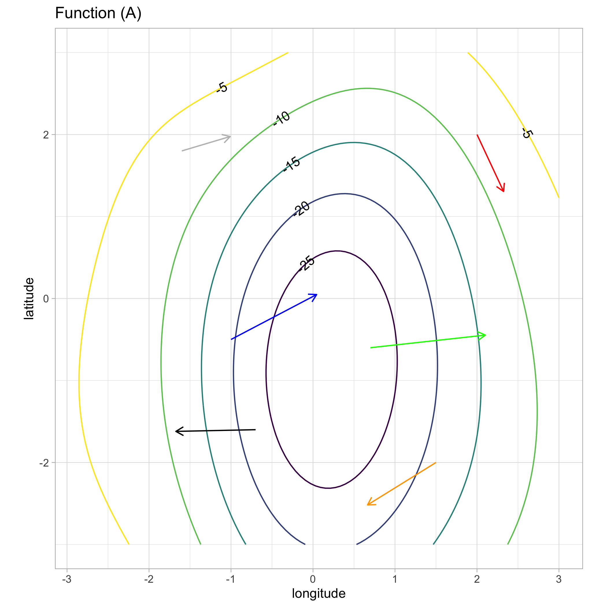</p>
<ol start="2" type="1">
<li>Which color arrow is drawn correctly to represent the gradient at that point of function (B)?</li>
</ol>
<div class="cell" data-inline="true" data-show_hints="true">
<input type="radio" class="devoirs-mcq" value="orange3 " id="grass-grows-orange-2-1" w="19" name="grass-grows-orange-2" hint="no" show_hints="TRUE"> orange3 &nbsp;&nbsp;&nbsp;&nbsp;&nbsp; <input type="radio" class="devoirs-mcq" value="orange " id="grass-grows-orange-2-2" w="23" name="grass-grows-orange-2" hint="no" show_hints="TRUE"> orange &nbsp;&nbsp;&nbsp;&nbsp;&nbsp; <input type="radio" class="devoirs-mcq" value="green " id="grass-grows-orange-2-3" w="32" name="grass-grows-orange-2" hint="Sorry!" show_hints="TRUE"> green &nbsp;&nbsp;&nbsp;&nbsp;&nbsp; <input type="radio" class="devoirs-mcq" value="blue" id="grass-grows-orange-2-4" w="5" name="grass-grows-orange-2" hint="Excellent!" show_hints="TRUE"> blue &nbsp;&nbsp;&nbsp;&nbsp;&nbsp; <input type="radio" class="devoirs-mcq" value="gray " id="grass-grows-orange-2-5" w="3" name="grass-grows-orange-2" hint="Sorry!" show_hints="TRUE"> gray &nbsp;&nbsp;&nbsp;&nbsp;&nbsp; <input type="radio" class="devoirs-mcq" value="black " id="grass-grows-orange-2-6" w="19" name="grass-grows-orange-2" hint="Better luck next time." show_hints="TRUE"> black &nbsp;&nbsp;&nbsp;&nbsp;&nbsp; <input type="radio" class="devoirs-mcq" name="grass-grows-orange-2" id="grass-grows-orange-2.null" style="display: none;" w="skipped" checked="">
<div>
<p><small style="color: grey;" id="grass-grows-orange-2-hintarea">question id: grass-grows-orange-2</small></p>
</div>
</div>
<p>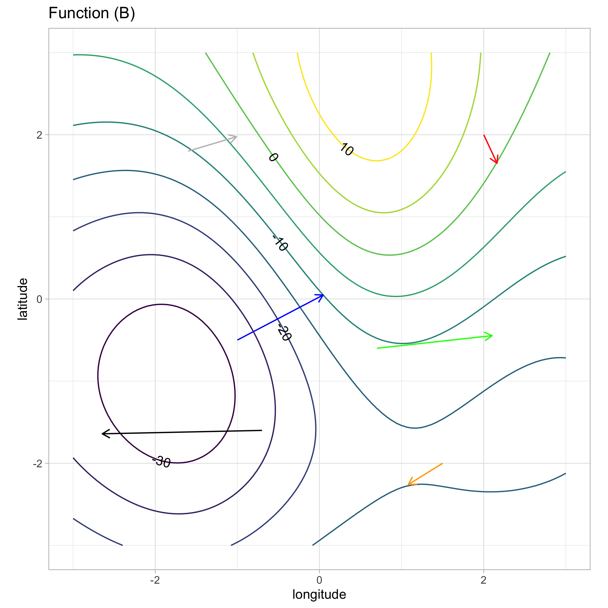</p>
<ol start="3" type="1">
<li>Which color arrow is drawn correctly to represent the gradient at that point of function (C)?</li>
</ol>
<div class="cell" data-inline="true" data-show_hints="false">
<input type="radio" class="devoirs-mcq" value="orange3 " id="grass-grows-orange-3-1" w="23" name="grass-grows-orange-3" hint="no" show_hints="FALSE"> orange3 &nbsp;&nbsp;&nbsp;&nbsp;&nbsp; <input type="radio" class="devoirs-mcq" value="orange " id="grass-grows-orange-3-2" w="7" name="grass-grows-orange-3" hint="incorrect choice" show_hints="FALSE"> orange &nbsp;&nbsp;&nbsp;&nbsp;&nbsp; <input type="radio" class="devoirs-mcq" value="green" id="grass-grows-orange-3-3" w="29" name="grass-grows-orange-3" hint="right-o" show_hints="FALSE"> green &nbsp;&nbsp;&nbsp;&nbsp;&nbsp; <input type="radio" class="devoirs-mcq" value="dodgerblue " id="grass-grows-orange-3-4" w="23" name="grass-grows-orange-3" hint="wrong" show_hints="FALSE"> dodgerblue &nbsp;&nbsp;&nbsp;&nbsp;&nbsp; <input type="radio" class="devoirs-mcq" value="gray " id="grass-grows-orange-3-5" w="23" name="grass-grows-orange-3" hint="wrong" show_hints="FALSE"> gray &nbsp;&nbsp;&nbsp;&nbsp;&nbsp; <input type="radio" class="devoirs-mcq" value="black " id="grass-grows-orange-3-6" w="32" name="grass-grows-orange-3" hint="Try again!" show_hints="FALSE"> black &nbsp;&nbsp;&nbsp;&nbsp;&nbsp; <input type="radio" class="devoirs-mcq" name="grass-grows-orange-3" id="grass-grows-orange-3.null" style="display: none;" w="skipped" checked="">
<div>
<p><small style="color: grey;" id="grass-grows-orange-3-hintarea">question id: grass-grows-orange-3</small></p>
</div>
</div>
<p>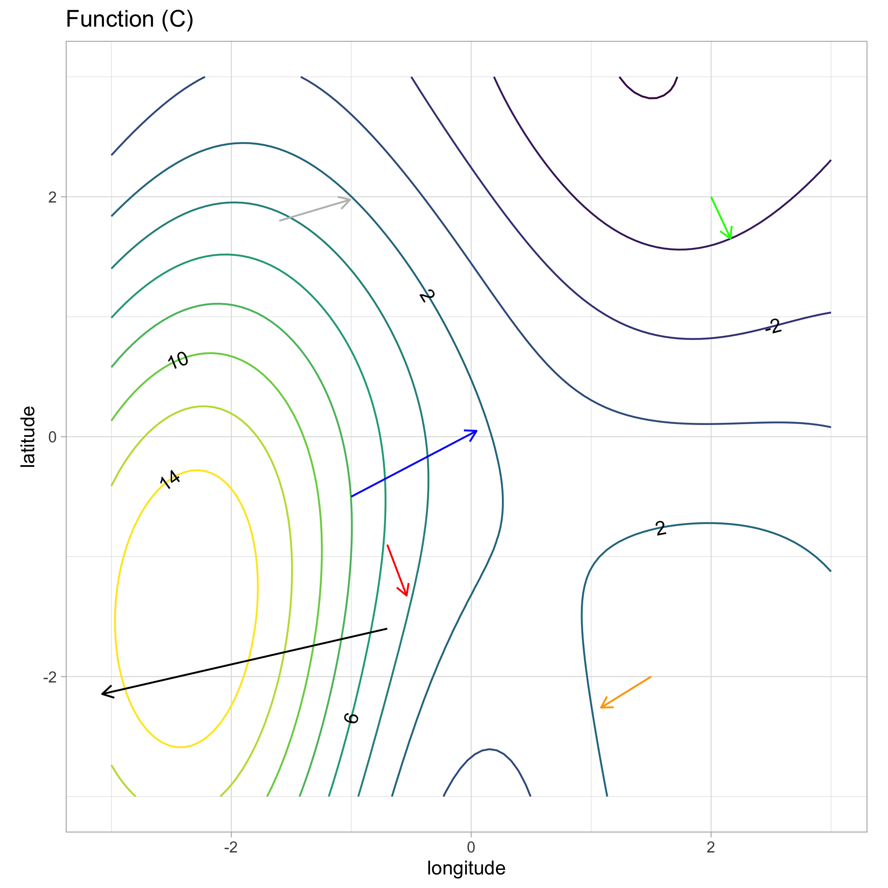</p>
<ol start="4" type="1">
<li>Which color arrow is drawn correctly to represent the gradient at that point of function (D)?</li>
</ol>
<div class="cell" data-inline="true" data-show_hints="false">
<input type="radio" class="devoirs-mcq" value="orange3 " id="grass-grows-orange-4-1" w="19" name="grass-grows-orange-4" hint="wrong" show_hints="FALSE"> orange3 &nbsp;&nbsp;&nbsp;&nbsp;&nbsp; <input type="radio" class="devoirs-mcq" value="orange " id="grass-grows-orange-4-2" w="87" name="grass-grows-orange-4" hint="Sorry!" show_hints="FALSE"> orange &nbsp;&nbsp;&nbsp;&nbsp;&nbsp; <input type="radio" class="devoirs-mcq" value="green " id="grass-grows-orange-4-3" w="23" name="grass-grows-orange-4" hint="Sorry!" show_hints="FALSE"> green &nbsp;&nbsp;&nbsp;&nbsp;&nbsp; <input type="radio" class="devoirs-mcq" value="dodgerblue " id="grass-grows-orange-4-4" w="19" name="grass-grows-orange-4" hint="Sorry!" show_hints="FALSE"> dodgerblue &nbsp;&nbsp;&nbsp;&nbsp;&nbsp; <input type="radio" class="devoirs-mcq" value="gray " id="grass-grows-orange-4-5" w="87" name="grass-grows-orange-4" hint="Not quite right" show_hints="FALSE"> gray &nbsp;&nbsp;&nbsp;&nbsp;&nbsp; <input type="radio" class="devoirs-mcq" value="black" id="grass-grows-orange-4-6" w="16" name="grass-grows-orange-4" hint="Nice." show_hints="FALSE"> black &nbsp;&nbsp;&nbsp;&nbsp;&nbsp; <input type="radio" class="devoirs-mcq" name="grass-grows-orange-4" id="grass-grows-orange-4.null" style="display: none;" w="skipped" checked="">
<div>
<p><small style="color: grey;" id="grass-grows-orange-4-hintarea">question id: grass-grows-orange-4</small></p>
</div>
</div>
<p>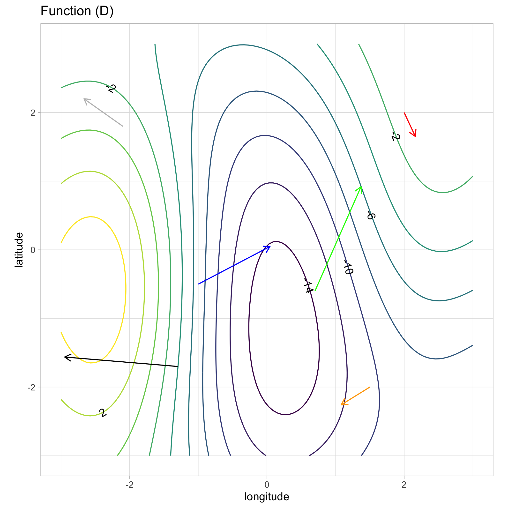</p>
</div>
<div id="exr-grass-grows-red" class="theorem exercise">
<p><span class="theorem-title"><strong>Exercise 2</strong></span> In <a href="#fig-grass-grows-red" class="quarto-xref">Figure&nbsp;<span>1</span></a>, the contour plot of function <span class="math inline">\(g(y, z)\)</span> is overlaid with vectors. The black vector is a correct representation of the gradient (at the root of the vector). The other vectors are also supposed to represent the gradient, but might have something wrong with them (or might not). You’re job is to say what’s wrong with each of those vectors.</p>
<div id="fig-grass-grows-red" class="quarto-float quarto-figure quarto-figure-center anchored">
<figure class="quarto-float quarto-float-fig figure">
<div aria-describedby="fig-grass-grows-red-caption-0ceaefa1-69ba-4598-a22c-09a6ac19f8ca">
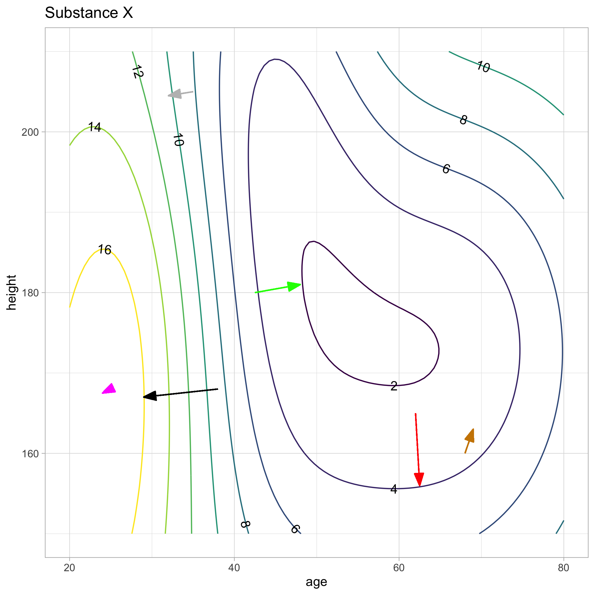
</div>
<figcaption class="quarto-float-caption-bottom quarto-float-caption quarto-float-fig quarto-uncaptioned" id="fig-grass-grows-red-caption-0ceaefa1-69ba-4598-a22c-09a6ac19f8ca">
Figure&nbsp;1
</figcaption>
</figure>
</div>
<ol type="1">
<li>What’s wrong with the <span style="color:red;"><strong>red</strong></span> vector?</li>
</ol>
<div class="cell" data-show_hints="true">
<p>
</p><p><input type="radio" class="devoirs-mcq" value="nothing " id="grass-grows-red-1-1" w="87" name="grass-grows-red-1" hint="Sorry!" show_hints="TRUE"> nothing</p>
<p></p>
<p>
</p><p><input type="radio" class="devoirs-mcq" value="too long" id="grass-grows-red-1-2" w="20" name="grass-grows-red-1" hint="You're right The red vector is located in a place where the function is almost level. You can tell this because the contour lines are spaced far apart. The magnitude of the gradient will be small in such an area. But here, the red vector is even longer than the black vector, even though black is in a very steep area (with closely spaced contours)." show_hints="TRUE"> too long</p>
<p></p>
<p>
</p><p><input type="radio" class="devoirs-mcq" value="too short " id="grass-grows-red-1-3" w="87" name="grass-grows-red-1" hint="wide of the mark" show_hints="TRUE"> too short</p>
<p></p>
<p>
</p><p><input type="radio" class="devoirs-mcq" value="points downhill " id="grass-grows-red-1-4" w="32" name="grass-grows-red-1" hint="Not quite right" show_hints="TRUE"> points downhill</p>
<p></p>
<p>
</p><p><input type="radio" class="devoirs-mcq" value="points uphill" id="grass-grows-red-1-5" w="23" name="grass-grows-red-1" hint="Pointing uphill is what gradient vectors do! No problem with this." show_hints="TRUE"> points uphill</p>
<p></p>
<p>
</p><p><input type="radio" class="devoirs-mcq" value="wrong dire ... entirely " id="grass-grows-red-1-6" w="32" name="grass-grows-red-1" hint="wrong" show_hints="TRUE"> wrong direction entirely </p>
<p></p>
<input type="radio" class="devoirs-mcq" name="grass-grows-red-1" id="grass-grows-red-1.null" style="display: none;" w="skipped" checked="">
<div>
<p><small style="color: grey;" id="grass-grows-red-1-hintarea">question id: grass-grows-red-1</small></p>
</div>
</div>
<ol start="2" type="1">
<li>What’s wrong with the <span style="color:green;"><strong>green</strong></span> vector?</li>
</ol>
<div class="cell" data-show_hints="true">
<p>
</p><p><input type="radio" class="devoirs-mcq" value="nothing " id="grass-grows-red-2-1" w="3" name="grass-grows-red-2" hint="Sorry!" show_hints="TRUE"> nothing</p>
<p></p>
<p>
</p><p><input type="radio" class="devoirs-mcq" value="too long" id="grass-grows-red-2-2" w="7" name="grass-grows-red-2" hint="Note that the vector reflects the steepness at the point where the root of the vector is drawn. The root of the green vector is in an area  where the contour lines are spaced similarly to the area near the root of the black vector. So it is correct that the length of the green vector is similar to the length of the black vector." show_hints="TRUE"> too long</p>
<p></p>
<p>
</p><p><input type="radio" class="devoirs-mcq" value="too short " id="grass-grows-red-2-3" w="87" name="grass-grows-red-2" hint="wrong" show_hints="TRUE"> too short</p>
<p></p>
<p>
</p><p><input type="radio" class="devoirs-mcq" value="points downhill" id="grass-grows-red-2-4" w="18" name="grass-grows-red-2" hint="Right The root of the green vector is near contour=4, the head at contour=2. So the vector is incorrectly pointing downhill. Gradients point in the steepest direction uphill." show_hints="TRUE"> points downhill</p>
<p></p>
<p>
</p><p><input type="radio" class="devoirs-mcq" value="points uphill" id="grass-grows-red-2-5" w="23" name="grass-grows-red-2" hint="Pointing uphill is what gradient vectors do! No problem with this." show_hints="TRUE"> points uphill</p>
<p></p>
<p>
</p><p><input type="radio" class="devoirs-mcq" value="wrong dire ... entirely " id="grass-grows-red-2-6" w="19" name="grass-grows-red-2" hint="Not quite right" show_hints="TRUE"> wrong direction entirely </p>
<p></p>
<input type="radio" class="devoirs-mcq" name="grass-grows-red-2" id="grass-grows-red-2.null" style="display: none;" w="skipped" checked="">
<div>
<p><small style="color: grey;" id="grass-grows-red-2-hintarea">question id: grass-grows-red-2</small></p>
</div>
</div>
<ol start="3" type="1">
<li>What’s wrong with the <span style="color:magenta;"><strong>blue</strong></span> vector?</li>
</ol>
<div class="cell" data-show_hints="true">
<p>
</p><p><input type="radio" class="devoirs-mcq" value="nothing" id="grass-grows-red-3-1" w="8" name="grass-grows-red-3" hint="You're right" show_hints="TRUE"> nothing</p>
<p></p>
<p>
</p><p><input type="radio" class="devoirs-mcq" value="too long " id="grass-grows-red-3-2" w="7" name="grass-grows-red-3" hint="wrong" show_hints="TRUE"> too long</p>
<p></p>
<p>
</p><p><input type="radio" class="devoirs-mcq" value="too short" id="grass-grows-red-3-3" w="23" name="grass-grows-red-3" hint="The blue vector is in a very flat area of the function. That is why it is so short." show_hints="TRUE"> too short</p>
<p></p>
<p>
</p><p><input type="radio" class="devoirs-mcq" value="points downhill " id="grass-grows-red-3-4" w="23" name="grass-grows-red-3" hint="You're mistaken" show_hints="TRUE"> points downhill</p>
<p></p>
<p>
</p><p><input type="radio" class="devoirs-mcq" value="points uphill" id="grass-grows-red-3-5" w="7" name="grass-grows-red-3" hint="Pointing uphill is what gradient vectors do! No problem with this." show_hints="TRUE"> points uphill</p>
<p></p>
<p>
</p><p><input type="radio" class="devoirs-mcq" value="wrong dire ... entirely " id="grass-grows-red-3-6" w="3" name="grass-grows-red-3" hint="wrong" show_hints="TRUE"> wrong direction entirely </p>
<p></p>
<input type="radio" class="devoirs-mcq" name="grass-grows-red-3" id="grass-grows-red-3.null" style="display: none;" w="skipped" checked="">
<div>
<p><small style="color: grey;" id="grass-grows-red-3-hintarea">question id: grass-grows-red-3</small></p>
</div>
</div>
<ol start="4" type="1">
<li>What’s wrong with the <span style="color:orange;"><strong>orange</strong></span> vector?</li>
</ol>
<div class="cell" data-show_hints="true">
<p>
</p><p><input type="radio" class="devoirs-mcq" value="nothing " id="grass-grows-red-4-1" w="3" name="grass-grows-red-4" hint="wide of the mark" show_hints="TRUE"> nothing</p>
<p></p>
<p>
</p><p><input type="radio" class="devoirs-mcq" value="too long " id="grass-grows-red-4-2" w="7" name="grass-grows-red-4" hint="Try again!" show_hints="TRUE"> too long</p>
<p></p>
<p>
</p><p><input type="radio" class="devoirs-mcq" value="too short " id="grass-grows-red-4-3" w="23" name="grass-grows-red-4" hint="You're mistaken" show_hints="TRUE"> too short</p>
<p></p>
<p>
</p><p><input type="radio" class="devoirs-mcq" value="points downhill " id="grass-grows-red-4-4" w="23" name="grass-grows-red-4" hint="You're mistaken" show_hints="TRUE"> points downhill</p>
<p></p>
<p>
</p><p><input type="radio" class="devoirs-mcq" value="points uphill " id="grass-grows-red-4-5" w="19" name="grass-grows-red-4" hint="no" show_hints="TRUE"> points uphill</p>
<p></p>
<p>
</p><p><input type="radio" class="devoirs-mcq" value="wrong dire ... n entirely" id="grass-grows-red-4-6" w="14" name="grass-grows-red-4" hint="Yes Gradient vectors should be perpendicular to nearby contours and should point uphill. The orange vector is neither" show_hints="TRUE"> wrong direction entirely</p>
<p></p>
<input type="radio" class="devoirs-mcq" name="grass-grows-red-4" id="grass-grows-red-4.null" style="display: none;" w="skipped" checked="">
<div>
<p><small style="color: grey;" id="grass-grows-red-4-hintarea">question id: grass-grows-red-4</small></p>
</div>
</div>
<ol start="5" type="1">
<li>What’s wrong with the <span style="color:gray;"><strong>gray</strong></span> vector?</li>
</ol>
<div class="cell" data-show_hints="true">
<p>
</p><p><input type="radio" class="devoirs-mcq" value="nothing " id="grass-grows-red-5-1" w="23" name="grass-grows-red-5" hint="Not quite right" show_hints="TRUE"> nothing</p>
<p></p>
<p>
</p><p><input type="radio" class="devoirs-mcq" value="too long " id="grass-grows-red-5-2" w="87" name="grass-grows-red-5" hint="Better luck next time." show_hints="TRUE"> too long</p>
<p></p>
<p>
</p><p><input type="radio" class="devoirs-mcq" value="too short" id="grass-grows-red-5-3" w="35" name="grass-grows-red-5" hint="Good job! The function is practically as steep at the root of the gray vector as it is at the root of the black vector. (You can tell this from the spacing of the contour lines.) So the magnitude of the gray vector should be just about the same as the magnitude of the black vector." show_hints="TRUE"> too short</p>
<p></p>
<p>
</p><p><input type="radio" class="devoirs-mcq" value="points downhill " id="grass-grows-red-5-4" w="32" name="grass-grows-red-5" hint="wide of the mark" show_hints="TRUE"> points downhill</p>
<p></p>
<p>
</p><p><input type="radio" class="devoirs-mcq" value="points uphill " id="grass-grows-red-5-5" w="23" name="grass-grows-red-5" hint="wide of the mark" show_hints="TRUE"> points uphill </p>
<p></p>
<input type="radio" class="devoirs-mcq" name="grass-grows-red-5" id="grass-grows-red-5.null" style="display: none;" w="skipped" checked="">
<div>
<p><small style="color: grey;" id="grass-grows-red-5-hintarea">question id: grass-grows-red-5</small></p>
</div>
</div>
</div>
<div id="exr-gradient-field-violet" class="theorem exercise">
<p><span class="theorem-title"><strong>Exercise 3</strong></span> The gradient plot below is marked with several colored lines which represent <em>slices</em> through the surface. Your job is to match these up with the slice plots presented below.</p>
<div class="cell">
<div class="cell-output-display">
<div>
<figure class="figure">
<p>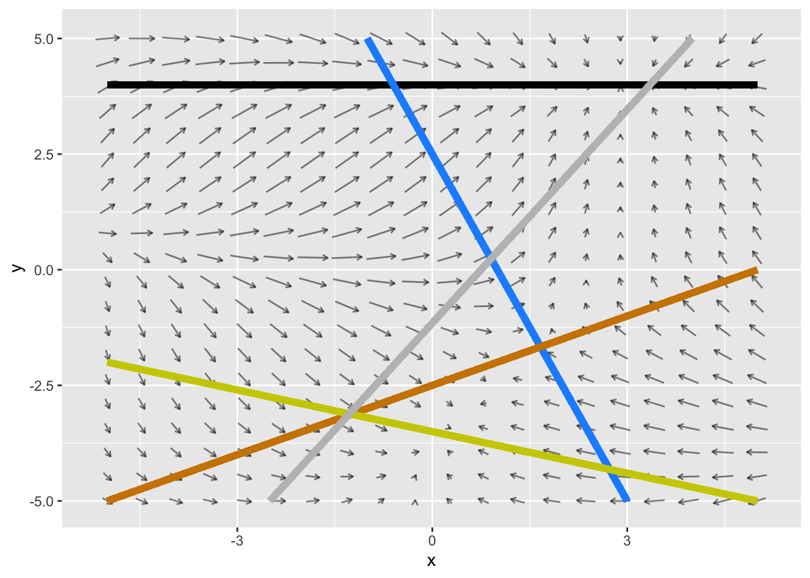</p>
</figure>
</div>
</div>
</div>
<div class="cell">
<div class="cell-output-display">
<div>
<figure class="figure">
<p>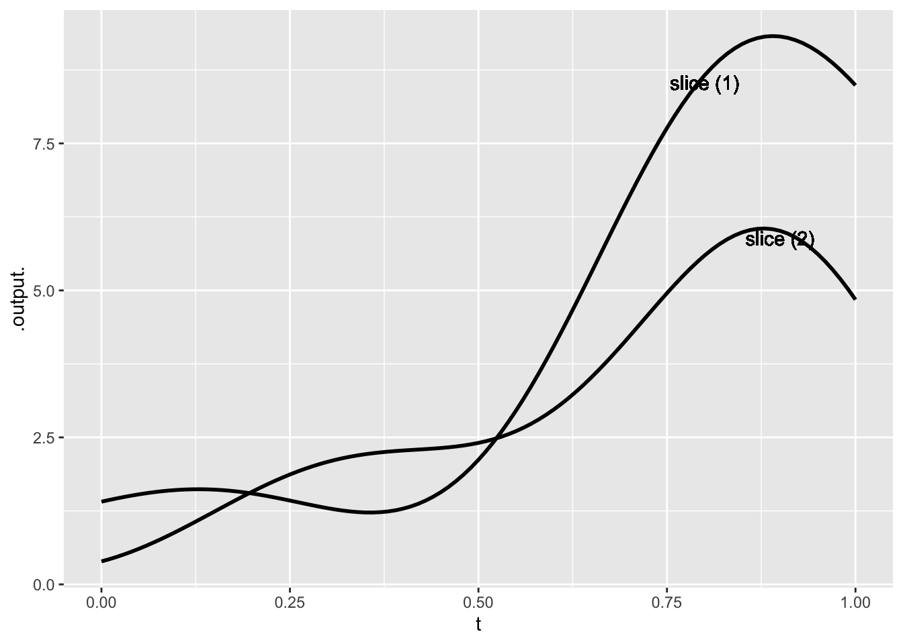</p>
</figure>
</div>
</div>
<div class="cell-output-display">
<div>
<figure class="figure">
<p>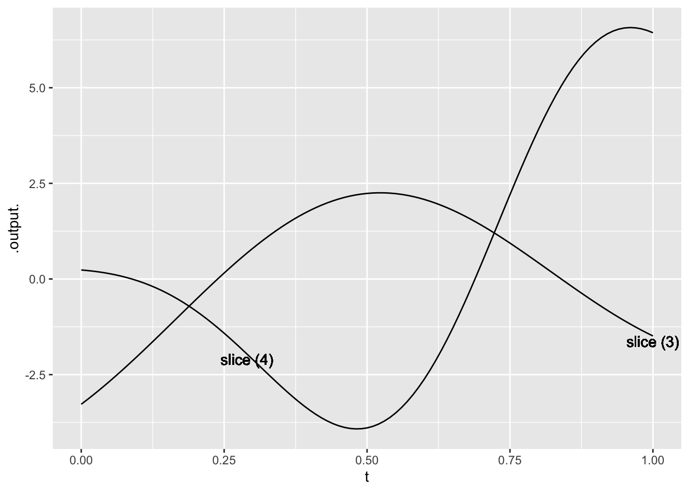</p>
</figure>
</div>
</div>
</div>
<p>In the slice plots, the input <span class="math inline">\(t\)</span> reflects the position on the slice. At <span class="math inline">\(t=0\)</span>, position is at the leftmost point of the slice, while at <span class="math inline">\(t=1\)</span> position is at the right terminus of the slice.</p>
<ol type="1">
<li>Which color line corresponds to slice 1?</li>
</ol>
<div class="cell" data-show_hints="true">
<p>
</p><p><input type="radio" class="devoirs-mcq" value="black " id="gradient-field-violet-1-1" w="3" name="gradient-field-violet-1" hint="Not quite right" show_hints="TRUE"> black</p>
<p></p>
<p>
</p><p><input type="radio" class="devoirs-mcq" value="gray" id="gradient-field-violet-1-2" w="29" name="gradient-field-violet-1" hint="Yes" show_hints="TRUE"> gray</p>
<p></p>
<p>
</p><p><input type="radio" class="devoirs-mcq" value="blue " id="gradient-field-violet-1-3" w="19" name="gradient-field-violet-1" hint="Try again!" show_hints="TRUE"> blue</p>
<p></p>
<p>
</p><p><input type="radio" class="devoirs-mcq" value="tan " id="gradient-field-violet-1-4" w="23" name="gradient-field-violet-1" hint="wide of the mark" show_hints="TRUE"> tan</p>
<p></p>
<p>
</p><p><input type="radio" class="devoirs-mcq" value="yellow " id="gradient-field-violet-1-5" w="7" name="gradient-field-violet-1" hint="Sorry!" show_hints="TRUE"> yellow</p>
<p></p>
<input type="radio" class="devoirs-mcq" name="gradient-field-violet-1" id="gradient-field-violet-1.null" style="display: none;" w="skipped" checked="">
<div>
<p><small style="color: grey;" id="gradient-field-violet-1-hintarea">question id: gradient-field-violet-1</small></p>
</div>
</div>
<ol start="2" type="1">
<li>Which color line corresponds to slice 2?</li>
</ol>
<div class="cell" data-show_hints="true">
<p>
</p><p><input type="radio" class="devoirs-mcq" value="black " id="gradient-field-violet-2-1" w="7" name="gradient-field-violet-2" hint="incorrect choice" show_hints="TRUE"> black</p>
<p></p>
<p>
</p><p><input type="radio" class="devoirs-mcq" value="gray " id="gradient-field-violet-2-2" w="32" name="gradient-field-violet-2" hint="no" show_hints="TRUE"> gray</p>
<p></p>
<p>
</p><p><input type="radio" class="devoirs-mcq" value="blue" id="gradient-field-violet-2-3" w="29" name="gradient-field-violet-2" hint="Correct" show_hints="TRUE"> blue</p>
<p></p>
<p>
</p><p><input type="radio" class="devoirs-mcq" value="tan " id="gradient-field-violet-2-4" w="19" name="gradient-field-violet-2" hint="Sorry!" show_hints="TRUE"> tan</p>
<p></p>
<p>
</p><p><input type="radio" class="devoirs-mcq" value="yellow " id="gradient-field-violet-2-5" w="7" name="gradient-field-violet-2" hint="wide of the mark" show_hints="TRUE"> yellow</p>
<p></p>
<input type="radio" class="devoirs-mcq" name="gradient-field-violet-2" id="gradient-field-violet-2.null" style="display: none;" w="skipped" checked="">
<div>
<p><small style="color: grey;" id="gradient-field-violet-2-hintarea">question id: gradient-field-violet-2</small></p>
</div>
</div>
<ol start="3" type="1">
<li>Which color line corresponds to slice 3?</li>
</ol>
<div class="cell" data-show_hints="true">
<p>
</p><p><input type="radio" class="devoirs-mcq" value="black " id="gradient-field-violet-3-1" w="32" name="gradient-field-violet-3" hint="You're mistaken" show_hints="TRUE"> black</p>
<p></p>
<p>
</p><p><input type="radio" class="devoirs-mcq" value="gray " id="gradient-field-violet-3-2" w="87" name="gradient-field-violet-3" hint="Better luck next time." show_hints="TRUE"> gray</p>
<p></p>
<p>
</p><p><input type="radio" class="devoirs-mcq" value="blue " id="gradient-field-violet-3-3" w="19" name="gradient-field-violet-3" hint="Not quite right" show_hints="TRUE"> blue</p>
<p></p>
<p>
</p><p><input type="radio" class="devoirs-mcq" value="tan " id="gradient-field-violet-3-4" w="87" name="gradient-field-violet-3" hint="wrong" show_hints="TRUE"> tan</p>
<p></p>
<p>
</p><p><input type="radio" class="devoirs-mcq" value="yellow" id="gradient-field-violet-3-5" w="16" name="gradient-field-violet-3" hint="Yes" show_hints="TRUE"> yellow</p>
<p></p>
<input type="radio" class="devoirs-mcq" name="gradient-field-violet-3" id="gradient-field-violet-3.null" style="display: none;" w="skipped" checked="">
<div>
<p><small style="color: grey;" id="gradient-field-violet-3-hintarea">question id: gradient-field-violet-3</small></p>
</div>
</div>
<ol start="4" type="1">
<li>Which color line corresponds to slice 4?</li>
</ol>
<div class="cell" data-show_hints="true">
<p>
</p><p><input type="radio" class="devoirs-mcq" value="black " id="gradient-field-violet-4-1" w="87" name="gradient-field-violet-4" hint="Try again!" show_hints="TRUE"> black</p>
<p></p>
<p>
</p><p><input type="radio" class="devoirs-mcq" value="gray " id="gradient-field-violet-4-2" w="3" name="gradient-field-violet-4" hint="Sorry!" show_hints="TRUE"> gray</p>
<p></p>
<p>
</p><p><input type="radio" class="devoirs-mcq" value="blue " id="gradient-field-violet-4-3" w="23" name="gradient-field-violet-4" hint="Try again!" show_hints="TRUE"> blue</p>
<p></p>
<p>
</p><p><input type="radio" class="devoirs-mcq" value="tan" id="gradient-field-violet-4-4" w="41" name="gradient-field-violet-4" hint="Good job!" show_hints="TRUE"> tan</p>
<p></p>
<p>
</p><p><input type="radio" class="devoirs-mcq" value="yellow " id="gradient-field-violet-4-5" w="3" name="gradient-field-violet-4" hint="no" show_hints="TRUE"> yellow</p>
<p></p>
<input type="radio" class="devoirs-mcq" name="gradient-field-violet-4" id="gradient-field-violet-4.null" style="display: none;" w="skipped" checked="">
<div>
<p><small style="color: grey;" id="gradient-field-violet-4-hintarea">question id: gradient-field-violet-4</small></p>
</div>
</div>
</div>
<div id="exr-gradient-field-orange" class="theorem exercise">
<p><span class="theorem-title"><strong>Exercise 4</strong></span> It is relatively easy to assess partial derivatives when you know the gradient. After all, the gradient is the vector of <span class="math inline">\((\partial_x\,f(x,y), \partial_y f(x,y))\)</span>. To train your eye, <a href="#fig-gradient-field-orange" class="quarto-xref">Figure&nbsp;<span>2</span></a> shows contour plot and a corresponding gradient plot.</p>
<div id="fig-gradient-field-orange" class="quarto-float quarto-figure quarto-figure-center anchored">
<figure class="quarto-float quarto-float-fig figure">
<div aria-describedby="fig-gradient-field-orange-caption-0ceaefa1-69ba-4598-a22c-09a6ac19f8ca">
<div>

</div>
<div class="cell quarto-layout-panel" data-layout-ncol="2">
<div class="quarto-layout-row">
<div class="quarto-layout-cell" style="flex-basis: 50.0%;justify-content: center;">
<p></p>
</div>
<div class="quarto-layout-cell" style="flex-basis: 50.0%;justify-content: center;">
<p>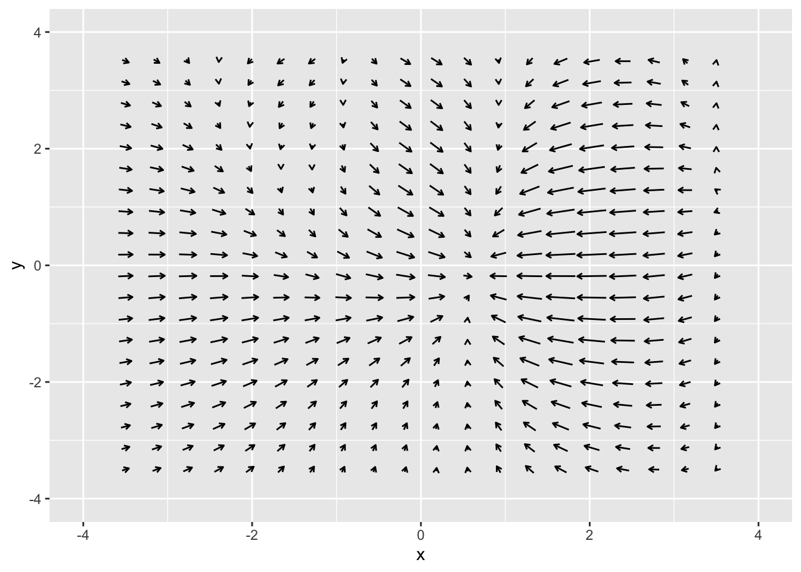</p>
</div>
</div>
</div>
</div>
<figcaption class="quarto-float-caption-bottom quarto-float-caption quarto-float-fig quarto-uncaptioned" id="fig-gradient-field-orange-caption-0ceaefa1-69ba-4598-a22c-09a6ac19f8ca">
Figure&nbsp;2
</figcaption>
</figure>
</div>
<ol type="1">
<li>What is the rule for determining <span class="math inline">\(\partial_x f(x,y)\)</span> from the direction of the gradient vector?</li>
</ol>
<div class="cell" data-show_hints="true">
<p>
</p><p><input type="radio" class="devoirs-mcq" value="If the vec ...  positive." id="gradient-field-orange-1-1" w="20" name="gradient-field-orange-1" hint="Correct" show_hints="TRUE"> If the vector has a component pointing right, <span class="math inline">\(\partial_x f\)</span> is positive.</p>
<p></p>
<p>
</p><p><input type="radio" class="devoirs-mcq" value="If the vec ... s positive" id="gradient-field-orange-1-2" w="19" name="gradient-field-orange-1" hint="If the gradient points left, then uphill is to the left. So the function is increasing from right to left. That is a negative partial derivative." show_hints="TRUE"> If the vector has a component pointing left, <span class="math inline">\(\partial_x f\)</span> is positive</p>
<p></p>
<p>
</p><p><input type="radio" class="devoirs-mcq" value="If the vec ...  positive." id="gradient-field-orange-1-3" w="7" name="gradient-field-orange-1" hint="This would be true for the partial derivative with respect to $y$, but that has to relevance to the partial with respect to $x$." show_hints="TRUE"> If the vector has a vertical component pointing up, <span class="math inline">\(\partial_x f\)</span> is positive.</p>
<p></p>
<p>
</p><p><input type="radio" class="devoirs-mcq" value="If the vec ...  positive." id="gradient-field-orange-1-4" w="87" name="gradient-field-orange-1" hint="No, but the partial with respect to $y$ would be negative." show_hints="TRUE"> If the vector has a component pointing downward, the partial derivative <span class="math inline">\(\partial_x f\)</span> is positive.</p>
<p></p>
<input type="radio" class="devoirs-mcq" name="gradient-field-orange-1" id="gradient-field-orange-1.null" style="display: none;" w="skipped" checked="">
<div>
<p><small style="color: grey;" id="gradient-field-orange-1-hintarea">question id: gradient-field-orange-1</small></p>
</div>
</div>
<ol start="2" type="1">
<li>What is the rule for determining <span class="math inline">\(\partial_y f(x,y)\)</span> from the direction of the gradient vector?</li>
</ol>
<div class="cell" data-show_hints="true">
<p>
</p><p><input type="radio" class="devoirs-mcq" value="If the vec ...  positive." id="gradient-field-orange-2-1" w="3" name="gradient-field-orange-2" hint="Left and right are about $\partial_x f$, not $\partial_y f$." show_hints="TRUE"> If the vector has a component pointing right, <span class="math inline">\(\partial_y f\)</span> is positive.</p>
<p></p>
<p>
</p><p><input type="radio" class="devoirs-mcq" value="If the vec ...  positive." id="gradient-field-orange-2-2" w="7" name="gradient-field-orange-2" hint="Left and right are about $\partial_x f$, not $\partial_y f$." show_hints="TRUE"> If the vector has a component pointing left, <span class="math inline">\(\partial_y f\)</span> is positive.</p>
<p></p>
<p>
</p><p><input type="radio" class="devoirs-mcq" value="If the vec ...  positive." id="gradient-field-orange-2-3" w="35" name="gradient-field-orange-2" hint="Correct" show_hints="TRUE"> If the vector has a vertical component pointing up, <span class="math inline">\(\partial_y f\)</span> is positive.</p>
<p></p>
<p>
</p><p><input type="radio" class="devoirs-mcq" value="If the vec ...  positive." id="gradient-field-orange-2-4" w="7" name="gradient-field-orange-2" hint="The partial with respect to $y$ would be negative." show_hints="TRUE"> If the vector has a component pointing downward, the partial derivative <span class="math inline">\(\partial_y f\)</span> is positive.</p>
<p></p>
<input type="radio" class="devoirs-mcq" name="gradient-field-orange-2" id="gradient-field-orange-2.null" style="display: none;" w="skipped" checked="">
<div>
<p><small style="color: grey;" id="gradient-field-orange-2-hintarea">question id: gradient-field-orange-2</small></p>
</div>
</div>
</div>
<div id="exr-gradient-field-red" class="theorem exercise">
<p><span class="theorem-title"><strong>Exercise 5</strong></span> Here are contour maps and gradient fields of several functions with input <span class="math inline">\(x\)</span> and <span class="math inline">\(y\)</span>. But any row of graphs may show two different functions. Your job is to match the contour plot with the gradient field, which may be in another row.</p>
<div id="fig-gradient-field-red" class="quarto-float quarto-figure quarto-figure-center anchored">
<figure class="quarto-float quarto-float-fig figure">
<div aria-describedby="fig-gradient-field-red-caption-0ceaefa1-69ba-4598-a22c-09a6ac19f8ca">
<div>

</div>
<div class="cell quarto-layout-panel" data-layout-ncol="2">
<div class="quarto-layout-row">
<div class="quarto-layout-cell" style="flex-basis: 50.0%;justify-content: center;">
<p>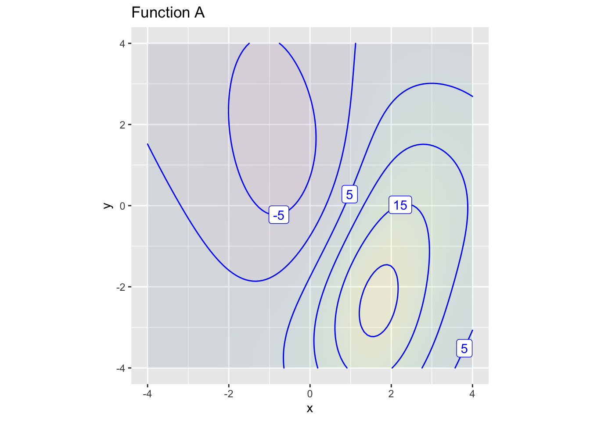</p>
</div>
<div class="quarto-layout-cell" style="flex-basis: 50.0%;justify-content: center;">
<p>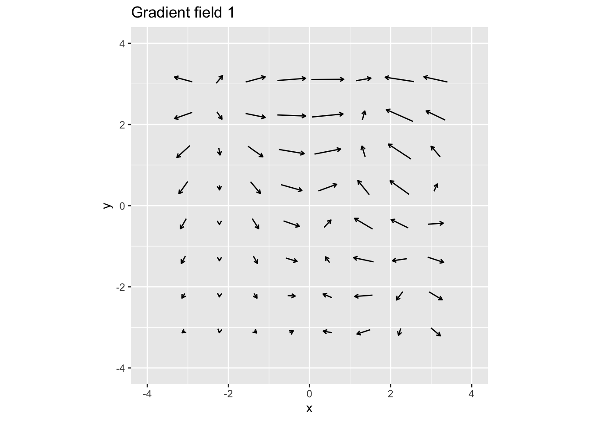</p>
</div>
</div>
<div class="quarto-layout-row">
<div class="quarto-layout-cell" style="flex-basis: 50.0%;justify-content: center;">
<p>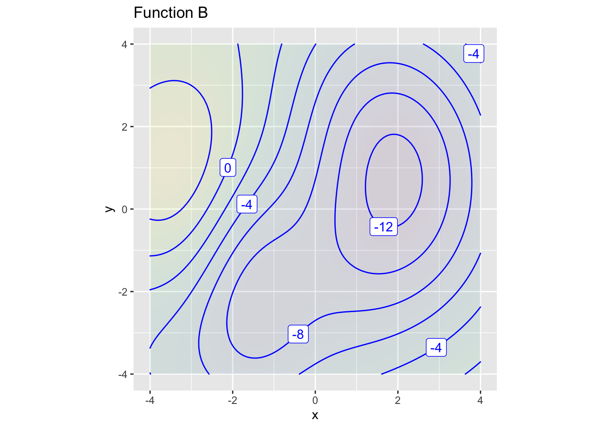</p>
</div>
<div class="quarto-layout-cell" style="flex-basis: 50.0%;justify-content: center;">
<p></p>
</div>
</div>
<div class="quarto-layout-row">
<div class="quarto-layout-cell" style="flex-basis: 50.0%;justify-content: center;">
<p>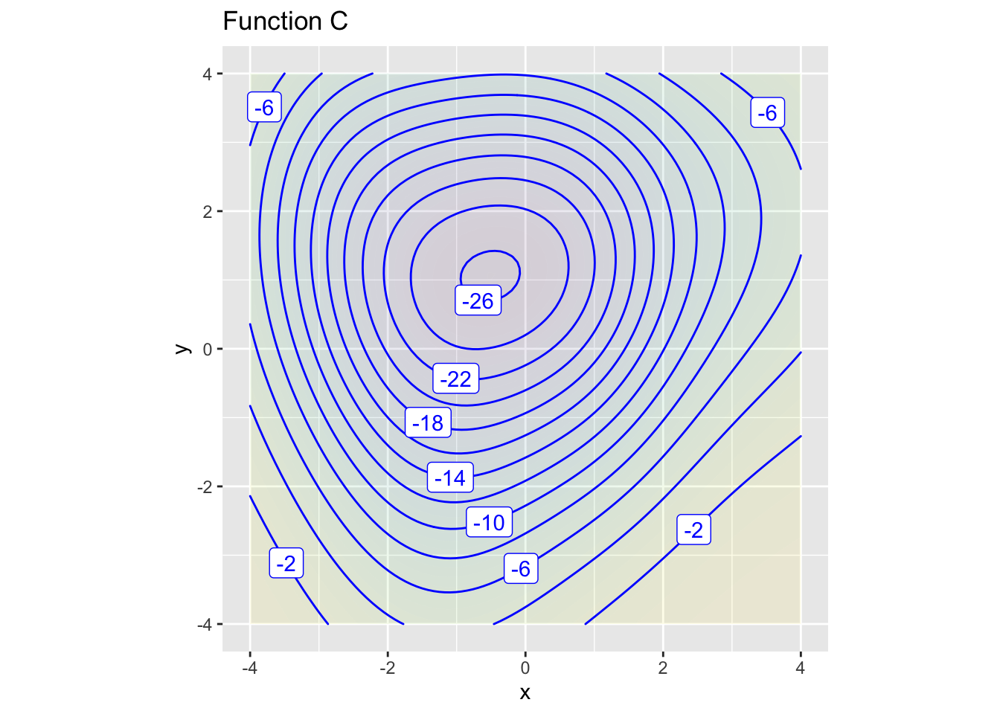</p>
</div>
<div class="quarto-layout-cell" style="flex-basis: 50.0%;justify-content: center;">
<p>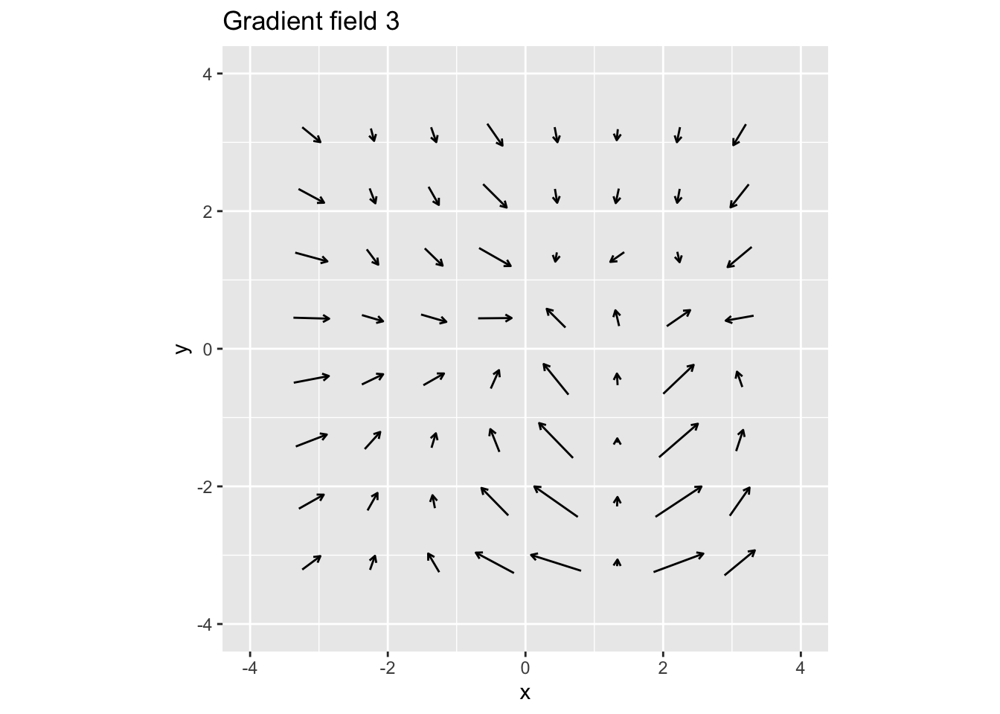</p>
</div>
</div>
<div class="quarto-layout-row">
<div class="quarto-layout-cell" style="flex-basis: 50.0%;justify-content: center;">
<p>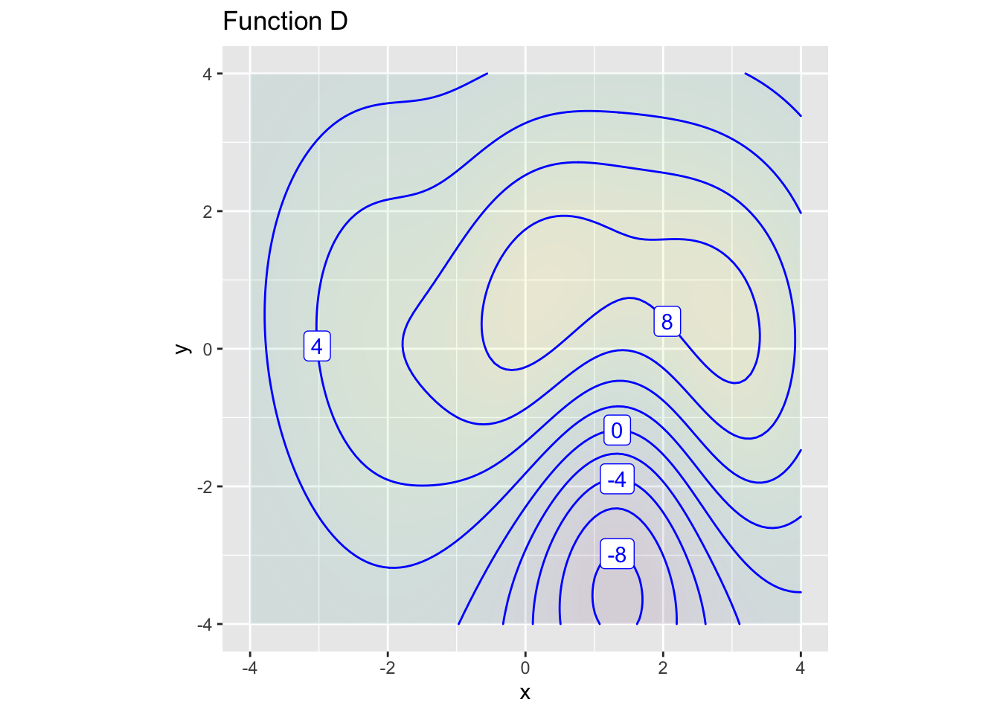</p>
</div>
<div class="quarto-layout-cell" style="flex-basis: 50.0%;justify-content: center;">
<p>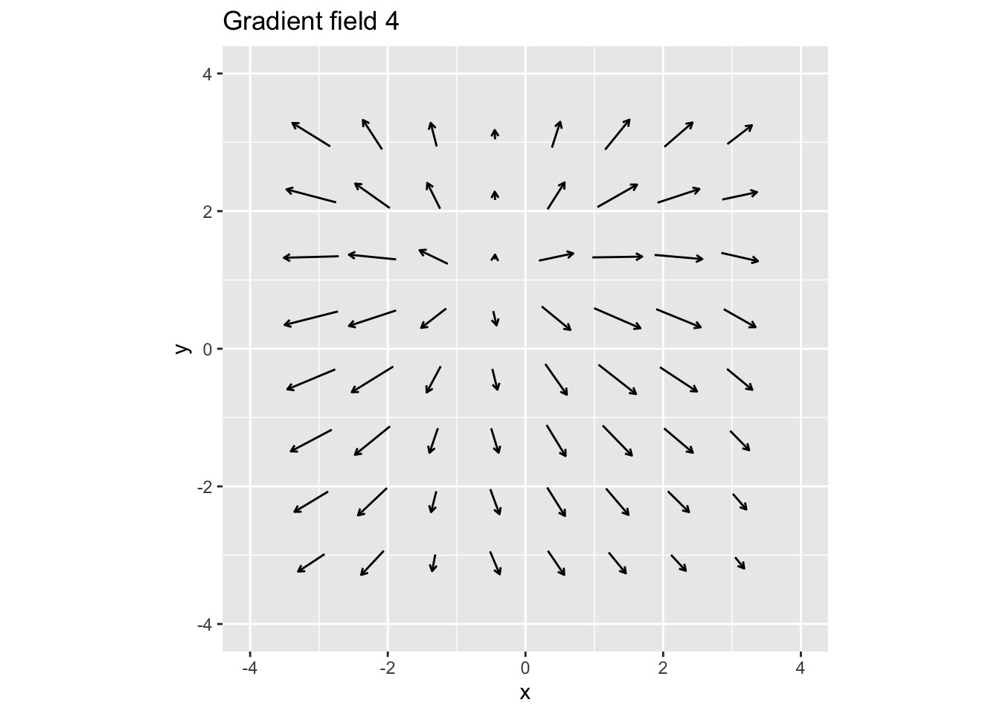</p>
</div>
</div>
<div class="quarto-layout-row">
<div class="quarto-layout-cell" style="flex-basis: 50.0%;justify-content: center;">
<p>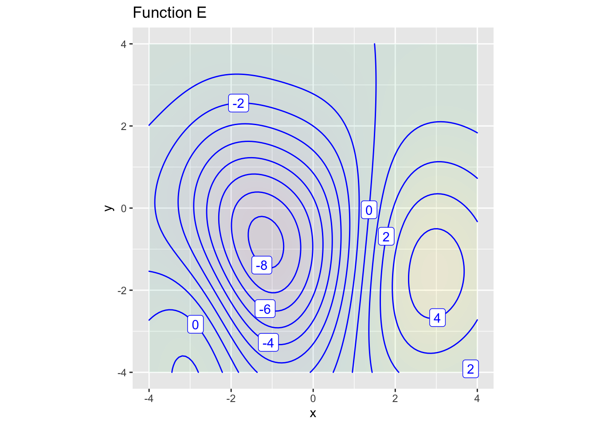</p>
</div>
<div class="quarto-layout-cell" style="flex-basis: 50.0%;justify-content: center;">
<p>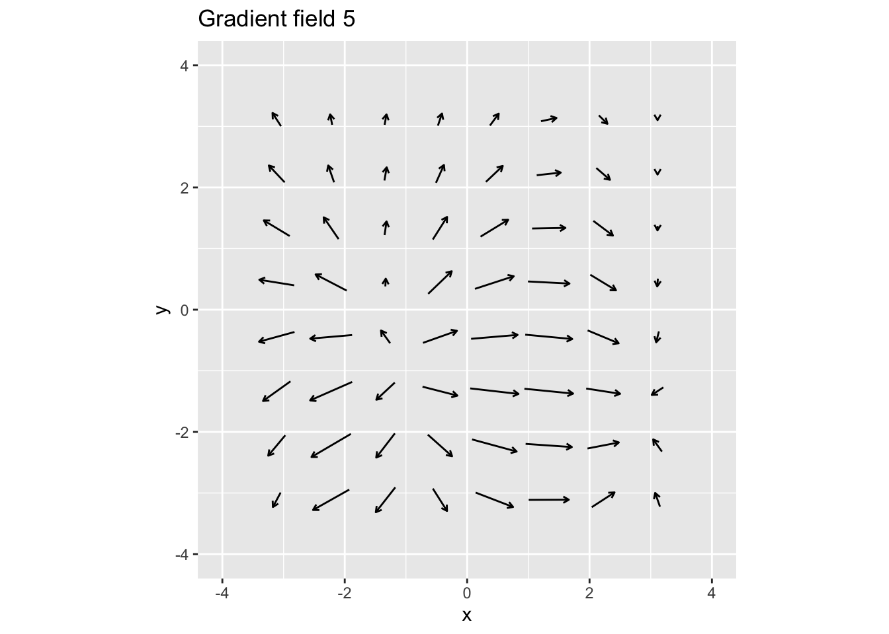</p>
</div>
</div>
<div class="quarto-layout-row">
<div class="quarto-layout-cell" style="flex-basis: 50.0%;justify-content: center;">
<p>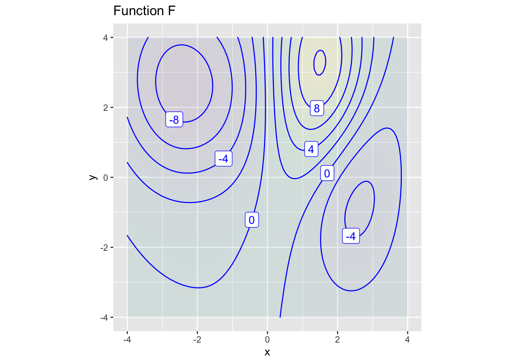</p>
</div>
<div class="quarto-layout-cell" style="flex-basis: 50.0%;justify-content: center;">
<p>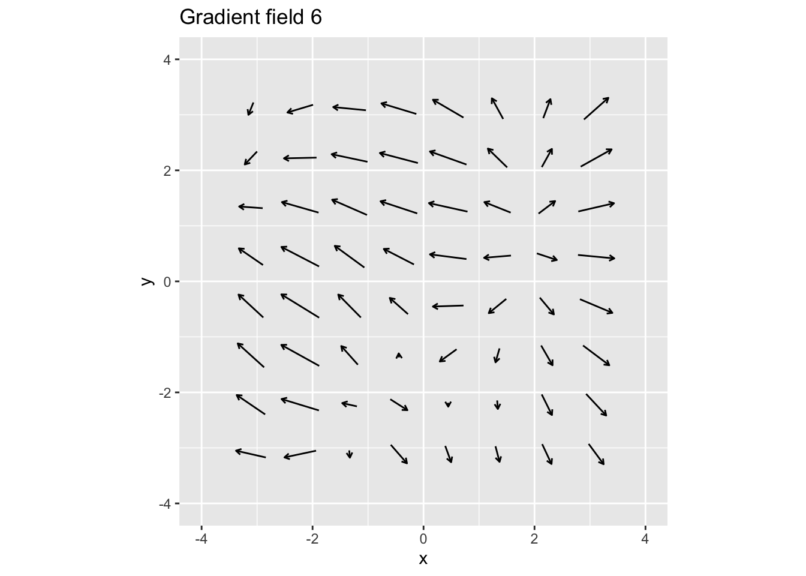</p>
</div>
</div>
</div>
</div>
<figcaption class="quarto-float-caption-bottom quarto-float-caption quarto-float-fig quarto-uncaptioned" id="fig-gradient-field-red-caption-0ceaefa1-69ba-4598-a22c-09a6ac19f8ca">
Figure&nbsp;3
</figcaption>
</figure>
</div>
<ol type="1">
<li>Which contour plot matches gradient field 1?</li>
</ol>
<div class="cell" data-show_hints="true" data-inline="true">
<input type="radio" class="devoirs-mcq" value="A " id="gradient-field-red-1-1" w="32" name="gradient-field-red-1" hint="wrong" show_hints="TRUE"> A &nbsp;&nbsp;&nbsp;&nbsp;&nbsp; <input type="radio" class="devoirs-mcq" value="B " id="gradient-field-red-1-2" w="23" name="gradient-field-red-1" hint="Better luck next time." show_hints="TRUE"> B &nbsp;&nbsp;&nbsp;&nbsp;&nbsp; <input type="radio" class="devoirs-mcq" value="C " id="gradient-field-red-1-3" w="23" name="gradient-field-red-1" hint="Better luck next time." show_hints="TRUE"> C &nbsp;&nbsp;&nbsp;&nbsp;&nbsp; <input type="radio" class="devoirs-mcq" value="D " id="gradient-field-red-1-4" w="7" name="gradient-field-red-1" hint="Try again!" show_hints="TRUE"> D &nbsp;&nbsp;&nbsp;&nbsp;&nbsp; <input type="radio" class="devoirs-mcq" value="E " id="gradient-field-red-1-5" w="87" name="gradient-field-red-1" hint="You're mistaken" show_hints="TRUE"> E &nbsp;&nbsp;&nbsp;&nbsp;&nbsp; <input type="radio" class="devoirs-mcq" value="F" id="gradient-field-red-1-6" w="16" name="gradient-field-red-1" hint="right-o" show_hints="TRUE"> F &nbsp;&nbsp;&nbsp;&nbsp;&nbsp; <input type="radio" class="devoirs-mcq" name="gradient-field-red-1" id="gradient-field-red-1.null" style="display: none;" w="skipped" checked="">
<div>
<p><small style="color: grey;" id="gradient-field-red-1-hintarea">question id: gradient-field-red-1</small></p>
</div>
</div>
<ol start="2" type="1">
<li>Which contour plot matches gradient field 2?</li>
</ol>
<div class="cell" data-show_hints="false" data-inline="true">
<input type="radio" class="devoirs-mcq" value="A" id="gradient-field-red-2-1" w="29" name="gradient-field-red-2" hint="You're right" show_hints="FALSE"> A &nbsp;&nbsp;&nbsp;&nbsp;&nbsp; <input type="radio" class="devoirs-mcq" value="B " id="gradient-field-red-2-2" w="7" name="gradient-field-red-2" hint="You're mistaken" show_hints="FALSE"> B &nbsp;&nbsp;&nbsp;&nbsp;&nbsp; <input type="radio" class="devoirs-mcq" value="C " id="gradient-field-red-2-3" w="23" name="gradient-field-red-2" hint="no" show_hints="FALSE"> C &nbsp;&nbsp;&nbsp;&nbsp;&nbsp; <input type="radio" class="devoirs-mcq" value="D " id="gradient-field-red-2-4" w="7" name="gradient-field-red-2" hint="You're mistaken" show_hints="FALSE"> D &nbsp;&nbsp;&nbsp;&nbsp;&nbsp; <input type="radio" class="devoirs-mcq" value="E " id="gradient-field-red-2-5" w="23" name="gradient-field-red-2" hint="Try again!" show_hints="FALSE"> E &nbsp;&nbsp;&nbsp;&nbsp;&nbsp; <input type="radio" class="devoirs-mcq" value="F " id="gradient-field-red-2-6" w="23" name="gradient-field-red-2" hint="no" show_hints="FALSE"> F &nbsp;&nbsp;&nbsp;&nbsp;&nbsp; <input type="radio" class="devoirs-mcq" name="gradient-field-red-2" id="gradient-field-red-2.null" style="display: none;" w="skipped" checked="">
<div>
<p><small style="color: grey;" id="gradient-field-red-2-hintarea">question id: gradient-field-red-2</small></p>
</div>
</div>
<ol start="3" type="1">
<li>Which contour plot matches gradient field 3?</li>
</ol>
<div class="cell" data-show_hints="false" data-inline="true">
<input type="radio" class="devoirs-mcq" value="A " id="gradient-field-red-3-1" w="32" name="gradient-field-red-3" hint="wide of the mark" show_hints="FALSE"> A &nbsp;&nbsp;&nbsp;&nbsp;&nbsp; <input type="radio" class="devoirs-mcq" value="B " id="gradient-field-red-3-2" w="87" name="gradient-field-red-3" hint="Sorry!" show_hints="FALSE"> B &nbsp;&nbsp;&nbsp;&nbsp;&nbsp; <input type="radio" class="devoirs-mcq" value="C " id="gradient-field-red-3-3" w="23" name="gradient-field-red-3" hint="You're mistaken" show_hints="FALSE"> C &nbsp;&nbsp;&nbsp;&nbsp;&nbsp; <input type="radio" class="devoirs-mcq" value="D" id="gradient-field-red-3-4" w="14" name="gradient-field-red-3" hint="Correct" show_hints="FALSE"> D &nbsp;&nbsp;&nbsp;&nbsp;&nbsp; <input type="radio" class="devoirs-mcq" value="E " id="gradient-field-red-3-5" w="19" name="gradient-field-red-3" hint="Try again!" show_hints="FALSE"> E &nbsp;&nbsp;&nbsp;&nbsp;&nbsp; <input type="radio" class="devoirs-mcq" value="F " id="gradient-field-red-3-6" w="19" name="gradient-field-red-3" hint="Sorry!" show_hints="FALSE"> F &nbsp;&nbsp;&nbsp;&nbsp;&nbsp; <input type="radio" class="devoirs-mcq" name="gradient-field-red-3" id="gradient-field-red-3.null" style="display: none;" w="skipped" checked="">
<div>
<p><small style="color: grey;" id="gradient-field-red-3-hintarea">question id: gradient-field-red-3</small></p>
</div>
</div>
<ol start="4" type="1">
<li>Which contour plot matches gradient field 4?</li>
</ol>
<div class="cell" data-show_hints="false" data-inline="true">
<input type="radio" class="devoirs-mcq" value="A " id="gradient-field-red-4-1" w="87" name="gradient-field-red-4" hint="no" show_hints="FALSE"> A &nbsp;&nbsp;&nbsp;&nbsp;&nbsp; <input type="radio" class="devoirs-mcq" value="B " id="gradient-field-red-4-2" w="23" name="gradient-field-red-4" hint="Try again!" show_hints="FALSE"> B &nbsp;&nbsp;&nbsp;&nbsp;&nbsp; <input type="radio" class="devoirs-mcq" value="C" id="gradient-field-red-4-3" w="29" name="gradient-field-red-4" hint="right-o" show_hints="FALSE"> C &nbsp;&nbsp;&nbsp;&nbsp;&nbsp; <input type="radio" class="devoirs-mcq" value="D " id="gradient-field-red-4-4" w="7" name="gradient-field-red-4" hint="no" show_hints="FALSE"> D &nbsp;&nbsp;&nbsp;&nbsp;&nbsp; <input type="radio" class="devoirs-mcq" value="E " id="gradient-field-red-4-5" w="19" name="gradient-field-red-4" hint="wide of the mark" show_hints="FALSE"> E &nbsp;&nbsp;&nbsp;&nbsp;&nbsp; <input type="radio" class="devoirs-mcq" value="F " id="gradient-field-red-4-6" w="19" name="gradient-field-red-4" hint="Not quite right" show_hints="FALSE"> F &nbsp;&nbsp;&nbsp;&nbsp;&nbsp; <input type="radio" class="devoirs-mcq" name="gradient-field-red-4" id="gradient-field-red-4.null" style="display: none;" w="skipped" checked="">
<div>
<p><small style="color: grey;" id="gradient-field-red-4-hintarea">question id: gradient-field-red-4</small></p>
</div>
</div>
<ol start="5" type="1">
<li>Which contour plot matches gradient field 5?</li>
</ol>
<div class="cell" data-show_hints="false" data-inline="true">
<input type="radio" class="devoirs-mcq" value="A " id="gradient-field-red-5-1" w="3" name="gradient-field-red-5" hint="Not quite right" show_hints="FALSE"> A &nbsp;&nbsp;&nbsp;&nbsp;&nbsp; <input type="radio" class="devoirs-mcq" value="B " id="gradient-field-red-5-2" w="32" name="gradient-field-red-5" hint="wide of the mark" show_hints="FALSE"> B &nbsp;&nbsp;&nbsp;&nbsp;&nbsp; <input type="radio" class="devoirs-mcq" value="C " id="gradient-field-red-5-3" w="7" name="gradient-field-red-5" hint="wide of the mark" show_hints="FALSE"> C &nbsp;&nbsp;&nbsp;&nbsp;&nbsp; <input type="radio" class="devoirs-mcq" value="D " id="gradient-field-red-5-4" w="87" name="gradient-field-red-5" hint="Try again!" show_hints="FALSE"> D &nbsp;&nbsp;&nbsp;&nbsp;&nbsp; <input type="radio" class="devoirs-mcq" value="E" id="gradient-field-red-5-5" w="8" name="gradient-field-red-5" hint="Correct" show_hints="FALSE"> E &nbsp;&nbsp;&nbsp;&nbsp;&nbsp; <input type="radio" class="devoirs-mcq" value="F " id="gradient-field-red-5-6" w="32" name="gradient-field-red-5" hint="Not quite right" show_hints="FALSE"> F &nbsp;&nbsp;&nbsp;&nbsp;&nbsp; <input type="radio" class="devoirs-mcq" name="gradient-field-red-5" id="gradient-field-red-5.null" style="display: none;" w="skipped" checked="">
<div>
<p><small style="color: grey;" id="gradient-field-red-5-hintarea">question id: gradient-field-red-5</small></p>
</div>
</div>
<ol start="6" type="1">
<li>Which contour plot matches gradient field 6?</li>
</ol>
<div class="cell" data-show_hints="false" data-inline="true">
<input type="radio" class="devoirs-mcq" value="A " id="gradient-field-red-6-1" w="3" name="gradient-field-red-6" hint="wrong" show_hints="FALSE"> A &nbsp;&nbsp;&nbsp;&nbsp;&nbsp; <input type="radio" class="devoirs-mcq" value="B" id="gradient-field-red-6-2" w="14" name="gradient-field-red-6" hint="Correct" show_hints="FALSE"> B &nbsp;&nbsp;&nbsp;&nbsp;&nbsp; <input type="radio" class="devoirs-mcq" value="C " id="gradient-field-red-6-3" w="87" name="gradient-field-red-6" hint="Try again!" show_hints="FALSE"> C &nbsp;&nbsp;&nbsp;&nbsp;&nbsp; <input type="radio" class="devoirs-mcq" value="D " id="gradient-field-red-6-4" w="3" name="gradient-field-red-6" hint="Not quite right" show_hints="FALSE"> D &nbsp;&nbsp;&nbsp;&nbsp;&nbsp; <input type="radio" class="devoirs-mcq" value="E " id="gradient-field-red-6-5" w="7" name="gradient-field-red-6" hint="Sorry!" show_hints="FALSE"> E &nbsp;&nbsp;&nbsp;&nbsp;&nbsp; <input type="radio" class="devoirs-mcq" value="F " id="gradient-field-red-6-6" w="32" name="gradient-field-red-6" hint="Try again!" show_hints="FALSE"> F &nbsp;&nbsp;&nbsp;&nbsp;&nbsp; <input type="radio" class="devoirs-mcq" name="gradient-field-red-6" id="gradient-field-red-6.null" style="display: none;" w="skipped" checked="">
<div>
<p><small style="color: grey;" id="gradient-field-red-6-hintarea">question id: gradient-field-red-6</small></p>
</div>
</div>
</div>
<div id="exr-gradient-field-tan" class="theorem exercise">
<p><span class="theorem-title"><strong>Exercise 6</strong></span> <a href="#fig-gradient-field-tan" class="quarto-xref">Figure&nbsp;<span>4</span></a> shows the gradient field of a function. Imagine that the function represents the height of a smooth surface and that a drop of water has been placed at one of the lettered points. That drop will slide down the surface. Your job is to figure out where the drop ends up.</p>
<div id="fig-gradient-field-tan" class="quarto-float quarto-figure quarto-figure-center anchored">
<figure class="quarto-float quarto-float-fig figure">
<div aria-describedby="fig-gradient-field-tan-caption-0ceaefa1-69ba-4598-a22c-09a6ac19f8ca">
<div class="cell">
<div class="cell-output-display">
<div>
<figure class="figure">
<p>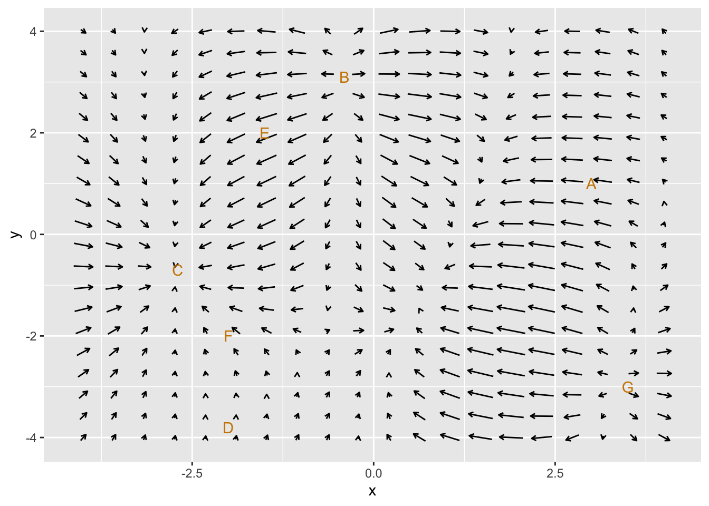</p>
</figure>
</div>
</div>
</div>
</div>
<figcaption class="quarto-float-caption-bottom quarto-float-caption quarto-float-fig quarto-uncaptioned" id="fig-gradient-field-tan-caption-0ceaefa1-69ba-4598-a22c-09a6ac19f8ca">
Figure&nbsp;4
</figcaption>
</figure>
</div>
<ol type="1">
<li>A drop is placed at point F. Which point does it slide by (or stop at)?</li>
</ol>
<div class="cell" data-show_hints="true" data-inline="true">
<input type="radio" class="devoirs-mcq" value="C" id="gradient-field-tan-1-1" w="19" name="gradient-field-tan-1" hint="You're following the arrows, but the gradient points uphill." show_hints="TRUE"> C &nbsp;&nbsp;&nbsp;&nbsp;&nbsp; <input type="radio" class="devoirs-mcq" value="D" id="gradient-field-tan-1-2" w="20" name="gradient-field-tan-1" hint="Excellent! ... and it will keep on sliding, heading south." show_hints="TRUE"> D &nbsp;&nbsp;&nbsp;&nbsp;&nbsp; <input type="radio" class="devoirs-mcq" value="G" id="gradient-field-tan-1-3" w="23" name="gradient-field-tan-1" hint="To get to G, the drop would have to start in the bottom right of the terrain." show_hints="TRUE"> G &nbsp;&nbsp;&nbsp;&nbsp;&nbsp; <input type="radio" class="devoirs-mcq" value="None of these " id="gradient-field-tan-1-4" w="87" name="gradient-field-tan-1" hint="no" show_hints="TRUE"> None of these &nbsp;&nbsp;&nbsp;&nbsp;&nbsp; <input type="radio" class="devoirs-mcq" name="gradient-field-tan-1" id="gradient-field-tan-1.null" style="display: none;" w="skipped" checked="">
<div>
<p><small style="color: grey;" id="gradient-field-tan-1-hintarea">question id: gradient-field-tan-1</small></p>
</div>
</div>
<ol start="2" type="1">
<li>A drop is placed at point A. Where will it end up?</li>
</ol>
<div class="cell" data-show_hints="true" data-inline="true">
<input type="radio" class="devoirs-mcq" value="A" id="gradient-field-tan-2-1" w="23" name="gradient-field-tan-2" hint="Sometimes a drop will stay where you put it, but only if that place is flat. The function near A is not flat, so the gradient has a non-zero length." show_hints="TRUE"> A &nbsp;&nbsp;&nbsp;&nbsp;&nbsp; <input type="radio" class="devoirs-mcq" value="B" id="gradient-field-tan-2-2" w="87" name="gradient-field-tan-2" hint="To get from A to B, the drop would have to flow up the ridge that lies between them." show_hints="TRUE"> B &nbsp;&nbsp;&nbsp;&nbsp;&nbsp; <input type="radio" class="devoirs-mcq" value="C" id="gradient-field-tan-2-3" w="32" name="gradient-field-tan-2" hint="C is the top of the mountain. Water does not flow up!" show_hints="TRUE"> C &nbsp;&nbsp;&nbsp;&nbsp;&nbsp; <input type="radio" class="devoirs-mcq" value="G" id="gradient-field-tan-2-4" w="5" name="gradient-field-tan-2" hint="Yes G is the bottom of the catchment basement for much of the right side of the map." show_hints="TRUE"> G &nbsp;&nbsp;&nbsp;&nbsp;&nbsp; <input type="radio" class="devoirs-mcq" name="gradient-field-tan-2" id="gradient-field-tan-2.null" style="display: none;" w="skipped" checked="">
<div>
<p><small style="color: grey;" id="gradient-field-tan-2-hintarea">question id: gradient-field-tan-2</small></p>
</div>
</div>
<ol start="3" type="1">
<li>If many drops fell at random on the surface, a lake would form at one of these points. Which one?</li>
</ol>
<div class="cell" data-show_hints="true" data-inline="true">
<input type="radio" class="devoirs-mcq" value="A" id="gradient-field-tan-3-1" w="23" name="gradient-field-tan-3" hint="That's  no a place where the surface forms a bowl to hold the lake, Water at A will flow to the east." show_hints="TRUE"> A &nbsp;&nbsp;&nbsp;&nbsp;&nbsp; <input type="radio" class="devoirs-mcq" value="B" id="gradient-field-tan-3-2" w="5" name="gradient-field-tan-3" hint="Right" show_hints="TRUE"> B &nbsp;&nbsp;&nbsp;&nbsp;&nbsp; <input type="radio" class="devoirs-mcq" value="C" id="gradient-field-tan-3-3" w="7" name="gradient-field-tan-3" hint="Did you ever see a lake at the top of a mountain?" show_hints="TRUE"> C &nbsp;&nbsp;&nbsp;&nbsp;&nbsp; <input type="radio" class="devoirs-mcq" value="D" id="gradient-field-tan-3-4" w="7" name="gradient-field-tan-3" hint="Water at D is flowing south." show_hints="TRUE"> D &nbsp;&nbsp;&nbsp;&nbsp;&nbsp; <input type="radio" class="devoirs-mcq" value="E" id="gradient-field-tan-3-5" w="3" name="gradient-field-tan-3" hint="Water at E will flow to the north-east." show_hints="TRUE"> E &nbsp;&nbsp;&nbsp;&nbsp;&nbsp; <input type="radio" class="devoirs-mcq" name="gradient-field-tan-3" id="gradient-field-tan-3.null" style="display: none;" w="skipped" checked="">
<div>
<p><small style="color: grey;" id="gradient-field-tan-3-hintarea">question id: gradient-field-tan-3</small></p>
</div>
</div>
</div>
<div id="exr-boy-iron-dish" class="theorem exercise">
<p><span class="theorem-title"><strong>Exercise 7</strong></span> For the gradient field in <a href="#fig-boy-iron-dish" class="quarto-xref">Figure&nbsp;<span>5</span></a>, what is the sign of the partial derivatives at the labeled points? We will use “neg” to refer to negative partial derivatives, “pos” to refer to positive partial derivatives, and “zero” to refer to partials that are so small that you cannot visually distinguish them from zero.</p>
<div id="fig-boy-iron-dish" class="quarto-float quarto-figure quarto-figure-center anchored">
<figure class="quarto-float quarto-float-fig figure">
<div aria-describedby="fig-boy-iron-dish-caption-0ceaefa1-69ba-4598-a22c-09a6ac19f8ca">
<div class="cell">
<div class="cell-output-display">
<div>
<figure class="figure">
<p>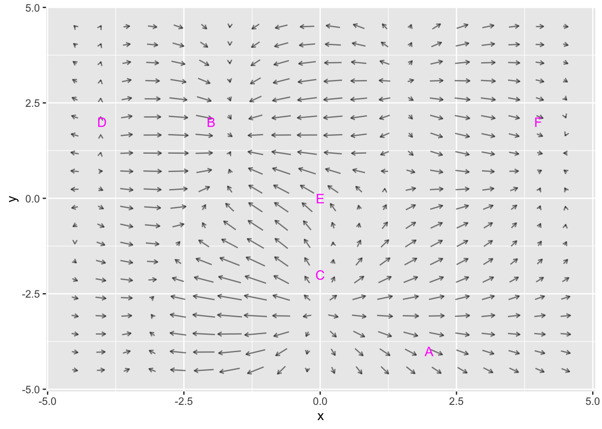</p>
</figure>
</div>
</div>
</div>
</div>
<figcaption class="quarto-float-caption-bottom quarto-float-caption quarto-float-fig" id="fig-boy-iron-dish-caption-0ceaefa1-69ba-4598-a22c-09a6ac19f8ca">
Figure&nbsp;5: The gradient field of a random function with two inputs. Several points in the input space are marked with letters.
</figcaption>
</figure>
</div>
<ol type="1">
<li>Which is <span class="math inline">\(\partial_y f\)</span> at point A?</li>
</ol>
<div class="cell" data-show_hints="true" data-inline="true">
<input type="radio" class="devoirs-mcq" value="neg" id="bid3-1-1" w="8" name="bid3-1" hint="right-o" show_hints="TRUE"> neg &nbsp;&nbsp;&nbsp;&nbsp;&nbsp; <input type="radio" class="devoirs-mcq" value="zero " id="bid3-1-2" w="19" name="bid3-1" hint="wrong" show_hints="TRUE"> zero &nbsp;&nbsp;&nbsp;&nbsp;&nbsp; <input type="radio" class="devoirs-mcq" value="pos " id="bid3-1-3" w="32" name="bid3-1" hint="Better luck next time." show_hints="TRUE"> pos &nbsp;&nbsp;&nbsp;&nbsp;&nbsp; <input type="radio" class="devoirs-mcq" name="bid3-1" id="bid3-1.null" style="display: none;" w="skipped" checked="">
<div>
<p><small style="color: grey;" id="bid3-1-hintarea">question id: bid3-1</small></p>
</div>
</div>
<ol start="2" type="1">
<li>Which is <span class="math inline">\(\partial_x f\)</span> at point A?</li>
</ol>
<div class="cell" data-show_hints="true" data-inline="true">
<input type="radio" class="devoirs-mcq" value="neg " id="bid3-2-1" w="7" name="bid3-2" hint="Try again!" show_hints="TRUE"> neg &nbsp;&nbsp;&nbsp;&nbsp;&nbsp; <input type="radio" class="devoirs-mcq" value="zero " id="bid3-2-2" w="87" name="bid3-2" hint="Better luck next time." show_hints="TRUE"> zero &nbsp;&nbsp;&nbsp;&nbsp;&nbsp; <input type="radio" class="devoirs-mcq" value="pos" id="bid3-2-3" w="29" name="bid3-2" hint="Nice." show_hints="TRUE"> pos &nbsp;&nbsp;&nbsp;&nbsp;&nbsp; <input type="radio" class="devoirs-mcq" name="bid3-2" id="bid3-2.null" style="display: none;" w="skipped" checked="">
<div>
<p><small style="color: grey;" id="bid3-2-hintarea">question id: bid3-2</small></p>
</div>
</div>
<ol start="3" type="1">
<li>Which is <span class="math inline">\(\partial_x f\)</span> at point B?</li>
</ol>
<div class="cell" data-show_hints="true" data-inline="true">
<input type="radio" class="devoirs-mcq" value="neg " id="bid3-3-1" w="87" name="bid3-3" hint="Better luck next time." show_hints="TRUE"> neg &nbsp;&nbsp;&nbsp;&nbsp;&nbsp; <input type="radio" class="devoirs-mcq" value="zero " id="bid3-3-2" w="32" name="bid3-3" hint="Not quite right" show_hints="TRUE"> zero &nbsp;&nbsp;&nbsp;&nbsp;&nbsp; <input type="radio" class="devoirs-mcq" value="pos" id="bid3-3-3" w="8" name="bid3-3" hint="Yes" show_hints="TRUE"> pos &nbsp;&nbsp;&nbsp;&nbsp;&nbsp; <input type="radio" class="devoirs-mcq" name="bid3-3" id="bid3-3.null" style="display: none;" w="skipped" checked="">
<div>
<p><small style="color: grey;" id="bid3-3-hintarea">question id: bid3-3</small></p>
</div>
</div>
<ol start="4" type="1">
<li>Which is <span class="math inline">\(\partial_x f\)</span> at point C?</li>
</ol>
<div class="cell" data-show_hints="true" data-inline="true">
<input type="radio" class="devoirs-mcq" value="neg " id="bid3-4-1" w="23" name="bid3-4" hint="no" show_hints="TRUE"> neg &nbsp;&nbsp;&nbsp;&nbsp;&nbsp; <input type="radio" class="devoirs-mcq" value="zero" id="bid3-4-2" w="5" name="bid3-4" hint="Right" show_hints="TRUE"> zero &nbsp;&nbsp;&nbsp;&nbsp;&nbsp; <input type="radio" class="devoirs-mcq" value="pos " id="bid3-4-3" w="7" name="bid3-4" hint="Not quite right" show_hints="TRUE"> pos &nbsp;&nbsp;&nbsp;&nbsp;&nbsp; <input type="radio" class="devoirs-mcq" name="bid3-4" id="bid3-4.null" style="display: none;" w="skipped" checked="">
<div>
<p><small style="color: grey;" id="bid3-4-hintarea">question id: bid3-4</small></p>
</div>
</div>
<ol start="5" type="1">
<li>Which is <span class="math inline">\(\partial_y f\)</span> at point E?</li>
</ol>
<div class="cell" data-show_hints="true" data-inline="true">
<input type="radio" class="devoirs-mcq" value="neg " id="bid3-5-1" w="87" name="bid3-5" hint="no" show_hints="TRUE"> neg &nbsp;&nbsp;&nbsp;&nbsp;&nbsp; <input type="radio" class="devoirs-mcq" value="zero " id="bid3-5-2" w="7" name="bid3-5" hint="You're mistaken" show_hints="TRUE"> zero &nbsp;&nbsp;&nbsp;&nbsp;&nbsp; <input type="radio" class="devoirs-mcq" value="pos" id="bid3-5-3" w="14" name="bid3-5" hint="Good job!" show_hints="TRUE"> pos &nbsp;&nbsp;&nbsp;&nbsp;&nbsp; <input type="radio" class="devoirs-mcq" name="bid3-5" id="bid3-5.null" style="display: none;" w="skipped" checked="">
<div>
<p><small style="color: grey;" id="bid3-5-hintarea">question id: bid3-5</small></p>
</div>
</div>
<ol start="6" type="1">
<li>Which is <span class="math inline">\(\partial_x f\)</span> at point E?</li>
</ol>
<div class="cell" data-show_hints="true" data-inline="true">
<input type="radio" class="devoirs-mcq" value="neg" id="bid3-6-1" w="29" name="bid3-6" hint="Nice." show_hints="TRUE"> neg &nbsp;&nbsp;&nbsp;&nbsp;&nbsp; <input type="radio" class="devoirs-mcq" value="zero " id="bid3-6-2" w="32" name="bid3-6" hint="You're mistaken" show_hints="TRUE"> zero &nbsp;&nbsp;&nbsp;&nbsp;&nbsp; <input type="radio" class="devoirs-mcq" value="pos " id="bid3-6-3" w="3" name="bid3-6" hint="Try again!" show_hints="TRUE"> pos &nbsp;&nbsp;&nbsp;&nbsp;&nbsp; <input type="radio" class="devoirs-mcq" name="bid3-6" id="bid3-6.null" style="display: none;" w="skipped" checked="">
<div>
<p><small style="color: grey;" id="bid3-6-hintarea">question id: bid3-6</small></p>
</div>
</div>
<ol start="7" type="1">
<li>At which letter are both the partial with respect to <span class="math inline">\(x\)</span> and the partial with respect to <span class="math inline">\(y\)</span> negative.?</li>
</ol>
<div class="cell" data-show_hints="true" data-inline="true">
<input type="radio" class="devoirs-mcq" value="A " id="bid3-7-1" w="19" name="bid3-7" hint="no" show_hints="TRUE"> A &nbsp;&nbsp;&nbsp;&nbsp;&nbsp; <input type="radio" class="devoirs-mcq" value="B " id="bid3-7-2" w="32" name="bid3-7" hint="wrong" show_hints="TRUE"> B &nbsp;&nbsp;&nbsp;&nbsp;&nbsp; <input type="radio" class="devoirs-mcq" value="C " id="bid3-7-3" w="23" name="bid3-7" hint="Try again!" show_hints="TRUE"> C &nbsp;&nbsp;&nbsp;&nbsp;&nbsp; <input type="radio" class="devoirs-mcq" value="D " id="bid3-7-4" w="32" name="bid3-7" hint="wrong" show_hints="TRUE"> D &nbsp;&nbsp;&nbsp;&nbsp;&nbsp; <input type="radio" class="devoirs-mcq" value="E " id="bid3-7-5" w="3" name="bid3-7" hint="Sorry!" show_hints="TRUE"> E &nbsp;&nbsp;&nbsp;&nbsp;&nbsp; <input type="radio" class="devoirs-mcq" value="F " id="bid3-7-6" w="32" name="bid3-7" hint="Better luck next time." show_hints="TRUE"> F &nbsp;&nbsp;&nbsp;&nbsp;&nbsp; <input type="radio" class="devoirs-mcq" value="none of them" id="bid3-7-7" w="35" name="bid3-7" hint="Nice." show_hints="TRUE"> none of them &nbsp;&nbsp;&nbsp;&nbsp;&nbsp; <input type="radio" class="devoirs-mcq" name="bid3-7" id="bid3-7.null" style="display: none;" w="skipped" checked="">
<div>
<p><small style="color: grey;" id="bid3-7-hintarea">question id: bid3-7</small></p>
</div>
</div>
</div>
<div id="exr-child-hide-lamp" class="theorem exercise">
<p><span class="theorem-title"><strong>Exercise 8</strong></span> Each of the figures below shows a contour plot and a gradient field. For some of the figures, the contour plot and the gradient field show the same function, for others they do not. Your task is to identify whether the contour plot and the gradient field are of the same or different functions.</p>
<div class="cell">
<div class="cell-output-display">
<div>
<figure class="figure">
<p>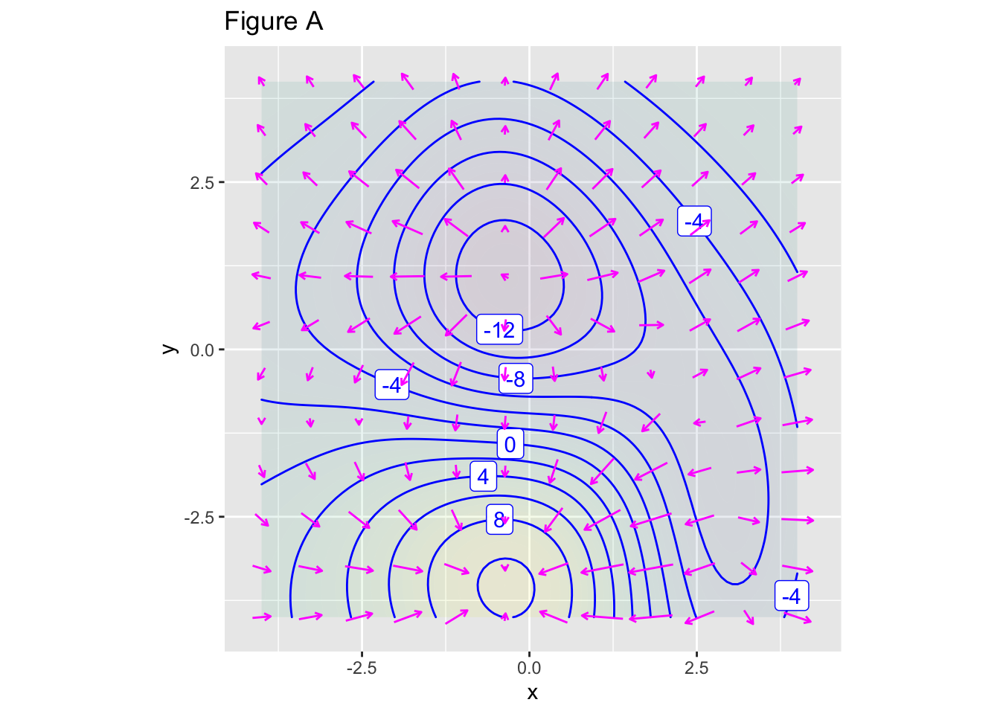</p>
</figure>
</div>
</div>
</div>
<ol type="1">
<li>For Figure A, do the contour plot and the gradient field show the same function?</li>
</ol>
<div class="cell" data-show_hints="false" data-inline="true">
<input type="radio" class="devoirs-mcq" value="Yes" id="child-hide-lamp-1-1" w="5" name="child-hide-lamp-1" hint="Yes" show_hints="FALSE"> Yes &nbsp;&nbsp;&nbsp;&nbsp;&nbsp; <input type="radio" class="devoirs-mcq" value="No " id="child-hide-lamp-1-2" w="87" name="child-hide-lamp-1" hint="Try again!" show_hints="FALSE"> No &nbsp;&nbsp;&nbsp;&nbsp;&nbsp; <input type="radio" class="devoirs-mcq" name="child-hide-lamp-1" id="child-hide-lamp-1.null" style="display: none;" w="skipped" checked="">
<div>
<p><small style="color: grey;" id="child-hide-lamp-1-hintarea">question id: child-hide-lamp-1</small></p>
</div>
</div>
<div class="cell">
<div class="cell-output-display">
<div>
<figure class="figure">
<p>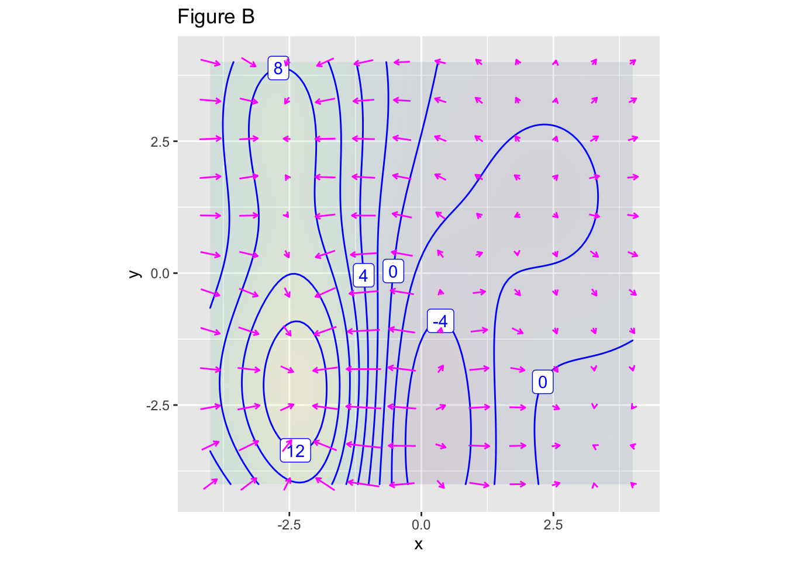</p>
</figure>
</div>
</div>
</div>
<ol start="2" type="1">
<li>For Figure B, do the contour plot and the gradient field show the same function?</li>
</ol>
<div class="cell" data-show_hints="false" data-inline="true">
<input type="radio" class="devoirs-mcq" value="Yes" id="child-hide-lamp-2-1" w="29" name="child-hide-lamp-2" hint="Correct" show_hints="FALSE"> Yes &nbsp;&nbsp;&nbsp;&nbsp;&nbsp; <input type="radio" class="devoirs-mcq" value="No " id="child-hide-lamp-2-2" w="7" name="child-hide-lamp-2" hint="wide of the mark" show_hints="FALSE"> No &nbsp;&nbsp;&nbsp;&nbsp;&nbsp; <input type="radio" class="devoirs-mcq" name="child-hide-lamp-2" id="child-hide-lamp-2.null" style="display: none;" w="skipped" checked="">
<div>
<p><small style="color: grey;" id="child-hide-lamp-2-hintarea">question id: child-hide-lamp-2</small></p>
</div>
</div>
<div class="cell">
<div class="cell-output-display">
<div>
<figure class="figure">
<p>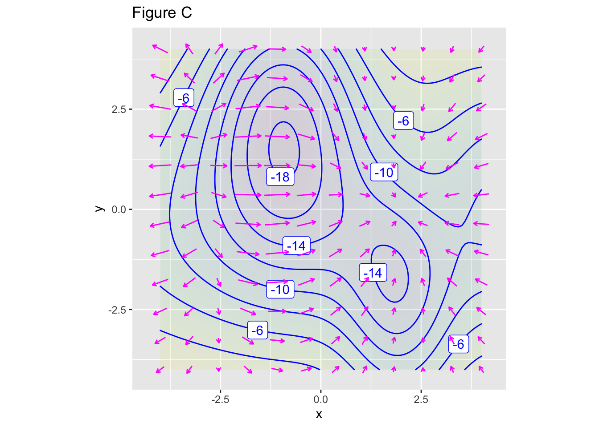</p>
</figure>
</div>
</div>
</div>
<ol start="3" type="1">
<li>For Figure C, do the contour plot and the gradient field show the same function?</li>
</ol>
<div class="cell" data-show_hints="false" data-inline="true">
<input type="radio" class="devoirs-mcq" value="Yes " id="child-hide-lamp-3-1" w="32" name="child-hide-lamp-3" hint="wide of the mark" show_hints="FALSE"> Yes &nbsp;&nbsp;&nbsp;&nbsp;&nbsp; <input type="radio" class="devoirs-mcq" value="No" id="child-hide-lamp-3-2" w="14" name="child-hide-lamp-3" hint="Correct" show_hints="FALSE"> No &nbsp;&nbsp;&nbsp;&nbsp;&nbsp; <input type="radio" class="devoirs-mcq" name="child-hide-lamp-3" id="child-hide-lamp-3.null" style="display: none;" w="skipped" checked="">
<div>
<p><small style="color: grey;" id="child-hide-lamp-3-hintarea">question id: child-hide-lamp-3</small></p>
</div>
</div>
<div class="cell">
<div class="cell-output-display">
<div>
<figure class="figure">
<p>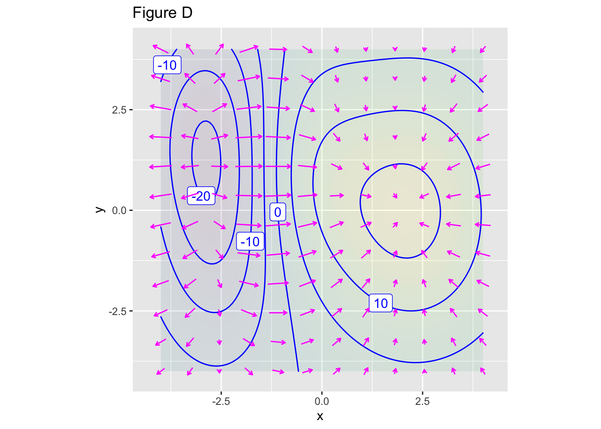</p>
</figure>
</div>
</div>
</div>
<ol start="4" type="1">
<li>For Figure D, do the contour plot and the gradient field show the same function?</li>
</ol>
<div class="cell" data-show_hints="false" data-inline="true">
<input type="radio" class="devoirs-mcq" value="Yes" id="child-hide-lamp-4-1" w="29" name="child-hide-lamp-4" hint="Right" show_hints="FALSE"> Yes &nbsp;&nbsp;&nbsp;&nbsp;&nbsp; <input type="radio" class="devoirs-mcq" value="No " id="child-hide-lamp-4-2" w="7" name="child-hide-lamp-4" hint="Not quite right" show_hints="FALSE"> No &nbsp;&nbsp;&nbsp;&nbsp;&nbsp; <input type="radio" class="devoirs-mcq" name="child-hide-lamp-4" id="child-hide-lamp-4.null" style="display: none;" w="skipped" checked="">
<div>
<p><small style="color: grey;" id="child-hide-lamp-4-hintarea">question id: child-hide-lamp-4</small></p>
</div>
</div>
<div class="cell">
<div class="cell-output-display">
<div>
<figure class="figure">
<p>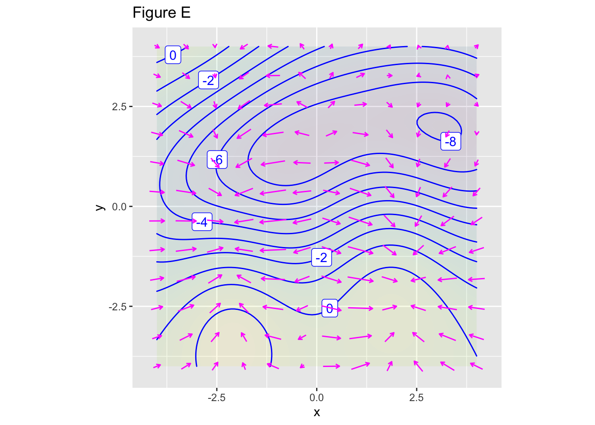</p>
</figure>
</div>
</div>
</div>
<p>For Figure E, do the contour plot and the gradient field show the same function?</p>
<div class="cell" data-show_hints="false" data-inline="true">
<input type="radio" class="devoirs-mcq" value="Yes " id="child-hide-lamp-5-1" w="87" name="child-hide-lamp-5" hint="Better luck next time." show_hints="FALSE"> Yes &nbsp;&nbsp;&nbsp;&nbsp;&nbsp; <input type="radio" class="devoirs-mcq" value="No" id="child-hide-lamp-5-2" w="16" name="child-hide-lamp-5" hint="Right" show_hints="FALSE"> No &nbsp;&nbsp;&nbsp;&nbsp;&nbsp; <input type="radio" class="devoirs-mcq" name="child-hide-lamp-5" id="child-hide-lamp-5.null" style="display: none;" w="skipped" checked="">
<div>
<p><small style="color: grey;" id="child-hide-lamp-5-hintarea">question id: child-hide-lamp-5</small></p>
</div>
</div>
<div class="cell">
<div class="cell-output-display">
<div>
<figure class="figure">
<p>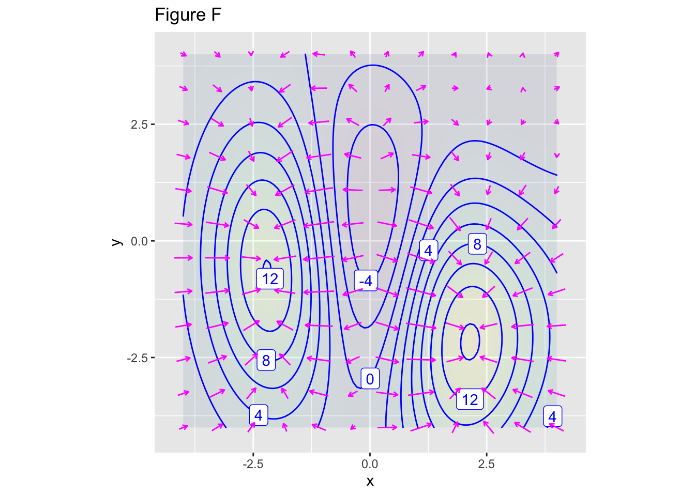</p>
</figure>
</div>
</div>
</div>
<p>For Figure F, do the contour plot and the gradient field show the same function?</p>
<div class="cell" data-show_hints="false" data-inline="true">
<input type="radio" class="devoirs-mcq" value="Yes" id="child-hide-lamp-6-1" w="8" name="child-hide-lamp-6" hint="Nice." show_hints="FALSE"> Yes &nbsp;&nbsp;&nbsp;&nbsp;&nbsp; <input type="radio" class="devoirs-mcq" value="No " id="child-hide-lamp-6-2" w="7" name="child-hide-lamp-6" hint="Better luck next time." show_hints="FALSE"> No &nbsp;&nbsp;&nbsp;&nbsp;&nbsp; <input type="radio" class="devoirs-mcq" name="child-hide-lamp-6" id="child-hide-lamp-6.null" style="display: none;" w="skipped" checked="">
<div>
<p><small style="color: grey;" id="child-hide-lamp-6-hintarea">question id: child-hide-lamp-6</small></p>
</div>
</div>
</div>
<div id="exr-gradient-field-blue" class="theorem exercise">
<p><span class="theorem-title"><strong>Exercise 9</strong></span> <a href="#fig-gradient-field-blue-1" class="quarto-xref">Figure&nbsp;<span>6</span></a> shows a contour plot of a function <span class="math inline">\(g(x,y)\)</span>. You will be presented with several gradient fields. Your task is to determine whether the gradient field corresponds to the contour plot and, if not, say why not.</p>
<div id="fig-gradient-field-blue-1" class="quarto-float quarto-figure quarto-figure-center anchored">
<figure class="quarto-float quarto-float-fig figure">
<div aria-describedby="fig-gradient-field-blue-1-caption-0ceaefa1-69ba-4598-a22c-09a6ac19f8ca">
<div class="cell">
<div class="cell-output-display">
<div>
<figure class="figure">
<p>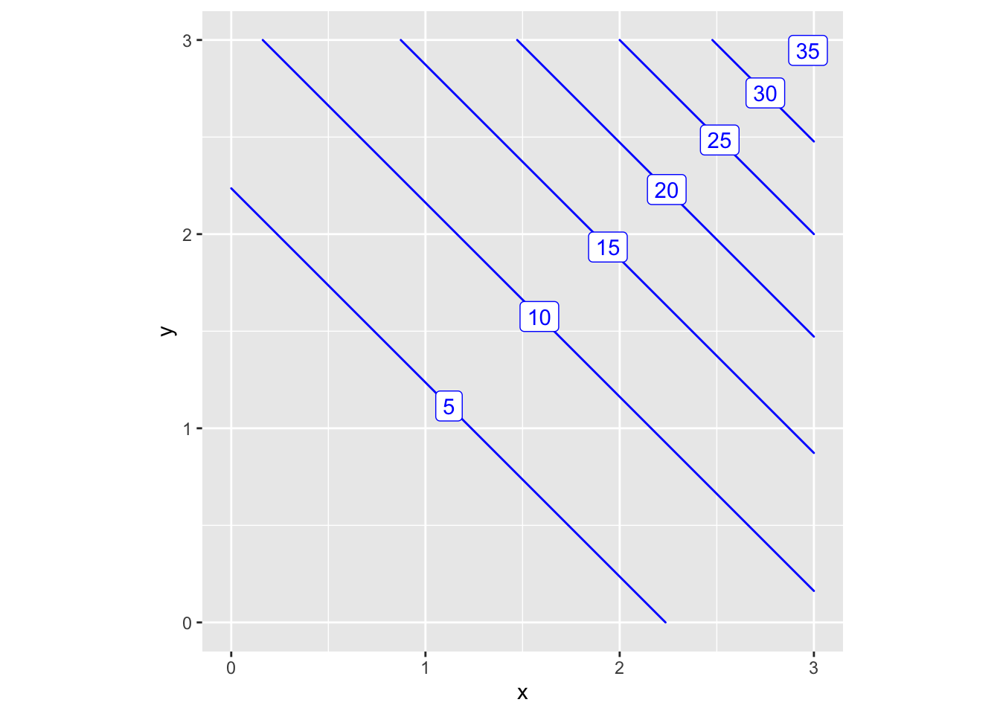</p>
</figure>
</div>
</div>
</div>
</div>
<figcaption class="quarto-float-caption-bottom quarto-float-caption quarto-float-fig quarto-uncaptioned" id="fig-gradient-field-blue-1-caption-0ceaefa1-69ba-4598-a22c-09a6ac19f8ca">
Figure&nbsp;6
</figcaption>
</figure>
</div>
<div class="cell" data-layout-align="center">
<div class="cell-output-display">
<div class="quarto-figure quarto-figure-center">
<figure class="figure">
<p>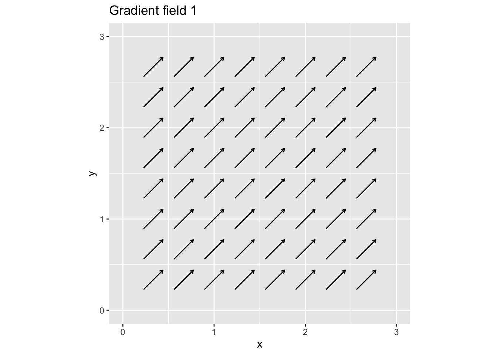</p>
</figure>
</div>
</div>
</div>
<ol type="1">
<li>What’s wrong with gradient field 1?</li>
</ol>
<div class="cell" data-show_hints="true">
<p>
</p><p><input type="radio" class="devoirs-mcq" value="arrows poi ...  of up it " id="gradient-field-blue-1-1" w="87" name="gradient-field-blue-1" hint="wrong" show_hints="TRUE"> arrows point down the hill instead of up it</p>
<p></p>
<p>
</p><p><input type="radio" class="devoirs-mcq" value="magnitude  ... n is right" id="gradient-field-blue-1-2" w="29" name="gradient-field-blue-1" hint="right-o" show_hints="TRUE"> magnitude of arrows are wrong, but direction is right</p>
<p></p>
<p>
</p><p><input type="radio" class="devoirs-mcq" value="arrows don ... direction " id="gradient-field-blue-1-3" w="3" name="gradient-field-blue-1" hint="Better luck next time." show_hints="TRUE"> arrows don’t point in the right direction</p>
<p></p>
<p>
</p><p><input type="radio" class="devoirs-mcq" value="nothing is wrong " id="gradient-field-blue-1-4" w="7" name="gradient-field-blue-1" hint="Try again!" show_hints="TRUE"> nothing is wrong</p>
<p></p>
<input type="radio" class="devoirs-mcq" name="gradient-field-blue-1" id="gradient-field-blue-1.null" style="display: none;" w="skipped" checked="">
<div>
<p><small style="color: grey;" id="gradient-field-blue-1-hintarea">question id: gradient-field-blue-1</small></p>
</div>
</div>
<div class="cell" data-layout-align="center">
<div class="cell-output-display">
<div class="quarto-figure quarto-figure-center">
<figure class="figure">
<p></p>
</figure>
</div>
</div>
</div>
<ol start="2" type="1">
<li>What’s wrong with gradient field 2?</li>
</ol>
<div class="cell" data-show_hints="true">
<p>
</p><p><input type="radio" class="devoirs-mcq" value="arrows poi ... d of up it" id="gradient-field-blue-2-1" w="41" name="gradient-field-blue-2" hint="Nice." show_hints="TRUE"> arrows point down the hill instead of up it</p>
<p></p>
<p>
</p><p><input type="radio" class="devoirs-mcq" value="magnitude  ...  is right " id="gradient-field-blue-2-2" w="32" name="gradient-field-blue-2" hint="Sorry!" show_hints="TRUE"> magnitude of arrows are wrong, but direction is right</p>
<p></p>
<p>
</p><p><input type="radio" class="devoirs-mcq" value="arrows don ... direction " id="gradient-field-blue-2-3" w="23" name="gradient-field-blue-2" hint="You're mistaken" show_hints="TRUE"> arrows don’t point in the right direction</p>
<p></p>
<p>
</p><p><input type="radio" class="devoirs-mcq" value="nothing is wrong " id="gradient-field-blue-2-4" w="7" name="gradient-field-blue-2" hint="You're mistaken" show_hints="TRUE"> nothing is wrong</p>
<p></p>
<input type="radio" class="devoirs-mcq" name="gradient-field-blue-2" id="gradient-field-blue-2.null" style="display: none;" w="skipped" checked="">
<div>
<p><small style="color: grey;" id="gradient-field-blue-2-hintarea">question id: gradient-field-blue-2</small></p>
</div>
</div>
<div class="cell" data-layout-align="center">
<div class="cell-output-display">
<div class="quarto-figure quarto-figure-center">
<figure class="figure">
<p>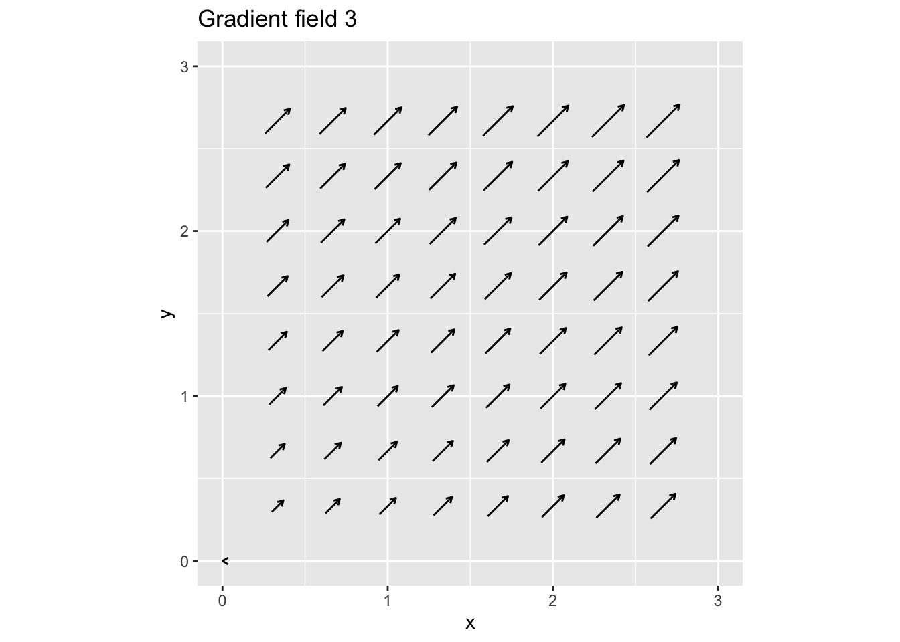</p>
</figure>
</div>
</div>
</div>
<ol start="3" type="1">
<li>What’s wrong with gradient field 3?</li>
</ol>
<div class="cell" data-show_hints="true">
<p>
</p><p><input type="radio" class="devoirs-mcq" value="arrows poi ...  of up it " id="gradient-field-blue-3-1" w="23" name="gradient-field-blue-3" hint="no" show_hints="TRUE"> arrows point down the hill instead of up it</p>
<p></p>
<p>
</p><p><input type="radio" class="devoirs-mcq" value="magnitude  ...  is right " id="gradient-field-blue-3-2" w="7" name="gradient-field-blue-3" hint="You're mistaken" show_hints="TRUE"> magnitude of arrows are wrong, but direction is right</p>
<p></p>
<p>
</p><p><input type="radio" class="devoirs-mcq" value="arrows don ... direction " id="gradient-field-blue-3-3" w="23" name="gradient-field-blue-3" hint="Try again!" show_hints="TRUE"> arrows don’t point in the right direction</p>
<p></p>
<p>
</p><p><input type="radio" class="devoirs-mcq" value="nothing is wrong" id="gradient-field-blue-3-4" w="20" name="gradient-field-blue-3" hint="right-o" show_hints="TRUE"> nothing is wrong</p>
<p></p>
<input type="radio" class="devoirs-mcq" name="gradient-field-blue-3" id="gradient-field-blue-3.null" style="display: none;" w="skipped" checked="">
<div>
<p><small style="color: grey;" id="gradient-field-blue-3-hintarea">question id: gradient-field-blue-3</small></p>
</div>
</div>
<div class="cell" data-layout-align="center">
<div class="cell-output-display">
<div class="quarto-figure quarto-figure-center">
<figure class="figure">
<p></p>
</figure>
</div>
</div>
</div>
<ol start="4" type="1">
<li>What’s wrong with gradient field 4?</li>
</ol>
<div class="cell" data-show_hints="true">
<p>
</p><p><input type="radio" class="devoirs-mcq" value="arrows poi ...  of up it " id="gradient-field-blue-4-1" w="87" name="gradient-field-blue-4" hint="Sorry!" show_hints="TRUE"> arrows point down the hill instead of up it</p>
<p></p>
<p>
</p><p><input type="radio" class="devoirs-mcq" value="magnitude  ...  is right " id="gradient-field-blue-4-2" w="23" name="gradient-field-blue-4" hint="You're mistaken" show_hints="TRUE"> magnitude of arrows are wrong, but direction is right</p>
<p></p>
<p>
</p><p><input type="radio" class="devoirs-mcq" value="arrows don ...  direction" id="gradient-field-blue-4-3" w="14" name="gradient-field-blue-4" hint="Correct" show_hints="TRUE"> arrows don’t point in the right direction</p>
<p></p>
<p>
</p><p><input type="radio" class="devoirs-mcq" value="nothing is wrong " id="gradient-field-blue-4-4" w="19" name="gradient-field-blue-4" hint="Try again!" show_hints="TRUE"> nothing is wrong</p>
<p></p>
<input type="radio" class="devoirs-mcq" name="gradient-field-blue-4" id="gradient-field-blue-4.null" style="display: none;" w="skipped" checked="">
<div>
<p><small style="color: grey;" id="gradient-field-blue-4-hintarea">question id: gradient-field-blue-4</small></p>
</div>
</div>
</div>
<div id="exr-crow-begin-bottle" class="theorem exercise">
<p><span class="theorem-title"><strong>Exercise 10</strong></span> When discussing functions with a single input, it was easy to distinguish between the function itself and the output of the function for a specific input. We use the following conventions, some of which may be obvious and others not so much.</p>
<ol type="a">
<li><span class="math inline">\(f()\)</span> — Function itself. Since there is only one input it does not matter what the name is.</li>
<li><span class="math inline">\(f(x)\)</span> — Function itself. <span class="math inline">\(x\)</span> is the name of an input, not the specific value an input.</li>
<li><span class="math inline">\(f(2)\)</span> — The value of the output when <span class="math inline">\(f()\)</span> is applied to the input value 2.</li>
<li><span class="math inline">\(f(x)\left.{\Large\strut}\right|_{x=2}\)</span>. This distinct vertical bar notation means, take the function <span class="math inline">\(f(x)\)</span> and evaluate it at input value 2.</li>
<li><span class="math inline">\(f(x=2)\)</span> — Same thing as (d).</li>
</ol>
<p>These conventions don’t tell us how to read expressions involving <span class="math inline">\(\partial_x\)</span> or <span class="math inline">\(\partial_t\)</span>, etc.</p>
<p>To avoid ambiguity we need to stipulate the meaning of different notation forms. We will frame this as a question of “operator precedence” of the same sort used in interpreting an expression like <span class="math inline">\(3 x^2\)</span> as meaning <span class="math inline">\(3 \left(x^2\right)\)</span>.</p>
<ol type="1">
<li>When the prime notation is used, as in <span class="math inline">\(f'(2)\)</span>, the prime has precedence over everything else except parentheses. Thus, the product rule is <span class="math display">\[(fg)' = f'g + fg'\]</span> where the right-side of the equation means “the function <span class="math inline">\(f'\)</span> multiplied by the function <span class="math inline">\(g\)</span> plus the function <span class="math inline">\(g'\)</span> multiplied by the function <span class="math inline">\(f\)</span>.”</li>
<li>When using the <span class="math inline">\(\partial_x\)</span> notation, <span class="math inline">\(\partial_x\)</span> has precedence over evaluation whenever there is a matching <span class="math inline">\(x\)</span> in the expression being evaluated. For instance:
<ol type="i">
<li><span class="math inline">\(\partial_x f(x=2)\)</span> means, “apply the function <span class="math inline">\(\partial_x f(x)\)</span> to the specific input 2.”</li>
<li><span class="math inline">\(\partial_x f(x) \left.{\Large\strut}\right|_{x=2}\)</span> means the same thing as (i).</li>
<li><span class="math inline">\(\partial_x f(2)\)</span> means something different: “Evaluate <span class="math inline">\(f()\)</span> on the specific input 2. The result will be a specific output value. The derivative of a specific output value will always be zero.”</li>
</ol></li>
</ol>
<p>That leaves the question of <span class="math inline">\(\partial_x f()\)</span>. There is no mention of <span class="math inline">\(x\)</span> being the input to <span class="math inline">\(f()\)</span>. So we will deem <span class="math inline">\(\partial_x f()\)</span> to be <strong><em>sloppy and ambiguous</em></strong>. We will try to avoid this usage. Draw any such cases to the authors’ attention so they can be corrected.</p>
<p>Suppose we define two functions: <span class="math inline">\(f(x) \equiv x^2/2\)</span> and <span class="math inline">\(g(x) \equiv x/2\)</span>. With these definitions, evaluate the expressions given below.</p>
<ol type="1">
<li><span class="math inline">\(\partial_t g(t=2)\)</span></li>
</ol>
<div class="cell" data-inline="true" data-show_hints="true">
<input type="radio" class="devoirs-mcq" value="0 " id="crow-begin-bottle-1-1" w="19" name="crow-begin-bottle-1" hint="Sorry!" show_hints="TRUE"> 0 &nbsp;&nbsp;&nbsp;&nbsp;&nbsp; <input type="radio" class="devoirs-mcq" value="1/2" id="crow-begin-bottle-1-2" w="14" name="crow-begin-bottle-1" hint="Good job! Differentiate first, which gives the constant 1/2." show_hints="TRUE"> 1/2 &nbsp;&nbsp;&nbsp;&nbsp;&nbsp; <input type="radio" class="devoirs-mcq" value="1 " id="crow-begin-bottle-1-3" w="23" name="crow-begin-bottle-1" hint="incorrect choice" show_hints="TRUE"> 1 &nbsp;&nbsp;&nbsp;&nbsp;&nbsp; <input type="radio" class="devoirs-mcq" value="2 " id="crow-begin-bottle-1-4" w="23" name="crow-begin-bottle-1" hint="Try again!" show_hints="TRUE"> 2 &nbsp;&nbsp;&nbsp;&nbsp;&nbsp; <input type="radio" class="devoirs-mcq" value="Sloppy " id="crow-begin-bottle-1-5" w="7" name="crow-begin-bottle-1" hint="no" show_hints="TRUE"> Sloppy &nbsp;&nbsp;&nbsp;&nbsp;&nbsp; <input type="radio" class="devoirs-mcq" name="crow-begin-bottle-1" id="crow-begin-bottle-1.null" style="display: none;" w="skipped" checked="">
<div>
<p><small style="color: grey;" id="crow-begin-bottle-1-hintarea">question id: crow-begin-bottle-1</small></p>
</div>
</div>
<ol start="2" type="1">
<li><span class="math inline">\(\partial_x g(t=2)\)</span></li>
</ol>
<div class="cell" data-inline="true" data-show_hints="false">
<input type="radio" class="devoirs-mcq" value="0" id="crow-begin-bottle-2-1" w="8" name="crow-begin-bottle-2" hint="Good job! The name in the subscript of $\partial_x$ is not matched by anything in the rest of the expression. So evaluate $g()$ at the specific input $2$, then differentiate with respect to $x$ the result. Since the result is $g(t=2)=1$, the derivative is zero." show_hints="FALSE"> 0 &nbsp;&nbsp;&nbsp;&nbsp;&nbsp; <input type="radio" class="devoirs-mcq" value="1/2 " id="crow-begin-bottle-2-2" w="23" name="crow-begin-bottle-2" hint="Not quite right" show_hints="FALSE"> 1/2 &nbsp;&nbsp;&nbsp;&nbsp;&nbsp; <input type="radio" class="devoirs-mcq" value="1 " id="crow-begin-bottle-2-3" w="3" name="crow-begin-bottle-2" hint="Not quite right" show_hints="FALSE"> 1 &nbsp;&nbsp;&nbsp;&nbsp;&nbsp; <input type="radio" class="devoirs-mcq" value="2 " id="crow-begin-bottle-2-4" w="32" name="crow-begin-bottle-2" hint="wide of the mark" show_hints="FALSE"> 2 &nbsp;&nbsp;&nbsp;&nbsp;&nbsp; <input type="radio" class="devoirs-mcq" value="Sloppy " id="crow-begin-bottle-2-5" w="7" name="crow-begin-bottle-2" hint="wide of the mark" show_hints="FALSE"> Sloppy &nbsp;&nbsp;&nbsp;&nbsp;&nbsp; <input type="radio" class="devoirs-mcq" name="crow-begin-bottle-2" id="crow-begin-bottle-2.null" style="display: none;" w="skipped" checked="">
<div>
<p><small style="color: grey;" id="crow-begin-bottle-2-hintarea">question id: crow-begin-bottle-2</small></p>
</div>
</div>
<ol start="3" type="1">
<li><span class="math inline">\(\partial_t f(x=2) g(t=2)\)</span></li>
</ol>
<div class="cell" data-inline="true" data-show_hints="false">
<input type="radio" class="devoirs-mcq" value="0 " id="crow-begin-bottle-3-1" w="87" name="crow-begin-bottle-3" hint="Try again!" show_hints="FALSE"> 0 &nbsp;&nbsp;&nbsp;&nbsp;&nbsp; <input type="radio" class="devoirs-mcq" value="1/2 " id="crow-begin-bottle-3-2" w="7" name="crow-begin-bottle-3" hint="You're mistaken" show_hints="FALSE"> 1/2 &nbsp;&nbsp;&nbsp;&nbsp;&nbsp; <input type="radio" class="devoirs-mcq" value="1" id="crow-begin-bottle-3-3" w="5" name="crow-begin-bottle-3" hint="Correct The subscript in $\partial_t$ has a match in the expression. So differentiate the expression, giving $f(x=2) g'(2)$ = 2 \times 1/2 = 1$." show_hints="FALSE"> 1 &nbsp;&nbsp;&nbsp;&nbsp;&nbsp; <input type="radio" class="devoirs-mcq" value="2 " id="crow-begin-bottle-3-4" w="3" name="crow-begin-bottle-3" hint="wrong" show_hints="FALSE"> 2 &nbsp;&nbsp;&nbsp;&nbsp;&nbsp; <input type="radio" class="devoirs-mcq" value="Sloppy " id="crow-begin-bottle-3-5" w="23" name="crow-begin-bottle-3" hint="Sorry!" show_hints="FALSE"> Sloppy &nbsp;&nbsp;&nbsp;&nbsp;&nbsp; <input type="radio" class="devoirs-mcq" name="crow-begin-bottle-3" id="crow-begin-bottle-3.null" style="display: none;" w="skipped" checked="">
<div>
<p><small style="color: grey;" id="crow-begin-bottle-3-hintarea">question id: crow-begin-bottle-3</small></p>
</div>
</div>
<ol start="4" type="1">
<li><span class="math inline">\(\partial_x f(2)\, g(t=2)\)</span></li>
</ol>
<div class="cell" data-inline="true" data-show_hints="true">
<input type="radio" class="devoirs-mcq" value="0" id="crow-begin-bottle-4-1" w="20" name="crow-begin-bottle-4" hint="Correct There nothing to match the subscript of $\partial_x$ in the rest of the expression. So that part of the expression must be constant with respect to $x$." show_hints="TRUE"> 0 &nbsp;&nbsp;&nbsp;&nbsp;&nbsp; <input type="radio" class="devoirs-mcq" value="1/2 " id="crow-begin-bottle-4-2" w="7" name="crow-begin-bottle-4" hint="Not quite right" show_hints="TRUE"> 1/2 &nbsp;&nbsp;&nbsp;&nbsp;&nbsp; <input type="radio" class="devoirs-mcq" value="1 " id="crow-begin-bottle-4-3" w="3" name="crow-begin-bottle-4" hint="Try again!" show_hints="TRUE"> 1 &nbsp;&nbsp;&nbsp;&nbsp;&nbsp; <input type="radio" class="devoirs-mcq" value="2 " id="crow-begin-bottle-4-4" w="32" name="crow-begin-bottle-4" hint="Sorry!" show_hints="TRUE"> 2 &nbsp;&nbsp;&nbsp;&nbsp;&nbsp; <input type="radio" class="devoirs-mcq" value="Sloppy " id="crow-begin-bottle-4-5" w="3" name="crow-begin-bottle-4" hint="Try again!" show_hints="TRUE"> Sloppy &nbsp;&nbsp;&nbsp;&nbsp;&nbsp; <input type="radio" class="devoirs-mcq" name="crow-begin-bottle-4" id="crow-begin-bottle-4.null" style="display: none;" w="skipped" checked="">
<div>
<p><small style="color: grey;" id="crow-begin-bottle-4-hintarea">question id: crow-begin-bottle-4</small></p>
</div>
</div>
<ol start="5" type="1">
<li><span class="math inline">\(\partial_x f(x=1)\)</span></li>
</ol>
<div class="cell" data-inline="true" data-show_hints="false">
<input type="radio" class="devoirs-mcq" value="0 " id="crow-begin-bottle-5-1" w="32" name="crow-begin-bottle-5" hint="incorrect choice" show_hints="FALSE"> 0 &nbsp;&nbsp;&nbsp;&nbsp;&nbsp; <input type="radio" class="devoirs-mcq" value="1/2 " id="crow-begin-bottle-5-2" w="32" name="crow-begin-bottle-5" hint="You're mistaken" show_hints="FALSE"> 1/2 &nbsp;&nbsp;&nbsp;&nbsp;&nbsp; <input type="radio" class="devoirs-mcq" value="1" id="crow-begin-bottle-5-3" w="8" name="crow-begin-bottle-5" hint="You're right Differentiate $f()$ with respect to its argument, giving $f'(x) = x$. Then evaluate f' at input value 1, giving 1 as the output." show_hints="FALSE"> 1 &nbsp;&nbsp;&nbsp;&nbsp;&nbsp; <input type="radio" class="devoirs-mcq" value="2 " id="crow-begin-bottle-5-4" w="32" name="crow-begin-bottle-5" hint="wide of the mark" show_hints="FALSE"> 2 &nbsp;&nbsp;&nbsp;&nbsp;&nbsp; <input type="radio" class="devoirs-mcq" value="Sloppy " id="crow-begin-bottle-5-5" w="87" name="crow-begin-bottle-5" hint="Sorry!" show_hints="FALSE"> Sloppy &nbsp;&nbsp;&nbsp;&nbsp;&nbsp; <input type="radio" class="devoirs-mcq" name="crow-begin-bottle-5" id="crow-begin-bottle-5.null" style="display: none;" w="skipped" checked="">
<div>
<p><small style="color: grey;" id="crow-begin-bottle-5-hintarea">question id: crow-begin-bottle-5</small></p>
</div>
</div>
<ol start="6" type="1">
<li><span class="math inline">\(\partial_x f() g()\)</span></li>
</ol>
<div class="cell" data-inline="true" data-show_hints="false">
<input type="radio" class="devoirs-mcq" value="0 " id="crow-begin-bottle-6-1" w="32" name="crow-begin-bottle-6" hint="no" show_hints="FALSE"> 0 &nbsp;&nbsp;&nbsp;&nbsp;&nbsp; <input type="radio" class="devoirs-mcq" value="1/2 " id="crow-begin-bottle-6-2" w="23" name="crow-begin-bottle-6" hint="Sorry!" show_hints="FALSE"> 1/2 &nbsp;&nbsp;&nbsp;&nbsp;&nbsp; <input type="radio" class="devoirs-mcq" value="1 " id="crow-begin-bottle-6-3" w="3" name="crow-begin-bottle-6" hint="Sorry!" show_hints="FALSE"> 1 &nbsp;&nbsp;&nbsp;&nbsp;&nbsp; <input type="radio" class="devoirs-mcq" value="2 " id="crow-begin-bottle-6-4" w="32" name="crow-begin-bottle-6" hint="wrong" show_hints="FALSE"> 2 &nbsp;&nbsp;&nbsp;&nbsp;&nbsp; <input type="radio" class="devoirs-mcq" value="Sloppy" id="crow-begin-bottle-6-5" w="18" name="crow-begin-bottle-6" hint="Excellent!" show_hints="FALSE"> Sloppy &nbsp;&nbsp;&nbsp;&nbsp;&nbsp; <input type="radio" class="devoirs-mcq" name="crow-begin-bottle-6" id="crow-begin-bottle-6.null" style="display: none;" w="skipped" checked="">
<div>
<p><small style="color: grey;" id="crow-begin-bottle-6-hintarea">question id: crow-begin-bottle-6</small></p>
</div>
</div>
</div>
<div id="exr-partial-tan" class="theorem exercise">
<p><span class="theorem-title"><strong>Exercise 11</strong></span> <a href="#fig-partial-tan" class="quarto-xref">Figure&nbsp;<span>7</span></a> shows a close up of a function around a reference point at the center of the graph.</p>
<div id="fig-partial-tan" class="quarto-float quarto-figure quarto-figure-center anchored">
<figure class="quarto-float quarto-float-fig figure">
<div aria-describedby="fig-partial-tan-caption-0ceaefa1-69ba-4598-a22c-09a6ac19f8ca">
<div class="cell">
<div class="cell-output-display">
<div>
<figure class="figure">
<p>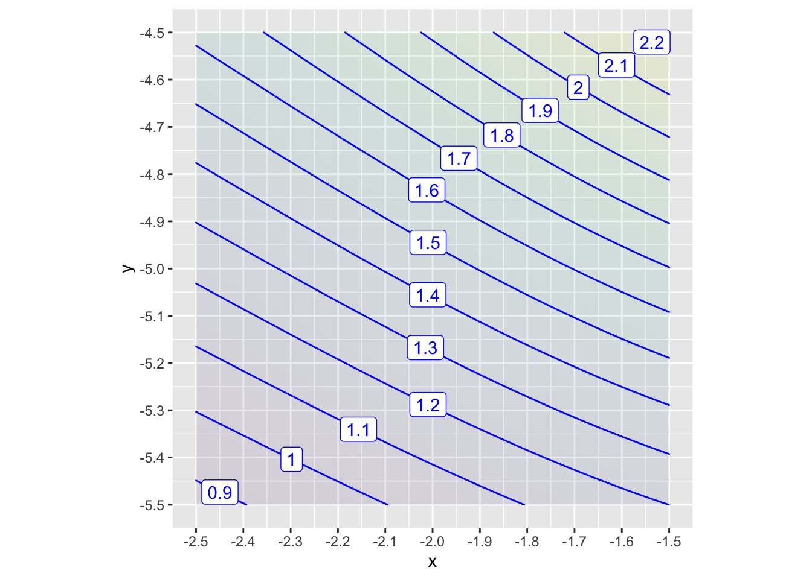</p>
</figure>
</div>
</div>
</div>
</div>
<figcaption class="quarto-float-caption-bottom quarto-float-caption quarto-float-fig quarto-uncaptioned" id="fig-partial-tan-caption-0ceaefa1-69ba-4598-a22c-09a6ac19f8ca">
Figure&nbsp;7
</figcaption>
</figure>
</div>
<p>For the following questions, estimate by eye these derivatives of the function at the reference point <span class="math inline">\((x_0=-2, y_0=-5)\)</span>.</p>
<ol type="1">
<li>What is the numerical value of <span class="math inline">\(\partial_x g(x,y)\)</span> at the reference point?</li>
</ol>
<div class="cell" data-inline="true" data-show_hints="true">
<input type="radio" class="devoirs-mcq" value="-1 " id="partial-tan-1-1" w="23" name="partial-tan-1" hint="Sorry!" show_hints="TRUE"> -1 &nbsp;&nbsp;&nbsp;&nbsp;&nbsp; <input type="radio" class="devoirs-mcq" value="-0.50 " id="partial-tan-1-2" w="32" name="partial-tan-1" hint="incorrect choice" show_hints="TRUE"> -0.50 &nbsp;&nbsp;&nbsp;&nbsp;&nbsp; <input type="radio" class="devoirs-mcq" value="-0.25 " id="partial-tan-1-3" w="3" name="partial-tan-1" hint="no" show_hints="TRUE"> -0.25 &nbsp;&nbsp;&nbsp;&nbsp;&nbsp; <input type="radio" class="devoirs-mcq" value="0 " id="partial-tan-1-4" w="19" name="partial-tan-1" hint="incorrect choice" show_hints="TRUE"> 0 &nbsp;&nbsp;&nbsp;&nbsp;&nbsp; <input type="radio" class="devoirs-mcq" value="0.25 " id="partial-tan-1-5" w="23" name="partial-tan-1" hint="incorrect choice" show_hints="TRUE"> 0.25 &nbsp;&nbsp;&nbsp;&nbsp;&nbsp; <input type="radio" class="devoirs-mcq" value="0.50" id="partial-tan-1-6" w="35" name="partial-tan-1" hint="Right" show_hints="TRUE"> 0.50 &nbsp;&nbsp;&nbsp;&nbsp;&nbsp; <input type="radio" class="devoirs-mcq" value="1 " id="partial-tan-1-7" w="87" name="partial-tan-1" hint="wrong" show_hints="TRUE"> 1 &nbsp;&nbsp;&nbsp;&nbsp;&nbsp; <input type="radio" class="devoirs-mcq" name="partial-tan-1" id="partial-tan-1.null" style="display: none;" w="skipped" checked="">
<div>
<p><small style="color: grey;" id="partial-tan-1-hintarea">question id: partial-tan-1</small></p>
</div>
</div>
<ol start="2" type="1">
<li>What is the numerical value of <span class="math inline">\(\partial_y g(x,y)\)</span> at the reference point?</li>
</ol>
<div class="cell" data-inline="true" data-show_hints="true">
<input type="radio" class="devoirs-mcq" value="-1 " id="partial-tan-2-1" w="3" name="partial-tan-2" hint="You're mistaken" show_hints="TRUE"> -1 &nbsp;&nbsp;&nbsp;&nbsp;&nbsp; <input type="radio" class="devoirs-mcq" value="-0.50 " id="partial-tan-2-2" w="7" name="partial-tan-2" hint="You're mistaken" show_hints="TRUE"> -0.50 &nbsp;&nbsp;&nbsp;&nbsp;&nbsp; <input type="radio" class="devoirs-mcq" value="-0.25 " id="partial-tan-2-3" w="23" name="partial-tan-2" hint="You're mistaken" show_hints="TRUE"> -0.25 &nbsp;&nbsp;&nbsp;&nbsp;&nbsp; <input type="radio" class="devoirs-mcq" value="0 " id="partial-tan-2-4" w="19" name="partial-tan-2" hint="You're mistaken" show_hints="TRUE"> 0 &nbsp;&nbsp;&nbsp;&nbsp;&nbsp; <input type="radio" class="devoirs-mcq" value="0.25 " id="partial-tan-2-5" w="7" name="partial-tan-2" hint="Try again!" show_hints="TRUE"> 0.25 &nbsp;&nbsp;&nbsp;&nbsp;&nbsp; <input type="radio" class="devoirs-mcq" value="0.50 " id="partial-tan-2-6" w="7" name="partial-tan-2" hint="wrong" show_hints="TRUE"> 0.50 &nbsp;&nbsp;&nbsp;&nbsp;&nbsp; <input type="radio" class="devoirs-mcq" value="1" id="partial-tan-2-7" w="29" name="partial-tan-2" hint="Good job!" show_hints="TRUE"> 1 &nbsp;&nbsp;&nbsp;&nbsp;&nbsp; <input type="radio" class="devoirs-mcq" name="partial-tan-2" id="partial-tan-2.null" style="display: none;" w="skipped" checked="">
<div>
<p><small style="color: grey;" id="partial-tan-2-hintarea">question id: partial-tan-2</small></p>
</div>
</div>
<p>The next questions ask about second-order partial derivatives. As you know, the second derivative is about how the first derivative changes with x or y. Insofar as the function is a simple inclined plane, where the contours would be straight, parallel, and evenly spaced, the second derivatives would all be zero. But you can see that it is not such a plane: the contours curve a bit.</p>
<p>In determining the second derivatives by eye from the graph, you are encouraged to compare first derivatives at the opposing edges of the graph, as opposed to at very nearby points.</p>
<ol start="3" type="1">
<li>What is the sign of <span class="math inline">\(\partial_{xx} g(x,y)\)</span> at the reference point?</li>
</ol>
<div class="cell" data-inline="true" data-show_hints="false">
<input type="radio" class="devoirs-mcq" value="negative" id="partial-tan-3-1" w="16" name="partial-tan-3" hint="Nice." show_hints="FALSE"> negative &nbsp;&nbsp;&nbsp;&nbsp;&nbsp; <input type="radio" class="devoirs-mcq" value="positive " id="partial-tan-3-2" w="32" name="partial-tan-3" hint="wide of the mark" show_hints="FALSE"> positive &nbsp;&nbsp;&nbsp;&nbsp;&nbsp; <input type="radio" class="devoirs-mcq" name="partial-tan-3" id="partial-tan-3.null" style="display: none;" w="skipped" checked="">
<div>
<p><small style="color: grey;" id="partial-tan-3-hintarea">question id: partial-tan-3</small></p>
</div>
</div>
<ol start="4" type="1">
<li>What is the sign of <span class="math inline">\(\partial_{yy} g(x,y)\)</span> at the reference point?</li>
</ol>
<div class="cell" data-inline="true" data-show_hints="false">
<input type="radio" class="devoirs-mcq" value="negative " id="partial-tan-4-1" w="87" name="partial-tan-4" hint="no" show_hints="FALSE"> negative &nbsp;&nbsp;&nbsp;&nbsp;&nbsp; <input type="radio" class="devoirs-mcq" value="positive" id="partial-tan-4-2" w="35" name="partial-tan-4" hint="Right" show_hints="FALSE"> positive &nbsp;&nbsp;&nbsp;&nbsp;&nbsp; <input type="radio" class="devoirs-mcq" name="partial-tan-4" id="partial-tan-4.null" style="display: none;" w="skipped" checked="">
<div>
<p><small style="color: grey;" id="partial-tan-4-hintarea">question id: partial-tan-4</small></p>
</div>
</div>
<ol start="5" type="1">
<li>What is the sign of <span class="math inline">\(\partial_{xy} g(x,y)\)</span> at the reference point?</li>
</ol>
<div class="cell" data-inline="true" data-show_hints="false">
<input type="radio" class="devoirs-mcq" value="negative " id="partial-tan-5-1" w="7" name="partial-tan-5" hint="incorrect choice" show_hints="FALSE"> negative &nbsp;&nbsp;&nbsp;&nbsp;&nbsp; <input type="radio" class="devoirs-mcq" value="positive" id="partial-tan-5-2" w="35" name="partial-tan-5" hint="Correct" show_hints="FALSE"> positive &nbsp;&nbsp;&nbsp;&nbsp;&nbsp; <input type="radio" class="devoirs-mcq" name="partial-tan-5" id="partial-tan-5.null" style="display: none;" w="skipped" checked="">
<div>
<p><small style="color: grey;" id="partial-tan-5-hintarea">question id: partial-tan-5</small></p>
</div>
</div>
<ol start="6" type="1">
<li>What is the sign of <span class="math inline">\(\partial_{yx} g(x,y)\)</span> at the reference point?</li>
</ol>
<div class="cell" data-inline="true" data-show_hints="false">
<input type="radio" class="devoirs-mcq" value="negative " id="partial-tan-6-1" w="32" name="partial-tan-6" hint="You're mistaken" show_hints="FALSE"> negative &nbsp;&nbsp;&nbsp;&nbsp;&nbsp; <input type="radio" class="devoirs-mcq" value="positive" id="partial-tan-6-2" w="8" name="partial-tan-6" hint="Nice." show_hints="FALSE"> positive &nbsp;&nbsp;&nbsp;&nbsp;&nbsp; <input type="radio" class="devoirs-mcq" name="partial-tan-6" id="partial-tan-6.null" style="display: none;" w="skipped" checked="">
<div>
<p><small style="color: grey;" id="partial-tan-6-hintarea">question id: partial-tan-6</small></p>
</div>
</div>
</div>
<div id="exr-partial-house" class="theorem exercise">
<p><span class="theorem-title"><strong>Exercise 20</strong></span> For almost everyone, a house is too expensive to buy with cash, so people need to borrow money. The usual form of the loan is called a “mortgage”. Mortgages extend over many years and involve paying a fixed amount each month. That amount is calculated so that, by paying it each month for the duration of the mortgage, the last payment will completely repay the amount borrowed plus the accumulated interest.</p>
<p>The monthly mortgage payment in dollars, <span class="math inline">\(P\)</span>, for a house is a function of three quantities, <span class="math display">\[P(A, r, N)\]</span> where <span class="math inline">\(A\)</span> is the amount borrowed in dollars, <span class="math inline">\(r\)</span> is the interest rate (percentage points per year), and <span class="math inline">\(N\)</span> is the number of years before the mortgage is paid off.</p>
<p>A studio apartment is selling for $220,000. You will need to borrow $184,000 to make the purchase.</p>
<ol type="1">
<li>Suppose <span class="math inline">\(P(184000,4,10) = 2180.16\)</span>. What does this tell you in financial terms?</li>
</ol>
<div class="cell" data-show_hints="true">
<p>
</p><p><input type="radio" class="devoirs-mcq" value="The monthl ...  per year." id="partial-house-1-1" w="41" name="partial-house-1" hint="You're right" show_hints="TRUE"> The monthly cost of borrowing $184,000 for 10 years at 4% interest per year.</p>
<p></p>
<p>
</p><p><input type="radio" class="devoirs-mcq" value="The monthl ...  per year." id="partial-house-1-2" w="19" name="partial-house-1" hint="You've  got the order of the argument wrong." show_hints="TRUE"> The monthly cost of borrowing $184,000 for 4 years at 10% interest per year.</p>
<p></p>
<p>
</p><p><input type="radio" class="devoirs-mcq" value="The annual ...  10 years." id="partial-house-1-3" w="23" name="partial-house-1" hint="The output of the function $P()$ is the *monthly* mortgage payment." show_hints="TRUE"> The annual cost of the mortgage at 4% interest for 10 years.</p>
<p></p>
<p>
</p><p><input type="radio" class="devoirs-mcq" value="The annual ... or 4 years" id="partial-house-1-4" w="87" name="partial-house-1" hint="The output of the function $P()$ is the *monthly* mortgage payment." show_hints="TRUE"> The annual cost of the mortgage at 10% interest for 4 years</p>
<p></p>
<input type="radio" class="devoirs-mcq" name="partial-house-1" id="partial-house-1.null" style="display: none;" w="skipped" checked="">
<div>
<p><small style="color: grey;" id="partial-house-1-hintarea">question id: partial-house-1</small></p>
</div>
</div>
<p>The next two questions involve what happens to the monthly mortgage payments if you change either the amount or duration of the mortgage. (Hint: Common sense works wonders!)</p>
<div id="exr-1NLvoZ" class="theorem exercise">
<p><span class="theorem-title"><strong>Exercise 12</strong></span> &nbsp;</p>
<ol start="2" type="1">
<li>What would you expect about the quantity <span class="math inline">\(\partial P / \partial A\)</span>, the partial derivative of the monthly mortgage payment with respect to the amount of money borrowed?</li>
</ol>
<div class="cell" data-show_hints="true">
<p>
</p><p><input type="radio" class="devoirs-mcq" value="It is positive" id="partial-house-2-1" w="8" name="partial-house-2" hint="Correct If you borrow more money, holding mortgage duration and interest rate constant, you will have to pay more each month." show_hints="TRUE"> It is positive</p>
<p></p>
<p>
</p><p><input type="radio" class="devoirs-mcq" value="It is zero " id="partial-house-2-2" w="23" name="partial-house-2" hint="Not quite right" show_hints="TRUE"> It is zero</p>
<p></p>
<p>
</p><p><input type="radio" class="devoirs-mcq" value="It is negative " id="partial-house-2-3" w="32" name="partial-house-2" hint="Sorry!" show_hints="TRUE"> It is negative</p>
<p></p>
<input type="radio" class="devoirs-mcq" name="partial-house-2" id="partial-house-2.null" style="display: none;" w="skipped" checked="">
<div>
<p><small style="color: grey;" id="partial-house-2-hintarea">question id: partial-house-2</small></p>
</div>
</div>
<ol start="3" type="1">
<li>What would you expect about the quantity <span class="math inline">\(\partial P / \partial N\)</span>, the partial derivative of the monthly mortgage payment with respect to the number of years the mortgage lasts?</li>
</ol>
<div class="cell" data-show_hints="true">
<p>
</p><p><input type="radio" class="devoirs-mcq" value="It is positive " id="partial-house-3-1" w="23" name="partial-house-3" hint="Not quite right" show_hints="TRUE"> It is positive</p>
<p></p>
<p>
</p><p><input type="radio" class="devoirs-mcq" value="It is zero " id="partial-house-3-2" w="3" name="partial-house-3" hint="You're mistaken" show_hints="TRUE"> It is zero</p>
<p></p>
<p>
</p><p><input type="radio" class="devoirs-mcq" value="It is negative" id="partial-house-3-3" w="20" name="partial-house-3" hint="Correct If you borrow the same amount of money at the same interest rate, but have more years to pay it back, your monthly payment will be smaller." show_hints="TRUE"> It is negative</p>
<p></p>
<input type="radio" class="devoirs-mcq" name="partial-house-3" id="partial-house-3.null" style="display: none;" w="skipped" checked="">
<div>
<p><small style="color: grey;" id="partial-house-3-hintarea">question id: partial-house-3</small></p>
</div>
</div>
<ol start="4" type="1">
<li>Suppose <span class="math inline">\(\partial_r P (184000,4,30) =\)</span> $145.65. What is the financial significance of the number $145.65??</li>
</ol>
<div class="cell" data-show_hints="true">
<p>
</p><p><input type="radio" class="devoirs-mcq" value="If the int ... y $145.65." id="partial-house-4-1" w="19" name="partial-house-4" hint="This is a perfectly reasonable answer, but  ... recall that the derivative gives the rate of increase in the output of the function when the input changes by a tiny amount. It turns out that a 1 percentage point increase in interest rate is a very large amount of change." show_hints="TRUE"> If the interest rate <span class="math inline">\(r\)</span> went up from 4 to 5, the monthly payment would increase by $145.65.</p>
<p></p>
<p>
</p><p><input type="radio" class="devoirs-mcq" value="If the int ... y $145.65." id="partial-house-4-2" w="7" name="partial-house-4" hint="This is indeed a small change in interest rate, but the value of the derivative is the *rate* of increase, not the increase itself." show_hints="TRUE"> If the interest rate <span class="math inline">\(r\)</span> went up from 4 to 4.001, the monthly payment would increase by $145.65.</p>
<p></p>
<p>
</p><p><input type="radio" class="devoirs-mcq" value="If the int ... s $145.65." id="partial-house-4-3" w="18" name="partial-house-4" hint="Nice. You might think that nobody would be concerned about such a small increase in interest rate. But knowing the result for each very small increase allows us to calculate what would be the impact of a large increase by a process  called *integration*." show_hints="TRUE"> If the interest rate <span class="math inline">\(r\)</span> went up from 4 to 4.001, the monthly payment would increase by $0.001 imes $145.65.</p>
<p></p>
<input type="radio" class="devoirs-mcq" name="partial-house-4" id="partial-house-4.null" style="display: none;" w="skipped" checked="">
<div>
<p><small style="color: grey;" id="partial-house-4-hintarea">question id: partial-house-4</small></p>
</div>
</div>
</div>
<div id="exr-partial-purple" class="theorem exercise">
<p><span class="theorem-title"><strong>Exercise 13</strong></span> Use <a href="#lst-partial-purple" class="quarto-xref">Active R chunk&nbsp;<span>1</span></a> to make a contour plot of the function <span class="math inline">\(g(x)\)</span> centered on the reference point <span class="math inline">\((x_0\!=\!0,\, y_0\!=\!0)\)</span>.</p>
<div id="lst-partial-purple" class="listing quarto-float quarto-figure quarto-figure-left anchored">
<figure class="quarto-float quarto-float-lst figure">
<figcaption class="quarto-float-caption-top quarto-float-caption quarto-float-lst quarto-uncaptioned" id="lst-partial-purple-caption-0ceaefa1-69ba-4598-a22c-09a6ac19f8ca">
Active R chunk&nbsp;1
</figcaption>
<div aria-describedby="lst-partial-purple-caption-0ceaefa1-69ba-4598-a22c-09a6ac19f8ca">
<div id="qwebr-insertion-location-1"></div>
<noscript>Please enable JavaScript to experience the dynamic code cell content on this page.</noscript>
</div>
</figure>
</div>
<p>By making <code>size</code> smaller, you can zoom in around the reference point. Zoom in gradually (say, <code>size =</code> 1.0, 0.5, 0.1, 0.05, 0.01) until you reach a point where the surface plot is (practically) a pretty simple inclined plane.</p>
<p>From the contour plot, zoomed in so that the graph shows an inclined plane, figure out the sign of <span class="math inline">\(\partial_x g(0,0)\)</span> and <span class="math inline">\(\partial_y g(0,0)\)</span>.</p>
<p>Which answer best describes the signs of the partial derivatives of <span class="math inline">\(g(x,y)\)</span> at the reference point <span class="math inline">\((x_0=0, y_0=0)\)</span>?</p>
<div class="cell" data-show_hints="true">
<p>
</p><p><input type="radio" class="devoirs-mcq" value="$\partial_ ... $ is pos  " id="partial-purple-1-1" w="3" name="partial-purple-1" hint="wide of the mark" show_hints="TRUE"> <span class="math inline">\(\partial_x g(0,0)\)</span> is pos, <span class="math inline">\(\partial_y g(0,0)\)</span> is pos</p>
<p></p>
<p>
</p><p><input type="radio" class="devoirs-mcq" value="$\partial_ ... $ is neg  " id="partial-purple-1-2" w="23" name="partial-purple-1" hint="Sorry!" show_hints="TRUE"> <span class="math inline">\(\partial_x g(0,0)\)</span> is pos, <span class="math inline">\(\partial_y g(0,0)\)</span> is neg</p>
<p></p>
<p>
</p><p><input type="radio" class="devoirs-mcq" value="$\partial_ ... $ is neg  " id="partial-purple-1-3" w="3" name="partial-purple-1" hint="wrong" show_hints="TRUE"> <span class="math inline">\(\partial_x g(0,0)\)</span> is neg, <span class="math inline">\(\partial_y g(0,0)\)</span> is neg</p>
<p></p>
<p>
</p><p><input type="radio" class="devoirs-mcq" value="$\partial_ ... )$ is pos." id="partial-purple-1-4" w="20" name="partial-purple-1" hint="Excellent!" show_hints="TRUE"> <span class="math inline">\(\partial_x g(0,0)\)</span> is neg, <span class="math inline">\(\partial_y g(0,0)\)</span> is pos.</p>
<p></p>
<p>
</p><p><input type="radio" class="devoirs-mcq" value="$\partial_ ... )$ is pos " id="partial-purple-1-5" w="19" name="partial-purple-1" hint="Not quite right" show_hints="TRUE"> <span class="math inline">\(\partial_x g(0,0)\)</span> is 0, <span class="math inline">\(\partial_y g(0,0)\)</span> is pos</p>
<p></p>
<input type="radio" class="devoirs-mcq" name="partial-purple-1" id="partial-purple-1.null" style="display: none;" w="skipped" checked="">
<div>
<p><small style="color: grey;" id="partial-purple-1-hintarea">question id: partial-purple-1</small></p>
</div>
</div>
</div>
<div id="exr-spider-blow-lamp" class="theorem exercise">
<p><span class="theorem-title"><strong>Exercise 14</strong></span> In economic theory, the quantity of the demand for any good is a decreasing function of the price of that good and an <em>increasing</em> function of the price of a competing good.</p>
<p>The classical example is that apple juice competes with orange juice. The demand for orange juice is in units of thousands of liters of orange juice. The price is in units of dollars per liter.</p>
<p>Here’s a graph with the input quantities unlabeled. The contour labels indicate the demand for orange juice.</p>
<div class="cell">
<div class="cell-output-display">
<div>
<figure class="figure">
<p>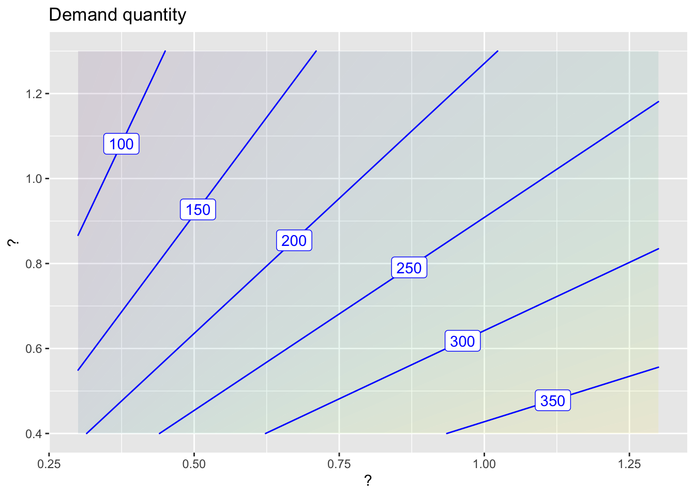</p>
</figure>
</div>
</div>
</div>
<p>The concept of partial derivatives makes it much easier to think about the situation. There are two partial derivative functions relevant to the function in the graph. Well denote the inputs <code>apple</code> and <code>orange</code>, but remember that these are the prices of those commodities in dollars per liter.</p>
<ul>
<li><span class="math inline">\(\partial_\text{apple} \text{demand}()\)</span> – how the <em>demand</em> changes when apple-juice price goes up, <em>holding orange-juice price constant</em>. (Another notation that is more verbose but perhaps easier to read <span class="math inline">\(\frac{\partial\, \text{demand}}{\partial\,\text{apple}}\)</span>)</li>
<li><span class="math inline">\(\partial_\text{orange} \text{demand}()\)</span> – how the <em>demand</em> changes when orange-juice price goes up, <em>holding apple-juice price constant</em>. (Another notation: <span class="math inline">\(\frac{\partial\, \text{demand}}{\partial\,\text{orange}}\)</span>)</li>
</ul>
<p>Notice that the notation names both the output and the single input which is to be changed–the other inputs will be held constant.</p>
<p>The first paragraph of this problem gives the economic theory which amounts to saying that one of the partial derivatives is positive and the other negative.</p>
<ol type="1">
<li>What is the proper translation of the notation <span class="math inline">\(\partial_\text{apple}\text{demand}()\)</span>?</li>
</ol>
<div class="cell" data-show_hints="true">
<p>
</p><p><input type="radio" class="devoirs-mcq" value="The partia ... uice price" id="spider-blow-lamp-1-1" w="18" name="spider-blow-lamp-1" hint="Right" show_hints="TRUE"> The partial derivative of orange-juice demand <em>with repect to</em> apple-juice price</p>
<p></p>
<p>
</p><p><input type="radio" class="devoirs-mcq" value="The partia ... ange juice" id="spider-blow-lamp-1-2" w="7" name="spider-blow-lamp-1" hint="Derivatives are always with respect to an *input*. Demand for orange juice is the output." show_hints="TRUE"> The partial derivative of apple-juice price <em>with respect to</em> demand for orange juice</p>
<p></p>
<p>
</p><p><input type="radio" class="devoirs-mcq" value="The partia ... pple juice" id="spider-blow-lamp-1-3" w="23" name="spider-blow-lamp-1" hint="This problem is about orange-juice demand, not apple-juice demand." show_hints="TRUE"> The partial derivative of apple-juice demand <em>with respect to</em> price of apple juice</p>
<p></p>
<p>
</p><p><input type="radio" class="devoirs-mcq" value="The partia ... ice price." id="spider-blow-lamp-1-4" w="87" name="spider-blow-lamp-1" hint="Both of these are *inputs* to the demand function. A partial derivative is always about the change in output when one of the inputs changes, not the change in one input when another input changes." show_hints="TRUE"> The partial derivative of orange-juice price <em>with respect to</em> apple-juice price.</p>
<p></p>
<input type="radio" class="devoirs-mcq" name="spider-blow-lamp-1" id="spider-blow-lamp-1.null" style="display: none;" w="skipped" checked="">
<div>
<p><small style="color: grey;" id="spider-blow-lamp-1-hintarea">question id: spider-blow-lamp-1</small></p>
</div>
</div>
<ol start="2" type="1">
<li>According to the economic theory described above, one of the partial derivatives will be positive and the other negative. Which will be <em>positive</em>.</li>
</ol>
<div class="cell" data-show_hints="true">
<p>
</p><p><input type="radio" class="devoirs-mcq" value="$\partial_ ... demand}()$" id="spider-blow-lamp-2-1" w="14" name="spider-blow-lamp-2" hint="Nice." show_hints="TRUE"> <span class="math inline">\(\partial_\text{apple}  \text{demand}()\)</span></p>
<p></p>
<p>
</p><p><input type="radio" class="devoirs-mcq" value="$\partial_ ... demand}()$" id="spider-blow-lamp-2-2" w="3" name="spider-blow-lamp-2" hint="If orange juice prices went up, would you drink more orange juice?" show_hints="TRUE"> <span class="math inline">\(\partial_\text{orange} \text{demand}()\)</span></p>
<p></p>
<input type="radio" class="devoirs-mcq" name="spider-blow-lamp-2" id="spider-blow-lamp-2.null" style="display: none;" w="skipped" checked="">
<div>
<p><small style="color: grey;" id="spider-blow-lamp-2-hintarea">question id: spider-blow-lamp-2</small></p>
</div>
</div>
<ol start="3" type="1">
<li>What does the vertical axis measure?</li>
</ol>
<div class="cell" data-show_hints="true">
<p>
</p><p><input type="radio" class="devoirs-mcq" value="Price of o ... ange juice" id="spider-blow-lamp-3-1" w="5" name="spider-blow-lamp-3" hint="Nice." show_hints="TRUE"> Price of orange juice</p>
<p></p>
<p>
</p><p><input type="radio" class="devoirs-mcq" value="Quantity o ... ple juice " id="spider-blow-lamp-3-2" w="7" name="spider-blow-lamp-3" hint="no" show_hints="TRUE"> Quantity of apple juice</p>
<p></p>
<p>
</p><p><input type="radio" class="devoirs-mcq" value="Quantity o ... nge juice " id="spider-blow-lamp-3-3" w="19" name="spider-blow-lamp-3" hint="Sorry!" show_hints="TRUE"> Quantity of orange juice</p>
<p></p>
<p>
</p><p><input type="radio" class="devoirs-mcq" value="Price of a ... ple juice " id="spider-blow-lamp-3-4" w="32" name="spider-blow-lamp-3" hint="wrong" show_hints="TRUE"> Price of apple juice</p>
<p></p>
<input type="radio" class="devoirs-mcq" name="spider-blow-lamp-3" id="spider-blow-lamp-3.null" style="display: none;" w="skipped" checked="">
<div>
<p><small style="color: grey;" id="spider-blow-lamp-3-hintarea">question id: spider-blow-lamp-3</small></p>
</div>
</div>
<ol start="4" type="1">
<li>Consider the magnitude (absolute value) of the partial derivative of demand with respect to orange-juice price. Is this magnitude greater toward the top of the graph or the bottom?</li>
</ol>
<div class="cell" data-show_hints="true">
<p>
</p><p><input type="radio" class="devoirs-mcq" value="top" id="spider-blow-lamp-4-1" w="18" name="spider-blow-lamp-4" hint="You're right" show_hints="TRUE"> top</p>
<p></p>
<p>
</p><p><input type="radio" class="devoirs-mcq" value="bottom" id="spider-blow-lamp-4-2" w="87" name="spider-blow-lamp-4" hint="The horizontal distance between contour lines is larger at the bottom of the graph than at the top. Far-apart contours mean that the function is flatter." show_hints="TRUE"> bottom</p>
<p></p>
<p>
</p><p><input type="radio" class="devoirs-mcq" value="neither" id="spider-blow-lamp-4-3" w="3" name="spider-blow-lamp-4" hint="Remember, we are talking about the partial derivative with respect to orange juice price. That corresponds to the slope when moving in a *horizontal* direction." show_hints="TRUE"> neither</p>
<p></p>
<input type="radio" class="devoirs-mcq" name="spider-blow-lamp-4" id="spider-blow-lamp-4.null" style="display: none;" w="skipped" checked="">
<div>
<p><small style="color: grey;" id="spider-blow-lamp-4-hintarea">question id: spider-blow-lamp-4</small></p>
</div>
</div>
</div>
<section id="activities" class="level3">
<h3 class="anchored" data-anchor-id="activities">Activities</h3>
<div id="exr-shark-tug-laundry" class="theorem exercise">
<p><span class="theorem-title"><strong>Exercise 15</strong></span> For <span class="math inline">\(f(x)\)</span>, a function with one input, the fundamental definition o the derivative of is: <span class="math display">\[\partial_x f(x) \equiv \lim_{h\rightarrow 0} \frac{f(x+h) - f(x)}{h}\ .\]</span></p>
<p>Using this same style, write out the three forms of the derivatives of <span class="math inline">\(g(x, y, z)\)</span> with respect to each of the inputs in turn.</p>
<div class="callout callout-style-default callout-note callout-titled">
<div class="callout-header d-flex align-content-center" data-bs-toggle="collapse" data-bs-target=".callout-1-contents" aria-controls="callout-1" aria-expanded="false" aria-label="Toggle callout">
<div class="callout-icon-container">
<i class="callout-icon"></i>
</div>
<div class="callout-title-container flex-fill">
Answer
</div>
<div class="callout-btn-toggle d-inline-block border-0 py-1 ps-1 pe-0 float-end"><i class="callout-toggle"></i></div>
</div>
<div id="callout-1" class="callout-1-contents callout-collapse collapse">
<div class="callout-body-container callout-body">
<p><span class="math display">\[\partial_x g(x, y, z) \equiv \lim_{h\rightarrow 0}\ \frac{g(x+h, y, z) - g(x, y, z)}{h}\]</span></p>
<p><span class="math display">\[\partial_y g(x, y, z) \equiv \lim_{h\rightarrow 0}\ \frac{g(x, y+h, z) - g(x, y, z)}{h}\]</span></p>
<p><span class="math display">\[\partial_z g(x, y, z) \equiv \lim_{h\rightarrow 0}\ \frac{g(x, y, z+h) - g(x, y, z)}{h}\]</span></p>
</div>
</div>
</div>
</div>
<div id="exr-buck-lie-plant" class="theorem exercise">
<p><span class="theorem-title"><strong>Exercise 16</strong></span> <a href="#fig-buck-lie-plant" class="quarto-xref">Figure&nbsp;<span>8</span></a> shows the effect of an imagined drug on heart rate. Each of the lines shows heart rate as a function of dose for a given age. The drug’s effect depends both on the dose of the drug and on the age of the person taking the drug.</p>
<div id="fig-buck-lie-plant" class="quarto-float quarto-figure quarto-figure-center anchored">
<figure class="quarto-float quarto-float-fig figure">
<div aria-describedby="fig-buck-lie-plant-caption-0ceaefa1-69ba-4598-a22c-09a6ac19f8ca">
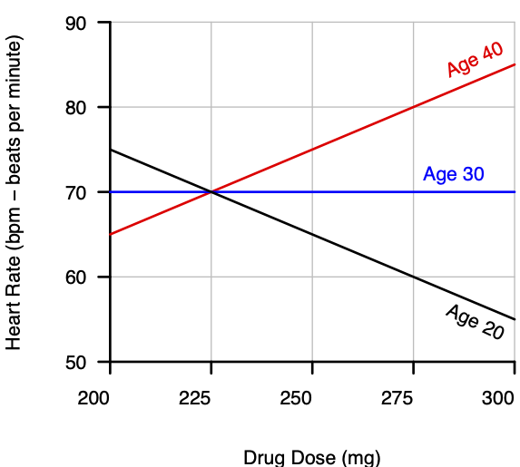
</div>
<figcaption class="quarto-float-caption-bottom quarto-float-caption quarto-float-fig quarto-uncaptioned" id="fig-buck-lie-plant-caption-0ceaefa1-69ba-4598-a22c-09a6ac19f8ca">
Figure&nbsp;8
</figcaption>
</figure>
</div>
<p>Using the information shown in <a href="#fig-buck-lie-plant" class="quarto-xref">Figure&nbsp;<span>8</span></a>, estimate numerically each of the following partial derivatives, giving proper units for each. (Heart rate is measured in “bpm” (beats per minute) and dose in “mg”.)</p>
<ol type="a">
<li>The derivative <span class="math inline">\(\partial_\text{dose} HR\)</span>
<ol type="i">
<li>at dose<span class="math inline">\(=275\)</span>, age<span class="math inline">\(=20\)</span></li>
<li>at dose<span class="math inline">\(=275\)</span>, age<span class="math inline">\(=30\)</span></li>
<li>at dose<span class="math inline">\(=275\)</span>, age<span class="math inline">\(=40\)</span></li>
</ol></li>
<li><span class="math inline">\(\partial_\text{age} HR\)</span> at dose<span class="math inline">\(=275\)</span>, age<span class="math inline">\(=30\)</span>.</li>
<li><span class="math inline">\(\partial_\text{dose} \partial_\text{dose} HR\)</span> at dose<span class="math inline">\(=275\)</span>, age<span class="math inline">\(=30\)</span>.</li>
<li><span class="math inline">\(\partial_\text{age} \partial_\text{age} HR\)</span> at dose<span class="math inline">\(=275\)</span>, age<span class="math inline">\(=30\)</span>.</li>
<li><span class="math inline">\(\partial_\text{age} \partial_\text{dose} HR\)</span> at dose<span class="math inline">\(=275\)</span>, age<span class="math inline">\(=30\)</span>.</li>
</ol>
<p><a href="#fig-buck-lie-plant" class="quarto-xref">Figure&nbsp;<span>8</span></a> shows three slices through the function HR(dose, age). One slice is for age 20, one slice for age 30, and the last for age 40. This is a standard graphical format in the technical literature, sometimes called an <strong><em>interaction plot</em></strong> since it emphasizes the interaction between age and dose.</p>
<p><a href="#fig-buck-lie-plant-2" class="quarto-xref">Figure&nbsp;<span>9</span></a> shows three contour plots. One of them corresponds to the function shown in <a href="#fig-buck-lie-plant" class="quarto-xref">Figure&nbsp;<span>8</span></a>.</p>
<div id="fig-buck-lie-plant-2" class="quarto-float quarto-figure quarto-figure-center anchored">
<figure class="quarto-float quarto-float-fig figure">
<div aria-describedby="fig-buck-lie-plant-2-caption-0ceaefa1-69ba-4598-a22c-09a6ac19f8ca">
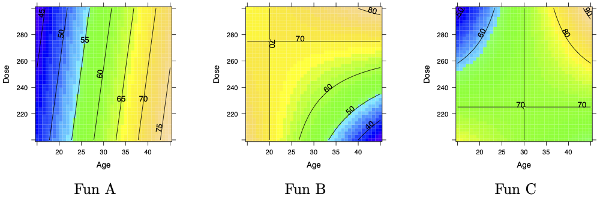
</div>
<figcaption class="quarto-float-caption-bottom quarto-float-caption quarto-float-fig" id="fig-buck-lie-plant-2-caption-0ceaefa1-69ba-4598-a22c-09a6ac19f8ca">
Figure&nbsp;9: Three contour-plots to refer to when answering the following questions.
</figcaption>
</figure>
</div>
<ol type="a">
<li><p>Which contour plot in <a href="#fig-buck-lie-plant-2" class="quarto-xref">Figure&nbsp;<span>9</span></a> matches the interaction graph in <a href="#fig-buck-lie-plant" class="quarto-xref">Figure&nbsp;<span>8</span></a>?</p></li>
<li><p>On the correct contour plot, draw the paths that correspond to the graph of HR versus dose for each of ages 20, 30, and 40 years.</p></li>
</ol>
</div>
<div id="exr-dog-hide-room" class="theorem exercise">
<p><span class="theorem-title"><strong>Exercise 17</strong></span> The US National Weather Service provides this graphic for calculating the “heat index.” The output is the heat index, shown both quantitatively (the labels on the contours) and with color.</p>
<div id="fig-dog-hide-room" class="quarto-float quarto-figure quarto-figure-center anchored">
<figure class="quarto-float quarto-float-fig figure">
<div aria-describedby="fig-dog-hide-room-caption-0ceaefa1-69ba-4598-a22c-09a6ac19f8ca">

</div>
<figcaption class="quarto-float-caption-bottom quarto-float-caption quarto-float-fig quarto-uncaptioned" id="fig-dog-hide-room-caption-0ceaefa1-69ba-4598-a22c-09a6ac19f8ca">
Figure&nbsp;10
</figcaption>
</figure>
</div>
<ol type="1">
<li><p>At a relative humidity of 30% and a temperature of 90 F give a numerical estimate (with units!) for the following quantities:</p>
<ol type="i">
<li>The partial derivative of heat index with respect to temperature. ii. The partial derivative of heat index with respect to humidity.</li>
</ol></li>
<li><p>Is the gradient vector longer on the left side of the graph than on the right side of the graph?</p></li>
<li><p>Is the gradient vector longer for high temperatures than for low temperatures?</p></li>
</ol>
</div>
<div id="exr-partial-doctor" class="theorem exercise">
<p><span class="theorem-title"><strong>Exercise 18</strong></span> At numerous occasions in your professional life, you will be in one or both of these positions:</p>
<ol type="1">
<li>You are a decision-maker being presented with the results of analysis conducted by a team of unknown reliability, and you need to figure out whether what they are telling you is credible.</li>
<li>You are a member of the analysis team needing to demonstrate to the decision-maker that your work should be believed.</li>
</ol>
<p>As an example, consider one of the functions presented in a comedy book, <em>Geek Logic: 50 Foolproof Equations for Everyday Life</em> (2006), by Garth Sundem. The particular function we will consider here is <code>Dr()</code>, intended to help answer the question, “Should you go to the doctor?”</p>
<p><span class="math display">\[\text{Dr}(d, c, p,  e,  n, s) = \frac{\frac{s^2}{2} + e(n-e)}{100 -  3(d + \frac{p^3}{70} - c)}\]</span> where</p>
<ul>
<li><span class="math inline">\(d\)</span> = How many days in the past month have you been incapacitated? <span class="math inline">\(d_0 \equiv 3\)</span></li>
<li><span class="math inline">\(c\)</span> = Does the issue seem to be getting better or worse. (-10 to 10 with -10 being “circling the drain” and 10 being “dramatic improvement”) <span class="math inline">\(c_0 \equiv -2\)</span></li>
<li><span class="math inline">\(p\)</span> = How much pain or discomfort are you currently experiencing? (1-10 with 10 being “currently holding detached toe in Ziploc bag”) <span class="math inline">\(p_0 = 3\)</span></li>
<li><span class="math inline">\(e\)</span> = How embarrassing is this issue? (1-10 with 10 being “slipped on ice and fell on 1972 Mercedes-Benz hood ornament, which is now part of my body”) <span class="math inline">\(e_0 = 4\)</span></li>
<li><span class="math inline">\(n\)</span> = How noticeable is the issue? (1-10 with 10 being “fell asleep on waffle iron”) <span class="math inline">\(n_0 = 5\)</span></li>
<li><span class="math inline">\(s\)</span> = How serious does the issue seem? (1-10 with 10 being “may well have nail embedded in frontal lobe [of brain]”) <span class="math inline">\(s_0 = 3\)</span></li>
</ul>
<p>Although the function is offered tongue-in-cheek, let’s examine it to see if it even roughly matches common sense. The tool we will use relates to low-order polynomial approximation around a reference point and examining appropriate partial derivatives. To save time, we stipulate a reference point for you, noted in the description of quantities above.</p>
<div id="lst-partial-doctor" class="listing quarto-float quarto-figure quarto-figure-left anchored">
<figure class="quarto-float quarto-float-lst figure">
<figcaption class="quarto-float-caption-top quarto-float-caption quarto-float-lst quarto-uncaptioned" id="lst-partial-doctor-caption-0ceaefa1-69ba-4598-a22c-09a6ac19f8ca">
Active R chunk&nbsp;2
</figcaption>
<div aria-describedby="lst-partial-doctor-caption-0ceaefa1-69ba-4598-a22c-09a6ac19f8ca">
<p>The code creates an R implementation of the function that is set up so that the default values of the inputs are those at the given reference point. You can use this in a sandbox to try different changes in each of the input quantities.</p>
<div id="qwebr-insertion-location-2"></div>
<noscript>Please enable JavaScript to experience the dynamic code cell content on this page.</noscript>
</div>
</figure>
</div>
<p>According to the instructions in <em>Geek Logic</em>, if <code>Dr()</code><span class="math inline">\(&gt; 1\)</span>, you should go to the doctor.</p>
<p><strong>Essay 1</strong>: The value of <code>Dr()</code> at the reference point is 0.10, indicating that you shouldn’t go to the doctor. But we don’t yet know whether 0.10 is very close to the decision threshold of 1 or very far away. Describe a reasonable way to figure this out. Report your description and the results here.</p>
<p><textarea id="partial-doctor-1" name="partial-doctor-1" class="devoirs-text" rows="4" cols="50" placeholder="Type here for question ID partial-doctor-1"></textarea> </p><div style="color: grey;"> <small>question id: partial-doctor-1</small> </div><p></p>
<p><strong>Essay 2</strong>: There are six inputs to the function. Go through the list of all six and (without thinking too hard about it) write down for all of them your intuitive sense of whether an increase of one point in that input should raise or lower the output of Dr() at the reference point. Also write down whether you think the input should be a large or small determinant of whether to go to the doctor. (You don’t need to refer to the Dr() function itself, just to your own intuitive sense of what should be the effect of each of the inputs.)</p>
<p><textarea id="partial-doctor-2" name="partial-doctor-2" class="devoirs-text" rows="4" cols="50" placeholder="Type here for question ID partial-doctor-2"></textarea> </p><div style="color: grey;"> <small>question id: partial-doctor-2</small> </div><p></p>
<p>The operator <code>D()</code> can calculate partial derivatives. You can calculate the value of a partial derivative very easily at the reference point, using an expression like this, which gives the value of the partial of Dr() with respect to input <span class="math inline">\(s\)</span> at the reference point:</p>
<div id="qwebr-insertion-location-3"></div>
<noscript>Please enable JavaScript to experience the dynamic code cell content on this page.</noscript>
<p>We are now going to use these partial derivatives to compare your intuition about going to the doctor to what the function has to say. Of course, we don’t know yet whether the function is reasonable, so don’t be disappointed if your intuition conflicts with the function.</p>
<p><strong>Essay 3</strong>: Calculate the numerical value of each of the partial derivatives at the reference point. List them here and say, for each one, whether it accords with your intuition.</p>
<p><textarea id="partial-doctor-3" name="partial-doctor-3" class="devoirs-text" rows="4" cols="50" placeholder="Type here for question ID partial-doctor-3"></textarea> </p><div style="color: grey;"> <small>question id: partial-doctor-3</small> </div><p></p>
</div>
<div id="exr-shark-bite-sheet" class="theorem exercise">
<p><span class="theorem-title"><strong>Exercise 19</strong></span> Let’s return to the water skier in <strong>XREF not implemented yet</strong>. When we left her, the rope was being pulled in at 10 feet per second and her corresponding speed on the water was 10.05 feet per second. The relationship between the rope speed and the skier’s speed was <span class="math display">\[dx = \frac{L}{x} dL\]</span> and, due to the right-angle configuration of the tow system, <span class="math inline">\(x^2 = L^2 - H^2\)</span>.</p>
<p>What happens to <span class="math inline">\(dx\)</span> as <span class="math inline">\(L\)</span> gets smaller with <span class="math inline">\(dL\)</span> being the same? We need to keep in mind that <span class="math inline">\(dx\)</span> depends on three things: <span class="math inline">\(dL\)</span>, <span class="math inline">\(L\)</span>, and <span class="math inline">\(x\)</span>. But we can substitute in the Pythagorean relationship between <span class="math inline">\(x\)</span>, <span class="math inline">\(L\)</span>, and (fixed) <span class="math inline">\(H\)</span> to get <span class="math display">\[dx = \frac{L}{\strut\sqrt{L^2 - H^2}}\ dL\ .\]</span> This is bad news for the skier who holds on too long! As <span class="math inline">\(L\)</span> approaches <span class="math inline">\(H\)</span>, the rope becomes more and more vertical and the skier’s water speed becomes greater and greater, approaching <span class="math inline">\(\infty\)</span> as <span class="math inline">\(L \rightarrow H\)</span>.</p>
<p>You, an engineer brought in to solve this dangerous possibility, have proposed to have the winch slow down as the rope is reeled in. How should the speed of the rope be set so that the skier’s water speed remains safely constant?</p>
<p>What formula for <span class="math inline">\(dL\)</span> will allow <span class="math inline">\(dx\)</span> to stay constant at a value <span class="math inline">\(v\)</span>?</p>
<div class="cell" data-show_hints="true">
<p>
</p><p><input type="radio" class="devoirs-mcq" value="$dL = dx$" id="shark-bite-sheet-1-1" w="32" name="shark-bite-sheet-1" hint="This is possible only for one value of $L$, when $\sqrt{L^2 - H^2} = L$. So this isn't a way to keep $dx$ constant." show_hints="TRUE"> <span class="math inline">\(dL = dx\)</span></p>
<p></p>
<p>
</p><p><input type="radio" class="devoirs-mcq" value="$dL = v \s ... - H^2}{L}$" id="shark-bite-sheet-1-2" w="41" name="shark-bite-sheet-1" hint="You're right The roop speed will get slower and slower, coming to zero when $L = H$" show_hints="TRUE"> <span class="math inline">\(dL = v \sqrt{L^2 - H^2}{L}\)</span></p>
<p></p>
<p>
</p><p><input type="radio" class="devoirs-mcq" value="$dL = v \s ... ^2 - H^2}$" id="shark-bite-sheet-1-3" w="7" name="shark-bite-sheet-1" hint="If $dL$ were set according to this rule, $dx = L$, which isn't going to be constant as $L$ gets smaller." show_hints="TRUE"> <span class="math inline">\(dL = v \sqrt{L^2 - H^2}\)</span></p>
<p></p>
<p>
</p><p><input type="radio" class="devoirs-mcq" value="There is n ...  formula. " id="shark-bite-sheet-1-4" w="7" name="shark-bite-sheet-1" hint="wide of the mark" show_hints="TRUE"> There is no such formula.</p>
<p></p>
<input type="radio" class="devoirs-mcq" name="shark-bite-sheet-1" id="shark-bite-sheet-1.null" style="display: none;" w="skipped" checked="">
<div>
<p><small style="color: grey;" id="shark-bite-sheet-1-hintarea">question id: shark-bite-sheet-1</small></p>
</div>
</div>
</div>
<span id="devoirs-docID" style="display: none;">25-exercises.rmarkdown</span> <button onclick="devoirsSubmit()">Collect your answers</button>
<div id="devoirs_summary">
No answers yet collected
</div>
<div class="cell">
<div class="cell-output-display">
<script type="text/javascript">
 console.log("In devoirs.js")

function devoirsCollectEssays() {
  var essay_answers = [];
  var items = document.getElementsByClassName("devoirs-text");
  for (i = 0; i < items.length; i++) {
    //console.log("text entry" + i + "being handled");
    essay_answers[i] = {itemid: items[i].id, contents: items[i].value}
  }

  return essay_answers;
}

function devoirsGetDocID() {
  return document.getElementById("devoirs-docID").innerHTML
}

function devoirsCollectMC() {
    let mc_answers = [] // Hold the information
    var ele = document.getElementsByClassName("devoirs-mcq");
    var count = 0;
    for (i = 0; i < ele.length; i++) {
        if (ele[i].checked) {
          //console.log("Entering conditional.");
          let checked_one = ele[i];
          mc_answers[count++] = {itemid: checked_one.id, w: checked_one.getAttribute("w"), contents: checked_one.text};
        }
    }
    return mc_answers;
}

console.log("About to define WebR")

function devoirsCollectWebR() {
  var chunk_contents = []; // placeholder for collecting webr items
  if (typeof qwebrCellDetails == "undefined") {
    // There aren't any webr chunks
    return chunk_contents;
  }
  var chunks = qwebrCellDetails;
  for (i = 0; i < chunks.length; i++) {
    chunk_contents[i] = {itemid: chunks[i].options["label"], contents: chunks[i].code};
  }

  return chunk_contents;
}

console.log("About to define devoirsSubmit")

function devoirsSubmit() {
  console.log("About to collect history")
  var Rhistory = qwebrRCommandHistory.map((x) => x.replace(/Ran code in (.*) at (.*[AP]M).{5}(.*)/, "[chunk: $1, time: $2, code: $3]"))

  items = {docid: devoirsGetDocID(), MC: devoirsCollectMC(), Essays: devoirsCollectEssays(), WebR: devoirsCollectWebR(), R: Rhistory}


  navigator.clipboard.writeText(JSON.stringify(items));

  // summarize what's being collected
  var my_summary = "Answers copied to clipboard. Summary counts: Fixed choice: " + items.MC.length + " Essays: " + items.Essays.length + " WebR chunks: " + items.WebR.length

  document.getElementById("devoirs_summary").innerHTML = my_summary;
}

console.log("Read devoirsSubmit()")

// Hint handling in Multiple choice

// Still have to add an on/off switch from options

function devoirs_setup_hintarea() {
  answers = document.getElementsByClassName("devoirs-mcq")
  for (i=0; i<answers.length; i++) answers[i].addEventListener('click', function(e){document.getElementById(e.target.name + "-hintarea").innerHTML = e.target.getAttribute("hint")})
}

 window.addEventListener("load", function() {
  answers = document.getElementsByClassName("devoirs-mcq")
  for (i=0; i<answers.length; i++) {
    if (answers[i].getAttribute("show_hints") == "TRUE") {
      answers[i].addEventListener('click', function(e){document.getElementById(e.target.name + "-hintarea").innerHTML = e.target.getAttribute("hint")})
    }
  }
})

console.log("Added hint summary.") 
</script>

</div>
</div>


</section>
</div>

</main> <!-- /main -->
<script id="quarto-html-after-body" type="application/javascript">
window.document.addEventListener("DOMContentLoaded", function (event) {
  const toggleBodyColorMode = (bsSheetEl) => {
    const mode = bsSheetEl.getAttribute("data-mode");
    const bodyEl = window.document.querySelector("body");
    if (mode === "dark") {
      bodyEl.classList.add("quarto-dark");
      bodyEl.classList.remove("quarto-light");
    } else {
      bodyEl.classList.add("quarto-light");
      bodyEl.classList.remove("quarto-dark");
    }
  }
  const toggleBodyColorPrimary = () => {
    const bsSheetEl = window.document.querySelector("link#quarto-bootstrap");
    if (bsSheetEl) {
      toggleBodyColorMode(bsSheetEl);
    }
  }
  toggleBodyColorPrimary();  
  const icon = "";
  const anchorJS = new window.AnchorJS();
  anchorJS.options = {
    placement: 'right',
    icon: icon
  };
  anchorJS.add('.anchored');
  const isCodeAnnotation = (el) => {
    for (const clz of el.classList) {
      if (clz.startsWith('code-annotation-')) {                     
        return true;
      }
    }
    return false;
  }
  const onCopySuccess = function(e) {
    // button target
    const button = e.trigger;
    // don't keep focus
    button.blur();
    // flash "checked"
    button.classList.add('code-copy-button-checked');
    var currentTitle = button.getAttribute("title");
    button.setAttribute("title", "Copied!");
    let tooltip;
    if (window.bootstrap) {
      button.setAttribute("data-bs-toggle", "tooltip");
      button.setAttribute("data-bs-placement", "left");
      button.setAttribute("data-bs-title", "Copied!");
      tooltip = new bootstrap.Tooltip(button, 
        { trigger: "manual", 
          customClass: "code-copy-button-tooltip",
          offset: [0, -8]});
      tooltip.show();    
    }
    setTimeout(function() {
      if (tooltip) {
        tooltip.hide();
        button.removeAttribute("data-bs-title");
        button.removeAttribute("data-bs-toggle");
        button.removeAttribute("data-bs-placement");
      }
      button.setAttribute("title", currentTitle);
      button.classList.remove('code-copy-button-checked');
    }, 1000);
    // clear code selection
    e.clearSelection();
  }
  const getTextToCopy = function(trigger) {
      const codeEl = trigger.previousElementSibling.cloneNode(true);
      for (const childEl of codeEl.children) {
        if (isCodeAnnotation(childEl)) {
          childEl.remove();
        }
      }
      return codeEl.innerText;
  }
  const clipboard = new window.ClipboardJS('.code-copy-button:not([data-in-quarto-modal])', {
    text: getTextToCopy
  });
  clipboard.on('success', onCopySuccess);
  if (window.document.getElementById('quarto-embedded-source-code-modal')) {
    // For code content inside modals, clipBoardJS needs to be initialized with a container option
    // TODO: Check when it could be a function (https://github.com/zenorocha/clipboard.js/issues/860)
    const clipboardModal = new window.ClipboardJS('.code-copy-button[data-in-quarto-modal]', {
      text: getTextToCopy,
      container: window.document.getElementById('quarto-embedded-source-code-modal')
    });
    clipboardModal.on('success', onCopySuccess);
  }
    var localhostRegex = new RegExp(/^(?:http|https):\/\/localhost\:?[0-9]*\//);
    var mailtoRegex = new RegExp(/^mailto:/);
      var filterRegex = new RegExp('/' + window.location.host + '/');
    var isInternal = (href) => {
        return filterRegex.test(href) || localhostRegex.test(href) || mailtoRegex.test(href);
    }
    // Inspect non-navigation links and adorn them if external
 	var links = window.document.querySelectorAll('a[href]:not(.nav-link):not(.navbar-brand):not(.toc-action):not(.sidebar-link):not(.sidebar-item-toggle):not(.pagination-link):not(.no-external):not([aria-hidden]):not(.dropdown-item):not(.quarto-navigation-tool):not(.about-link)');
    for (var i=0; i<links.length; i++) {
      const link = links[i];
      if (!isInternal(link.href)) {
        // undo the damage that might have been done by quarto-nav.js in the case of
        // links that we want to consider external
        if (link.dataset.originalHref !== undefined) {
          link.href = link.dataset.originalHref;
        }
      }
    }
  function tippyHover(el, contentFn, onTriggerFn, onUntriggerFn) {
    const config = {
      allowHTML: true,
      maxWidth: 500,
      delay: 100,
      arrow: false,
      appendTo: function(el) {
          return el.parentElement;
      },
      interactive: true,
      interactiveBorder: 10,
      theme: 'quarto',
      placement: 'bottom-start',
    };
    if (contentFn) {
      config.content = contentFn;
    }
    if (onTriggerFn) {
      config.onTrigger = onTriggerFn;
    }
    if (onUntriggerFn) {
      config.onUntrigger = onUntriggerFn;
    }
    window.tippy(el, config); 
  }
  const noterefs = window.document.querySelectorAll('a[role="doc-noteref"]');
  for (var i=0; i<noterefs.length; i++) {
    const ref = noterefs[i];
    tippyHover(ref, function() {
      // use id or data attribute instead here
      let href = ref.getAttribute('data-footnote-href') || ref.getAttribute('href');
      try { href = new URL(href).hash; } catch {}
      const id = href.replace(/^#\/?/, "");
      const note = window.document.getElementById(id);
      if (note) {
        return note.innerHTML;
      } else {
        return "";
      }
    });
  }
  const xrefs = window.document.querySelectorAll('a.quarto-xref');
  const processXRef = (id, note) => {
    // Strip column container classes
    const stripColumnClz = (el) => {
      el.classList.remove("page-full", "page-columns");
      if (el.children) {
        for (const child of el.children) {
          stripColumnClz(child);
        }
      }
    }
    stripColumnClz(note)
    if (id === null || id.startsWith('sec-')) {
      // Special case sections, only their first couple elements
      const container = document.createElement("div");
      if (note.children && note.children.length > 2) {
        container.appendChild(note.children[0].cloneNode(true));
        for (let i = 1; i < note.children.length; i++) {
          const child = note.children[i];
          if (child.tagName === "P" && child.innerText === "") {
            continue;
          } else {
            container.appendChild(child.cloneNode(true));
            break;
          }
        }
        if (window.Quarto?.typesetMath) {
          window.Quarto.typesetMath(container);
        }
        return container.innerHTML
      } else {
        if (window.Quarto?.typesetMath) {
          window.Quarto.typesetMath(note);
        }
        return note.innerHTML;
      }
    } else {
      // Remove any anchor links if they are present
      const anchorLink = note.querySelector('a.anchorjs-link');
      if (anchorLink) {
        anchorLink.remove();
      }
      if (window.Quarto?.typesetMath) {
        window.Quarto.typesetMath(note);
      }
      // TODO in 1.5, we should make sure this works without a callout special case
      if (note.classList.contains("callout")) {
        return note.outerHTML;
      } else {
        return note.innerHTML;
      }
    }
  }
  for (var i=0; i<xrefs.length; i++) {
    const xref = xrefs[i];
    tippyHover(xref, undefined, function(instance) {
      instance.disable();
      let url = xref.getAttribute('href');
      let hash = undefined; 
      if (url.startsWith('#')) {
        hash = url;
      } else {
        try { hash = new URL(url).hash; } catch {}
      }
      if (hash) {
        const id = hash.replace(/^#\/?/, "");
        const note = window.document.getElementById(id);
        if (note !== null) {
          try {
            const html = processXRef(id, note.cloneNode(true));
            instance.setContent(html);
          } finally {
            instance.enable();
            instance.show();
          }
        } else {
          // See if we can fetch this
          fetch(url.split('#')[0])
          .then(res => res.text())
          .then(html => {
            const parser = new DOMParser();
            const htmlDoc = parser.parseFromString(html, "text/html");
            const note = htmlDoc.getElementById(id);
            if (note !== null) {
              const html = processXRef(id, note);
              instance.setContent(html);
            } 
          }).finally(() => {
            instance.enable();
            instance.show();
          });
        }
      } else {
        // See if we can fetch a full url (with no hash to target)
        // This is a special case and we should probably do some content thinning / targeting
        fetch(url)
        .then(res => res.text())
        .then(html => {
          const parser = new DOMParser();
          const htmlDoc = parser.parseFromString(html, "text/html");
          const note = htmlDoc.querySelector('main.content');
          if (note !== null) {
            // This should only happen for chapter cross references
            // (since there is no id in the URL)
            // remove the first header
            if (note.children.length > 0 && note.children[0].tagName === "HEADER") {
              note.children[0].remove();
            }
            const html = processXRef(null, note);
            instance.setContent(html);
          } 
        }).finally(() => {
          instance.enable();
          instance.show();
        });
      }
    }, function(instance) {
    });
  }
      let selectedAnnoteEl;
      const selectorForAnnotation = ( cell, annotation) => {
        let cellAttr = 'data-code-cell="' + cell + '"';
        let lineAttr = 'data-code-annotation="' +  annotation + '"';
        const selector = 'span[' + cellAttr + '][' + lineAttr + ']';
        return selector;
      }
      const selectCodeLines = (annoteEl) => {
        const doc = window.document;
        const targetCell = annoteEl.getAttribute("data-target-cell");
        const targetAnnotation = annoteEl.getAttribute("data-target-annotation");
        const annoteSpan = window.document.querySelector(selectorForAnnotation(targetCell, targetAnnotation));
        const lines = annoteSpan.getAttribute("data-code-lines").split(",");
        const lineIds = lines.map((line) => {
          return targetCell + "-" + line;
        })
        let top = null;
        let height = null;
        let parent = null;
        if (lineIds.length > 0) {
            //compute the position of the single el (top and bottom and make a div)
            const el = window.document.getElementById(lineIds[0]);
            top = el.offsetTop;
            height = el.offsetHeight;
            parent = el.parentElement.parentElement;
          if (lineIds.length > 1) {
            const lastEl = window.document.getElementById(lineIds[lineIds.length - 1]);
            const bottom = lastEl.offsetTop + lastEl.offsetHeight;
            height = bottom - top;
          }
          if (top !== null && height !== null && parent !== null) {
            // cook up a div (if necessary) and position it 
            let div = window.document.getElementById("code-annotation-line-highlight");
            if (div === null) {
              div = window.document.createElement("div");
              div.setAttribute("id", "code-annotation-line-highlight");
              div.style.position = 'absolute';
              parent.appendChild(div);
            }
            div.style.top = top - 2 + "px";
            div.style.height = height + 4 + "px";
            div.style.left = 0;
            let gutterDiv = window.document.getElementById("code-annotation-line-highlight-gutter");
            if (gutterDiv === null) {
              gutterDiv = window.document.createElement("div");
              gutterDiv.setAttribute("id", "code-annotation-line-highlight-gutter");
              gutterDiv.style.position = 'absolute';
              const codeCell = window.document.getElementById(targetCell);
              const gutter = codeCell.querySelector('.code-annotation-gutter');
              gutter.appendChild(gutterDiv);
            }
            gutterDiv.style.top = top - 2 + "px";
            gutterDiv.style.height = height + 4 + "px";
          }
          selectedAnnoteEl = annoteEl;
        }
      };
      const unselectCodeLines = () => {
        const elementsIds = ["code-annotation-line-highlight", "code-annotation-line-highlight-gutter"];
        elementsIds.forEach((elId) => {
          const div = window.document.getElementById(elId);
          if (div) {
            div.remove();
          }
        });
        selectedAnnoteEl = undefined;
      };
        // Handle positioning of the toggle
    window.addEventListener(
      "resize",
      throttle(() => {
        elRect = undefined;
        if (selectedAnnoteEl) {
          selectCodeLines(selectedAnnoteEl);
        }
      }, 10)
    );
    function throttle(fn, ms) {
    let throttle = false;
    let timer;
      return (...args) => {
        if(!throttle) { // first call gets through
            fn.apply(this, args);
            throttle = true;
        } else { // all the others get throttled
            if(timer) clearTimeout(timer); // cancel #2
            timer = setTimeout(() => {
              fn.apply(this, args);
              timer = throttle = false;
            }, ms);
        }
      };
    }
      // Attach click handler to the DT
      const annoteDls = window.document.querySelectorAll('dt[data-target-cell]');
      for (const annoteDlNode of annoteDls) {
        annoteDlNode.addEventListener('click', (event) => {
          const clickedEl = event.target;
          if (clickedEl !== selectedAnnoteEl) {
            unselectCodeLines();
            const activeEl = window.document.querySelector('dt[data-target-cell].code-annotation-active');
            if (activeEl) {
              activeEl.classList.remove('code-annotation-active');
            }
            selectCodeLines(clickedEl);
            clickedEl.classList.add('code-annotation-active');
          } else {
            // Unselect the line
            unselectCodeLines();
            clickedEl.classList.remove('code-annotation-active');
          }
        });
      }
  const findCites = (el) => {
    const parentEl = el.parentElement;
    if (parentEl) {
      const cites = parentEl.dataset.cites;
      if (cites) {
        return {
          el,
          cites: cites.split(' ')
        };
      } else {
        return findCites(el.parentElement)
      }
    } else {
      return undefined;
    }
  };
  var bibliorefs = window.document.querySelectorAll('a[role="doc-biblioref"]');
  for (var i=0; i<bibliorefs.length; i++) {
    const ref = bibliorefs[i];
    const citeInfo = findCites(ref);
    if (citeInfo) {
      tippyHover(citeInfo.el, function() {
        var popup = window.document.createElement('div');
        citeInfo.cites.forEach(function(cite) {
          var citeDiv = window.document.createElement('div');
          citeDiv.classList.add('hanging-indent');
          citeDiv.classList.add('csl-entry');
          var biblioDiv = window.document.getElementById('ref-' + cite);
          if (biblioDiv) {
            citeDiv.innerHTML = biblioDiv.innerHTML;
          }
          popup.appendChild(citeDiv);
        });
        return popup.innerHTML;
      });
    }
  }
});
</script>
<nav class="page-navigation">
  <div class="nav-page nav-page-previous">
      <a href="./25-review.html" class="pagination-link" aria-label="&amp;nbsp;&nbsp;&nbsp;&nbsp;&nbsp;&nbsp; Chap 25 Review">
        <i class="bi bi-arrow-left-short"></i> <span class="nav-page-text">&nbsp;&nbsp;&nbsp;&nbsp;&nbsp;&nbsp; Chap 25 Review</span>
      </a>          
  </div>
  <div class="nav-page nav-page-next">
      <a href="./26-reading.html" class="pagination-link" aria-label="Local approximations">
        <span class="nav-page-text"><span class="chapter-number">26</span>&nbsp; <span class="chapter-title">Local approximations</span></span> <i class="bi bi-arrow-right-short"></i>
      </a>
  </div>
</nav>
</div> <!-- /content -->
<script type="module">
// Handle cell initialization initialization
qwebrCellDetails.map(
  (entry) => {
    // Handle the creation of the element
    qwebrCreateHTMLElement(entry);
    // In the event of interactive, initialize the monaco editor
    if (entry.options.context == EvalTypes.Interactive) {
      qwebrCreateMonacoEditorInstance(entry);
    }
  }
);

// Identify non-interactive cells (in order)
const filteredEntries = qwebrCellDetails.filter(entry => {
  const contextOption = entry.options && entry.options.context;
  return ['output', 'setup'].includes(contextOption) || (contextOption == "interactive" && entry.options && entry.options.autorun === 'true');
});

// Condition non-interactive cells to only be run after webR finishes its initialization.
qwebrInstance.then(
  async () => {
    const nHiddenCells = filteredEntries.length;
    var currentHiddenCell = 0;


    // Modify button state
    qwebrSetInteractiveButtonState(`🟡 Running hidden code cells ...`, false);

    // Begin processing non-interactive sections
    // Due to the iteration policy, we must use a for() loop.
    // Otherwise, we would need to switch to using reduce with an empty
    // starting promise
    for (const entry of filteredEntries) {

      // Determine cell being examined
      currentHiddenCell = currentHiddenCell + 1;
      const formattedMessage = `Evaluating hidden cell ${currentHiddenCell} out of ${nHiddenCells}`;

      // Update the document status header
      if (qwebrShowStartupMessage) {
        qwebrUpdateStatusHeader(formattedMessage);
      }

      // Display the update in non-active areas
      qwebrUpdateStatusMessage(formattedMessage);

      // Extract details on the active cell
      const evalType = entry.options.context;
      const cellCode = entry.code;
      const qwebrCounter = entry.id;

      if (['output', 'setup'].includes(evalType)) {
        // Disable further global status updates
        const activeContainer = document.getElementById(`qwebr-non-interactive-loading-container-${qwebrCounter}`);
        activeContainer.classList.remove('qwebr-cell-needs-evaluation');
        activeContainer.classList.add('qwebr-cell-evaluated');

        // Update status on the code cell
        const activeStatus = document.getElementById(`qwebr-status-text-${qwebrCounter}`);
        activeStatus.innerText = " Evaluating hidden code cell...";
        activeStatus.classList.remove('qwebr-cell-needs-evaluation');
        activeStatus.classList.add('qwebr-cell-evaluated');
      }

      switch (evalType) {
        case 'interactive':
          // TODO: Make this more standardized.
          // At the moment, we're overriding the interactive status update by pretending its
          // output-like. 
          const tempOptions = entry.options;
          tempOptions["context"] = "output"
          // Run the code in a non-interactive state that is geared to displaying output
          await qwebrExecuteCode(`${cellCode}`, qwebrCounter, tempOptions);
          break;
        case 'output':
          // Run the code in a non-interactive state that is geared to displaying output
          await qwebrExecuteCode(`${cellCode}`, qwebrCounter, entry.options);
          break;
        case 'setup':
          const activeDiv = document.getElementById(`qwebr-noninteractive-setup-area-${qwebrCounter}`);

          // Store code in history
          qwebrLogCodeToHistory(cellCode, entry.options);

          // Run the code in a non-interactive state with all output thrown away
          await mainWebR.evalRVoid(`${cellCode}`);
          break;
        default: 
          break; 
      }

      if (['output', 'setup'].includes(evalType)) {
        // Disable further global status updates
        const activeContainer = document.getElementById(`qwebr-non-interactive-loading-container-${qwebrCounter}`);
        // Disable visibility
        activeContainer.style.visibility = 'hidden';
        activeContainer.style.display = 'none';
      }
    }
  }
).then(
  () => {
    // Release document status as ready

    if (qwebrShowStartupMessage) {
      qwebrStartupMessage.innerText = "🟢 Ready!"
    }
  
    qwebrSetInteractiveButtonState(
      `<i class="fa-solid fa-play qwebr-icon-run-code"></i> <span>Run Code</span>`, 
      true
    );  
  }
);
</script>


</body></html>